SGPL allocation and scheduling validation Mixed ordinary-task extension (October 2026) -------------------------------------------- Run the mixed suite and append to the ongoing CSVs, preserving original rows: python3 test/tdg_allocation_sweep/mixed.py Smoke without appending: python3 test/tdg_allocation_sweep/mixed.py --cases mixed_short_ordinary --budgets 4 --samples 3 --out proof/tdg_allocation_sweep_mixed_smoke --no-append Verify saved mixed coverage and actual phase ordering: python3 test/tdg_allocation_sweep/mixed.py --check-only --out proof/tdg_allocation_sweep Independently recompute mixed statistics and the comparison chart: python3 test/tdg_allocation_sweep/mixed_report.py proof/tdg_allocation_sweep Fresh-process confirmation of fixed winners (no reselection): python3 test/tdg_allocation_sweep/mixed_holdout.py proof/tdg_allocation_sweep ASan/UBSan of both native policies and every B4 short-ordinary schedule: python3 test/tdg_allocation_sweep/mixed_sanitizers.py proof/tdg_allocation_sweep Rebuild combined CSVs/tables/Matplotlib plots from saved raw timings: python3 test/tdg_allocation_sweep/run.py --analyze-only Eight mixed SGPL fixtures add one, two or three ordinary siblings to two DOALL loops. Test overloaded levels as well as levels that exactly fit or have spare parent capacity, short/medium/long serial work, balanced loops and loop skew. Each ordinary callback invokes the SGPL function sgpl_ordinary_work(rounds,1). Its scalar recurrence is deliberately serial, and its IR is checked to contain no parallel loop dispatch. These are ordinary tasks despite the serial while inside their bodies: no declared parallel loop site and no additional workers. The test adapter instantiates the ordinary callbacks in the same synthetic runtime level as the two SGPL-generated loop callbacks. It does not change compiler grouping, production scheduling, cost equations, or autotuning. Enumerate every positive loop width 1..B-1, every priority order, every parent count 1..min(task_count,B), and both backfill settings of the existing joint executor. Ordinary callbacks remain width 1. Permutations of identical ordinary tasks (same code, rounds and seed) are deduplicated; distinct duration classes retain all relative orders. Forced ordinary-first configurations reserve parents according to its actual two-phase rule when total tasks exceed B, otherwise according to its single task queue. order in raw/schedules is an integer code: for backend=1, code//2 indexes mixed_manifest.json case.orders and code%2 is backfill; backend=0 uses the integrated current policy. allocations.csv and tables.html decode the best schedule into readable task names. Each native policy is measured before any forced timings in its own fresh process, with 8 serial training levels and 12 native warmups. Randomize policy process order between repeats. The common forced oracle runs once per repeat after the dynamic native measurement. Its rows are shared under both policy labels for compatible exports; they are references to the SAME physical timing, not independent reruns. mixed_manifest.json reports physical_timed_samples. This gives both policies exactly the same comparison baseline. Default mixed settings: 3 fresh-process repeats, 5 timings/config, 2 warmups/config, shuffled configuration order. Instrumented callback boundaries check actual ordinary-first phase completion on every overloaded ordinary execution, callback counts, results, loop grants and budget balance. Checks occur outside the level timer. Callback boundary timestamps have a small common cost included in both policies. Raw mixed data, builds, traces and metadata live under proof/tdg_allocation_sweep/ mixed/. Completed data append to the existing root raw.csv; schedules.csv, allocations.csv, allocation_columns.csv, summary.csv and policy_comparison.csv are regenerated from all rows. Original raw rows are compared before/after append and retained exactly. The original exports are backed up in two_loop_snapshot/ and the original two-loop manifest/builds are retained. Rerunning the same mixed cases replaces their rows instead of duplicating them. The empirical best is the minimum over this executor's tested policies and settings, not over arbitrary OS interleavings, preemption or start delays. The many-config minimum is optimistic; min/max process medians and native bootstrap intervals do not eliminate selection bias. Original two-loop suite ---------------------- Run from the repository in Linux/Ubuntu WSL: python3 test/tdg_allocation_sweep/run.py On Windows: wsl -d Ubuntu bash -lc 'cd /mnt/d/sgpl/Graph-language-/p1GraphEasy-con-AutoTuner && python3 test/tdg_allocation_sweep/run.py' Smoke run (three independent processes, both policies): python3 test/tdg_allocation_sweep/run.py --cases short --budgets 4 --samples 3 --out proof/tdg_allocation_sweep_smoke Recreate plots/tables from saved data: python3 test/tdg_allocation_sweep/run.py --analyze-only Repeat representative cases and diagnose bounded search vs equations: python3 test/tdg_allocation_sweep/run.py --cases tiny uneven_chunks balanced_compute trip_skew work_skew --budgets 6 --repeats 5 --samples 15 --diagnose --out proof/tdg_allocation_sweep/confirmation Check the test adapter and runtime with ASan/UBSan after a build: python3 test/tdg_allocation_sweep/run.py --sanitizers-only Independently verify saved coverage, exported statistics and source hashes: python3 test/tdg_allocation_sweep/check_exports.py proof/tdg_allocation_sweep Requires the existing LLVM20/ANTLR/compiler toolchain, GCC/G++, NLOPT, Python3, NumPy and Matplotlib. No GPU or graph-layout autotuning is exercised. Sources are regenerated deterministically from the case specifications in run.py. The harness raises its subprocess stack limit to 64 MiB for SGPL stack arrays. All generated SGPL fixtures remain in cases/. Builds are incremental for the compiler, but fresh for each workload and adapter. Results use a fixed shuffle seed; settings, CPU, affinity and source/object hashes are saved in manifest.json. Scope and legality ------------------ This is a runtime-model unit validation using real SGPL-generated DOALL loops. The numeric compiler currently emits these independent source loops in separate TDG levels. A linker adapter combines their callbacks only in the test executable. Compiler grouping is therefore NOT validated by these allocation sweeps. Each callback has its own separately allocated array; its only argument is that array. The harness checks the emitted environment shape and fails if it changes. It invokes both callbacks before SGPL consumes either output. No generated loop body, production model, runtime scheduling algorithm, or autotuner is modified. A temporary runtime copy adds two boundary grant-observation calls, shared by both policies. Production sources are hashed before/after the complete run. Width 1 means serial loop execution on its task's parent. A parallel width p>=2 requires p extra workers, because its parent waits. These are NOT p-1 workers. For ordinary-first with two parent callbacks and budget B, enumerate ALL positive integer pairs satisfying e(p1)+e(p2)<=B-2, e(1)=0 and e(p)=p for p>=2. Unused capacity is allowed; an optimal allocation may leave workers idle. For dynamic scheduling, enumerate ALL p1,p2<=B-1 (also capped by trip counts), both admission orders, and one-parent execution. Enumerate two-parent execution when 2+e(p1)+e(p2)<=B. Otherwise the plan necessarily serializes admission and uses one parent. Backfill makes no additional choices for just two callbacks. The dynamic oracle also includes the ordinary executor, matching its fallback. The single DOALL pool serializes parallel teams; parallel loops are not assumed to overlap merely because their thread reservations fit. These are all legal widths under the tested executors, not all possible operating system interleavings or arbitrary timing delays. There are no ordinary sibling tasks in the original nine fixtures: use the mixed extension above for the ordinary-first phase rule itself. DOACROSS dependencies and Phase B graph sibling scaling need separate fixtures; these results must not be generalized to those paths. Measurement and interpretation ------------------------------ Each case/budget/policy is run in three fresh processes by default. Each process first trains with eight useful serial SGPL level executions and twelve policy warmup executions, then records nine model executions. It next evaluates every legal forced allocation/schedule in a randomized order, with two untimed warmups and nine timed executions per configuration. Models never see sweep results before making the recorded choices. Model measurement comes before the sweep; repeat-to-repeat variation and process medians expose some, not all, clock drift. Timers enclose the complete two-callback level: planning, dispatch, synchronization and useful work. Source allocation/zeroing, checks and printing are outside it. Ordinary forced allocations keep the ordinary executor's planning overhead. Joint forced schedules replay fixed plans without joint search overhead. The model/oracle ratio therefore measures attainable runtime including the model's planning cost; it is not solely a test of the mathematical width prediction. summary.csv separates allocation_only_ratio (best schedule at the model's actual width pair), selected_schedule_replay_ratio (replay its actual width/order/parent choice), and model_over_best_ratio (native runtime including planning). A model can choose the fastest allocation while its measured runtime ratio exceeds 1 because of timing noise or planning overhead. These must not be conflated. Forced runs override the profitability gate at the loop boundary and verify the actual grant exactly matches the requested width. They do not use force-borrow environment flags. Native model runs preserve the profitability gate; both the requested widths and actual granted widths are recorded. Orange bars mark every actual allocation used by the model, rather than hiding unstable choices. Purple diamonds mark the planner's assigned widths; these can differ from the executed widths because the per-loop profitability gate can choose serial work. Each bar is the median across process medians of the best tested schedule for that allocation. Error bars show the min/max process medians. The red dashed line is native model time, including its planning. The green outline marks the fastest measured configuration. The complete schedule table is schedules.csv; allocations.csv collapses schedules only for plotting. raw.csv retains every sample, allocation_columns.csv supplies allocations as columns, and tables.html contains the complete readable tables and plots. Summary bootstrap intervals resample paired process medians (4000 draws); with only three processes, these intervals are coarse. Selecting the minimum among many noisy configurations is optimistic. The fastest observed allocation is an empirical optimum for this workload, machine and run, not a universal proof. Use more repeats/samples and reproduce on other machines before changing models. --diagnose exhaustively scores frozen learned profiles after the native model measurements and before the oracle. DIAG_SEARCH and DIAG_SCORE lines in traces/ record the bounded search's evaluations, planning time, chosen widths, and each alternative's predicted cost. No alternate plan is fed back to the native model. The 10% and 25% classifications are reporting tolerances, not correctness claims.
{'case': 'balanced_compute', 'budget': 2, 'policy': 'dynamic', 'allocations': 1, 'schedules': 5, 'model_actual_left': 1, 'model_actual_right': 1, 'modal_selection_fraction': 1.0, 'requested_allocations': '1,1', 'best_config': '0:1:1:0:2', 'best_ms': 2.436132, 'model_ms': 2.531394, 'model_over_best_ratio': 1.0391037924053377, 'ratio_bootstrap_low': 1.0051171426859384, 'ratio_bootstrap_high': 1.0438969087185364, 'allocation_only_ratio': 1.0, 'selected_schedule_replay_ratio': 1.0232167222465778, 'exact_best_allocation_repeat_fraction': 1, 'fallback_fraction': 0.0, 'verdict': 'within 10%', 'ordinary_tasks': 0, 'total_tasks': 2, 'overloaded': 0}
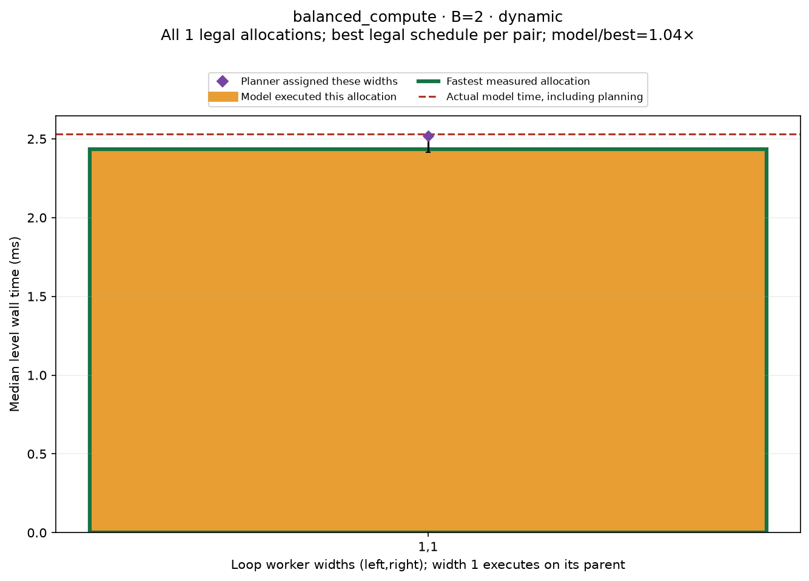
| left | right | median_ms | best_backend | best_order | best_parents | planner_assignment_fraction | model_selection_fraction | empirical_best |
|---|---|---|---|---|---|---|---|---|
| 1 | 1 | 2.436132 | ordinary | left,right | 2 | 1.0 | 1.0 | 1 |
{'case': 'balanced_compute', 'budget': 2, 'policy': 'ordinary-first', 'allocations': 1, 'schedules': 1, 'model_actual_left': 1, 'model_actual_right': 1, 'modal_selection_fraction': 1.0, 'requested_allocations': '1,1', 'best_config': '0:1:1:0:2', 'best_ms': 2.415744, 'model_ms': 2.480572, 'model_over_best_ratio': 1.026835624966884, 'ratio_bootstrap_low': 0.9718716746984312, 'ratio_bootstrap_high': 1.0747248052773803, 'allocation_only_ratio': 1.0, 'selected_schedule_replay_ratio': 1.0, 'exact_best_allocation_repeat_fraction': 1, 'fallback_fraction': 0, 'verdict': 'within 10%', 'ordinary_tasks': 0, 'total_tasks': 2, 'overloaded': 0}
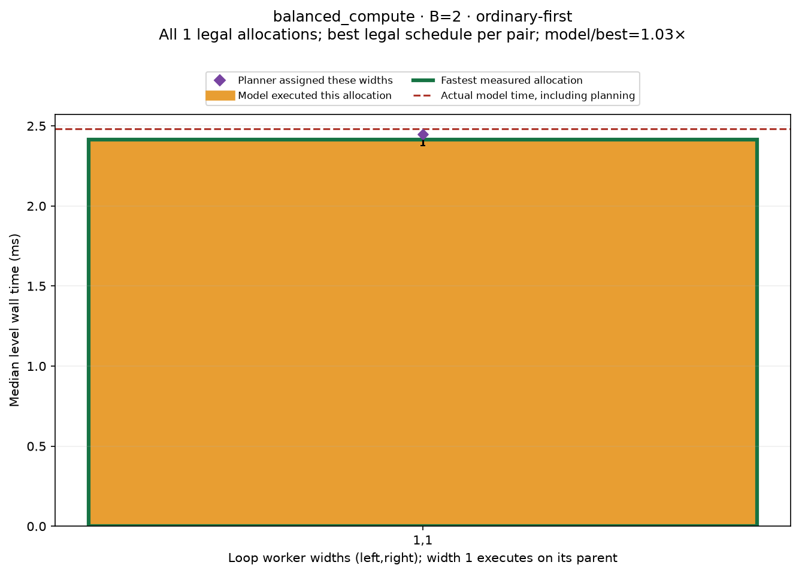
| left | right | median_ms | best_backend | best_order | best_parents | planner_assignment_fraction | model_selection_fraction | empirical_best |
|---|---|---|---|---|---|---|---|---|
| 1 | 1 | 2.415744 | ordinary | left,right | 2 | 1.0 | 1.0 | 1 |
{'case': 'balanced_compute', 'budget': 4, 'policy': 'dynamic', 'allocations': 9, 'schedules': 27, 'model_actual_left': 2, 'model_actual_right': 1, 'modal_selection_fraction': 1.0, 'requested_allocations': '2,1', 'best_config': '1:3:3:1:1', 'best_ms': 1.835458, 'model_ms': 2.483842, 'model_over_best_ratio': 1.353254610021041, 'ratio_bootstrap_low': 1.2527327096506398, 'ratio_bootstrap_high': 1.4469350797577918, 'allocation_only_ratio': 1.3160094101853597, 'selected_schedule_replay_ratio': 1.3160094101853597, 'exact_best_allocation_repeat_fraction': 0, 'fallback_fraction': 0.0, 'verdict': '>25% slower', 'ordinary_tasks': 0, 'total_tasks': 2, 'overloaded': 0}
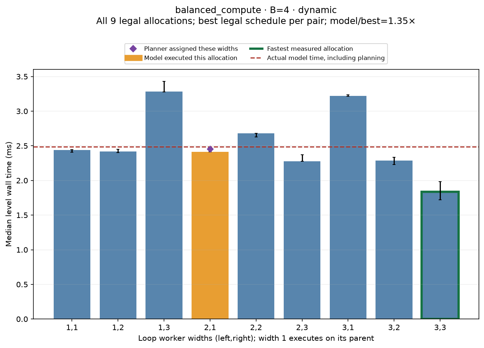
| left | right | median_ms | best_backend | best_order | best_parents | planner_assignment_fraction | model_selection_fraction | empirical_best |
|---|---|---|---|---|---|---|---|---|
| 1 | 1 | 2.438548 | ordinary | left,right | 2 | 0.0 | 0.0 | 0 |
| 1 | 2 | 2.420189 | ordinary | left,right | 2 | 0.0 | 0.0 | 0 |
| 1 | 3 | 3.280717 | joint | left,right | 1 | 0.0 | 0.0 | 0 |
| 2 | 1 | 2.41548 | joint | right,left | 2 | 1.0 | 1.0 | 0 |
| 2 | 2 | 2.680136 | joint | right,left | 1 | 0.0 | 0.0 | 0 |
| 2 | 3 | 2.278226 | joint | left,right | 1 | 0.0 | 0.0 | 0 |
| 3 | 1 | 3.220609 | joint | right,left | 1 | 0.0 | 0.0 | 0 |
| 3 | 2 | 2.284563 | joint | right,left | 1 | 0.0 | 0.0 | 0 |
| 3 | 3 | 1.835458 | joint | right,left | 1 | 0.0 | 0.0 | 1 |
{'case': 'balanced_compute', 'budget': 4, 'policy': 'ordinary-first', 'allocations': 3, 'schedules': 3, 'model_actual_left': 2, 'model_actual_right': 1, 'modal_selection_fraction': 1.0, 'requested_allocations': '2,1', 'best_config': '0:1:2:0:2', 'best_ms': 2.405008, 'model_ms': 2.505056, 'model_over_best_ratio': 1.0415998616220818, 'ratio_bootstrap_low': 1.0223047075103284, 'ratio_bootstrap_high': 1.0516272360747516, 'allocation_only_ratio': 1.025419004263508, 'selected_schedule_replay_ratio': 1.025419004263508, 'exact_best_allocation_repeat_fraction': 0, 'fallback_fraction': 0, 'verdict': 'within 10%', 'ordinary_tasks': 0, 'total_tasks': 2, 'overloaded': 0}
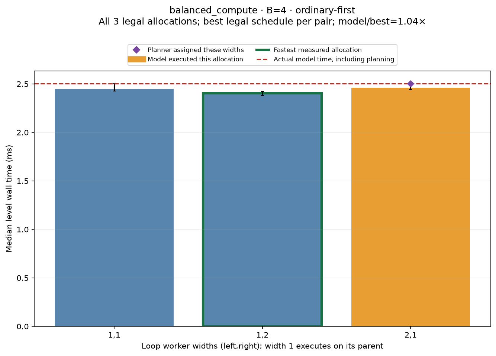
| left | right | median_ms | best_backend | best_order | best_parents | planner_assignment_fraction | model_selection_fraction | empirical_best |
|---|---|---|---|---|---|---|---|---|
| 1 | 1 | 2.450487 | ordinary | left,right | 2 | 0.0 | 0.0 | 0 |
| 1 | 2 | 2.405008 | ordinary | left,right | 2 | 0.0 | 0.0 | 1 |
| 2 | 1 | 2.460405 | ordinary | left,right | 2 | 1.0 | 1.0 | 0 |
{'case': 'balanced_compute', 'budget': 6, 'policy': 'dynamic', 'allocations': 25, 'schedules': 74, 'model_actual_left': 2, 'model_actual_right': 1, 'modal_selection_fraction': 1.0, 'requested_allocations': '2,1', 'best_config': '1:5:5:1:1', 'best_ms': 1.266226, 'model_ms': 2.564078, 'model_over_best_ratio': 2.0249765839589458, 'ratio_bootstrap_low': 1.5753035870203325, 'ratio_bootstrap_high': 2.195403834133895, 'allocation_only_ratio': 2.006404070047527, 'selected_schedule_replay_ratio': 2.006404070047527, 'exact_best_allocation_repeat_fraction': 0, 'fallback_fraction': 0.0, 'verdict': '>25% slower', 'ordinary_tasks': 0, 'total_tasks': 2, 'overloaded': 0}
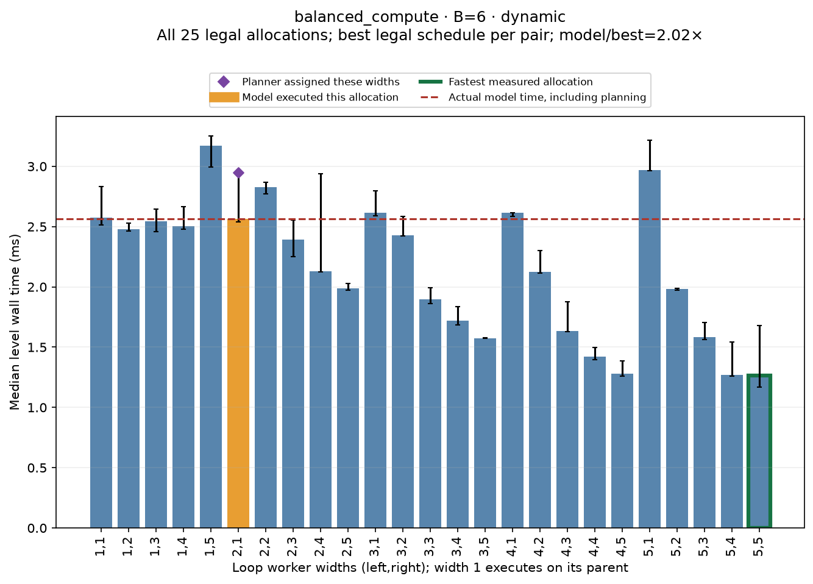
| left | right | median_ms | best_backend | best_order | best_parents | planner_assignment_fraction | model_selection_fraction | empirical_best |
|---|---|---|---|---|---|---|---|---|
| 1 | 1 | 2.576629 | joint | left,right | 2 | 0.0 | 0.0 | 0 |
| 1 | 2 | 2.479243 | ordinary | left,right | 2 | 0.0 | 0.0 | 0 |
| 1 | 3 | 2.546692 | ordinary | left,right | 2 | 0.0 | 0.0 | 0 |
| 1 | 4 | 2.503341 | ordinary | left,right | 2 | 0.0 | 0.0 | 0 |
| 1 | 5 | 3.172012 | joint | right,left | 1 | 0.0 | 0.0 | 0 |
| 2 | 1 | 2.563689 | joint | right,left | 2 | 1.0 | 1.0 | 0 |
| 2 | 2 | 2.825772 | joint | left,right | 1 | 0.0 | 0.0 | 0 |
| 2 | 3 | 2.393925 | joint | left,right | 1 | 0.0 | 0.0 | 0 |
| 2 | 4 | 2.13187 | joint | left,right | 1 | 0.0 | 0.0 | 0 |
| 2 | 5 | 1.986528 | joint | right,left | 1 | 0.0 | 0.0 | 0 |
| 3 | 1 | 2.613233 | joint | left,right | 2 | 0.0 | 0.0 | 0 |
| 3 | 2 | 2.427163 | joint | right,left | 1 | 0.0 | 0.0 | 0 |
| 3 | 3 | 1.894401 | joint | left,right | 1 | 0.0 | 0.0 | 0 |
| 3 | 4 | 1.719182 | joint | left,right | 1 | 0.0 | 0.0 | 0 |
| 3 | 5 | 1.571362 | joint | left,right | 1 | 0.0 | 0.0 | 0 |
| 4 | 1 | 2.612703 | joint | left,right | 2 | 0.0 | 0.0 | 0 |
| 4 | 2 | 2.126014 | joint | left,right | 1 | 0.0 | 0.0 | 0 |
| 4 | 3 | 1.636084 | joint | left,right | 1 | 0.0 | 0.0 | 0 |
| 4 | 4 | 1.419588 | joint | left,right | 1 | 0.0 | 0.0 | 0 |
| 4 | 5 | 1.278641 | joint | left,right | 1 | 0.0 | 0.0 | 0 |
| 5 | 1 | 2.968407 | joint | right,left | 1 | 0.0 | 0.0 | 0 |
| 5 | 2 | 1.983985 | joint | right,left | 1 | 0.0 | 0.0 | 0 |
| 5 | 3 | 1.583477 | joint | right,left | 1 | 0.0 | 0.0 | 0 |
| 5 | 4 | 1.271248 | joint | left,right | 1 | 0.0 | 0.0 | 0 |
| 5 | 5 | 1.266226 | joint | right,left | 1 | 0.0 | 0.0 | 1 |
{'case': 'balanced_compute', 'budget': 6, 'policy': 'ordinary-first', 'allocations': 8, 'schedules': 8, 'model_actual_left': 2, 'model_actual_right': 1, 'modal_selection_fraction': 0.6666666666666666, 'requested_allocations': '1,2;2,1', 'best_config': '0:1:1:0:2', 'best_ms': 2.453131, 'model_ms': 2.691783, 'model_over_best_ratio': 1.0972846537751144, 'ratio_bootstrap_low': 0.9468676105767246, 'ratio_bootstrap_high': 1.1738496639600575, 'allocation_only_ratio': 0.9862082375543744, 'selected_schedule_replay_ratio': 0.9862082375543744, 'exact_best_allocation_repeat_fraction': 0, 'fallback_fraction': 0, 'verdict': 'within 10%', 'ordinary_tasks': 0, 'total_tasks': 2, 'overloaded': 0}
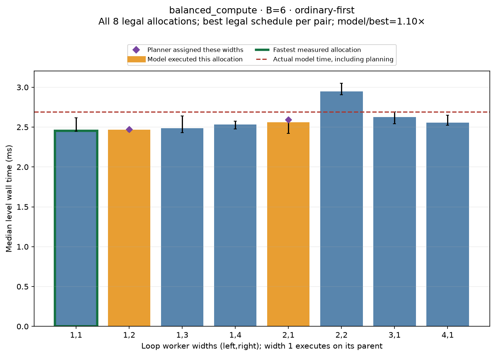
| left | right | median_ms | best_backend | best_order | best_parents | planner_assignment_fraction | model_selection_fraction | empirical_best |
|---|---|---|---|---|---|---|---|---|
| 1 | 1 | 2.453131 | ordinary | left,right | 2 | 0.0 | 0.0 | 1 |
| 1 | 2 | 2.469129 | ordinary | left,right | 2 | 0.3333333333333333 | 0.3333333333333333 | 0 |
| 1 | 3 | 2.485194 | ordinary | left,right | 2 | 0.0 | 0.0 | 0 |
| 1 | 4 | 2.530707 | ordinary | left,right | 2 | 0.0 | 0.0 | 0 |
| 2 | 1 | 2.558972 | ordinary | left,right | 2 | 0.6666666666666666 | 0.6666666666666666 | 0 |
| 2 | 2 | 2.946394 | ordinary | left,right | 2 | 0.0 | 0.0 | 0 |
| 3 | 1 | 2.628074 | ordinary | left,right | 2 | 0.0 | 0.0 | 0 |
| 4 | 1 | 2.555517 | ordinary | left,right | 2 | 0.0 | 0.0 | 0 |
{'case': 'balanced_compute', 'budget': 8, 'policy': 'dynamic', 'allocations': 49, 'schedules': 149, 'model_actual_left': 3, 'model_actual_right': 3, 'modal_selection_fraction': 1.0, 'requested_allocations': '3,3', 'best_config': '1:5:6:0:1', 'best_ms': 1.156475, 'model_ms': 1.965123, 'model_over_best_ratio': 1.699235175857671, 'ratio_bootstrap_low': 1.48728507616088, 'ratio_bootstrap_high': 1.8563885946518515, 'allocation_only_ratio': 1.6915125705268164, 'selected_schedule_replay_ratio': 1.8302122255688078, 'exact_best_allocation_repeat_fraction': 0, 'fallback_fraction': 0.0, 'verdict': '>25% slower', 'ordinary_tasks': 0, 'total_tasks': 2, 'overloaded': 0}
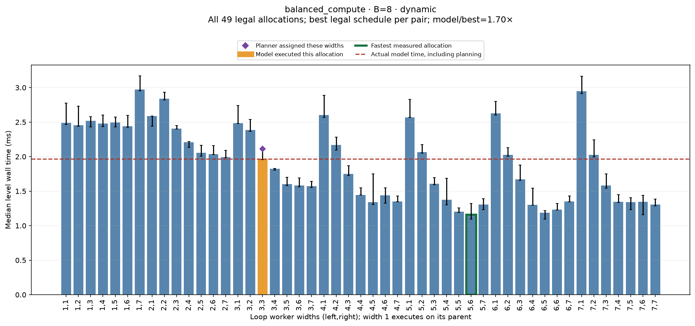
| left | right | median_ms | best_backend | best_order | best_parents | planner_assignment_fraction | model_selection_fraction | empirical_best |
|---|---|---|---|---|---|---|---|---|
| 1 | 1 | 2.490756 | ordinary | left,right | 2 | 0.0 | 0.0 | 0 |
| 1 | 2 | 2.453894 | ordinary | left,right | 2 | 0.0 | 0.0 | 0 |
| 1 | 3 | 2.519554 | ordinary | left,right | 2 | 0.0 | 0.0 | 0 |
| 1 | 4 | 2.479066 | ordinary | left,right | 2 | 0.0 | 0.0 | 0 |
| 1 | 5 | 2.49342 | ordinary | left,right | 2 | 0.0 | 0.0 | 0 |
| 1 | 6 | 2.438607 | ordinary | left,right | 2 | 0.0 | 0.0 | 0 |
| 1 | 7 | 2.97283 | joint | right,left | 1 | 0.0 | 0.0 | 0 |
| 2 | 1 | 2.586415 | joint | right,left | 2 | 0.0 | 0.0 | 0 |
| 2 | 2 | 2.839897 | joint | left,right | 1 | 0.0 | 0.0 | 0 |
| 2 | 3 | 2.40465 | joint | right,left | 1 | 0.0 | 0.0 | 0 |
| 2 | 4 | 2.207988 | joint | left,right | 1 | 0.0 | 0.0 | 0 |
| 2 | 5 | 2.055914 | joint | right,left | 1 | 0.0 | 0.0 | 0 |
| 2 | 6 | 2.036501 | joint | right,left | 1 | 0.0 | 0.0 | 0 |
| 2 | 7 | 1.990766 | joint | right,left | 1 | 0.0 | 0.0 | 0 |
| 3 | 1 | 2.484237 | ordinary | left,right | 2 | 0.0 | 0.0 | 0 |
| 3 | 2 | 2.385851 | joint | left,right | 1 | 0.0 | 0.0 | 0 |
| 3 | 3 | 1.964564 | joint | right,left | 1 | 1.0 | 1.0 | 0 |
| 3 | 4 | 1.823108 | joint | right,left | 1 | 0.0 | 0.0 | 0 |
| 3 | 5 | 1.601838 | joint | left,right | 1 | 0.0 | 0.0 | 0 |
| 3 | 6 | 1.583493 | joint | left,right | 1 | 0.0 | 0.0 | 0 |
| 3 | 7 | 1.571237 | joint | right,left | 1 | 0.0 | 0.0 | 0 |
| 4 | 1 | 2.604682 | joint | left,right | 2 | 0.0 | 0.0 | 0 |
| 4 | 2 | 2.167649 | joint | left,right | 1 | 0.0 | 0.0 | 0 |
| 4 | 3 | 1.752263 | joint | left,right | 1 | 0.0 | 0.0 | 0 |
| 4 | 4 | 1.44653 | joint | left,right | 1 | 0.0 | 0.0 | 0 |
| 4 | 5 | 1.34287 | joint | right,left | 1 | 0.0 | 0.0 | 0 |
| 4 | 6 | 1.439583 | joint | left,right | 1 | 0.0 | 0.0 | 0 |
| 4 | 7 | 1.34943 | joint | right,left | 1 | 0.0 | 0.0 | 0 |
| 5 | 1 | 2.570765 | joint | right,left | 2 | 0.0 | 0.0 | 0 |
| 5 | 2 | 2.06564 | joint | left,right | 1 | 0.0 | 0.0 | 0 |
| 5 | 3 | 1.609065 | joint | right,left | 1 | 0.0 | 0.0 | 0 |
| 5 | 4 | 1.377414 | joint | right,left | 1 | 0.0 | 0.0 | 0 |
| 5 | 5 | 1.205466 | joint | left,right | 1 | 0.0 | 0.0 | 0 |
| 5 | 6 | 1.156475 | joint | left,right | 1 | 0.0 | 0.0 | 1 |
| 5 | 7 | 1.30717 | joint | right,left | 1 | 0.0 | 0.0 | 0 |
| 6 | 1 | 2.628183 | ordinary | left,right | 2 | 0.0 | 0.0 | 0 |
| 6 | 2 | 2.024166 | joint | right,left | 1 | 0.0 | 0.0 | 0 |
| 6 | 3 | 1.673016 | joint | left,right | 1 | 0.0 | 0.0 | 0 |
| 6 | 4 | 1.300826 | joint | right,left | 1 | 0.0 | 0.0 | 0 |
| 6 | 5 | 1.189731 | joint | right,left | 1 | 0.0 | 0.0 | 0 |
| 6 | 6 | 1.23036 | joint | left,right | 1 | 0.0 | 0.0 | 0 |
| 6 | 7 | 1.348507 | joint | right,left | 1 | 0.0 | 0.0 | 0 |
| 7 | 1 | 2.946565 | joint | left,right | 1 | 0.0 | 0.0 | 0 |
| 7 | 2 | 2.027656 | joint | right,left | 1 | 0.0 | 0.0 | 0 |
| 7 | 3 | 1.581371 | joint | right,left | 1 | 0.0 | 0.0 | 0 |
| 7 | 4 | 1.345073 | joint | left,right | 1 | 0.0 | 0.0 | 0 |
| 7 | 5 | 1.339734 | joint | left,right | 1 | 0.0 | 0.0 | 0 |
| 7 | 6 | 1.348324 | joint | left,right | 1 | 0.0 | 0.0 | 0 |
| 7 | 7 | 1.305022 | joint | left,right | 1 | 0.0 | 0.0 | 0 |
{'case': 'balanced_compute', 'budget': 8, 'policy': 'ordinary-first', 'allocations': 17, 'schedules': 17, 'model_actual_left': 3, 'model_actual_right': 3, 'modal_selection_fraction': 1.0, 'requested_allocations': '3,3', 'best_config': '0:3:3:0:2', 'best_ms': 2.149823, 'model_ms': 2.135552, 'model_over_best_ratio': 0.9933617790859992, 'ratio_bootstrap_low': 0.9823342835347493, 'ratio_bootstrap_high': 0.9933617790859992, 'allocation_only_ratio': 1.0, 'selected_schedule_replay_ratio': 1.0, 'exact_best_allocation_repeat_fraction': 1, 'fallback_fraction': 0, 'verdict': 'within 10%', 'ordinary_tasks': 0, 'total_tasks': 2, 'overloaded': 0}
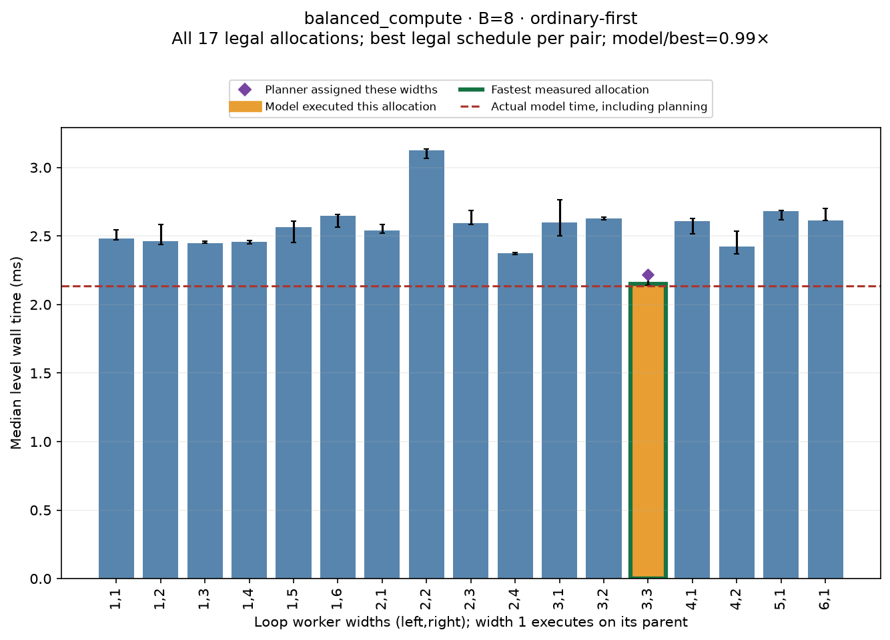
| left | right | median_ms | best_backend | best_order | best_parents | planner_assignment_fraction | model_selection_fraction | empirical_best |
|---|---|---|---|---|---|---|---|---|
| 1 | 1 | 2.484139 | ordinary | left,right | 2 | 0.0 | 0.0 | 0 |
| 1 | 2 | 2.461883 | ordinary | left,right | 2 | 0.0 | 0.0 | 0 |
| 1 | 3 | 2.448668 | ordinary | left,right | 2 | 0.0 | 0.0 | 0 |
| 1 | 4 | 2.458375 | ordinary | left,right | 2 | 0.0 | 0.0 | 0 |
| 1 | 5 | 2.566606 | ordinary | left,right | 2 | 0.0 | 0.0 | 0 |
| 1 | 6 | 2.645572 | ordinary | left,right | 2 | 0.0 | 0.0 | 0 |
| 2 | 1 | 2.538087 | ordinary | left,right | 2 | 0.0 | 0.0 | 0 |
| 2 | 2 | 3.12598 | ordinary | left,right | 2 | 0.0 | 0.0 | 0 |
| 2 | 3 | 2.595278 | ordinary | left,right | 2 | 0.0 | 0.0 | 0 |
| 2 | 4 | 2.373398 | ordinary | left,right | 2 | 0.0 | 0.0 | 0 |
| 3 | 1 | 2.599836 | ordinary | left,right | 2 | 0.0 | 0.0 | 0 |
| 3 | 2 | 2.630116 | ordinary | left,right | 2 | 0.0 | 0.0 | 0 |
| 3 | 3 | 2.149823 | ordinary | left,right | 2 | 1.0 | 1.0 | 1 |
| 4 | 1 | 2.60616 | ordinary | left,right | 2 | 0.0 | 0.0 | 0 |
| 4 | 2 | 2.425588 | ordinary | left,right | 2 | 0.0 | 0.0 | 0 |
| 5 | 1 | 2.68121 | ordinary | left,right | 2 | 0.0 | 0.0 | 0 |
| 6 | 1 | 2.613309 | ordinary | left,right | 2 | 0.0 | 0.0 | 0 |
{'case': 'chunk_edge', 'budget': 2, 'policy': 'dynamic', 'allocations': 1, 'schedules': 5, 'model_actual_left': 1, 'model_actual_right': 1, 'modal_selection_fraction': 1.0, 'requested_allocations': '1,1', 'best_config': '1:1:1:1:1', 'best_ms': 0.011168, 'model_ms': 0.012021, 'model_over_best_ratio': 1.0763789398280803, 'ratio_bootstrap_low': 1.0664582402858418, 'ratio_bootstrap_high': 1.0809279741030482, 'allocation_only_ratio': 1.0, 'selected_schedule_replay_ratio': 1.0, 'exact_best_allocation_repeat_fraction': 1, 'fallback_fraction': 0.0, 'verdict': 'within 10%', 'ordinary_tasks': 0, 'total_tasks': 2, 'overloaded': 0}
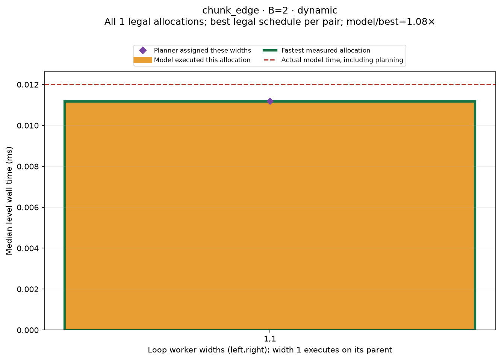
| left | right | median_ms | best_backend | best_order | best_parents | planner_assignment_fraction | model_selection_fraction | empirical_best |
|---|---|---|---|---|---|---|---|---|
| 1 | 1 | 0.011168 | joint | right,left | 1 | 1.0 | 1.0 | 1 |
{'case': 'chunk_edge', 'budget': 2, 'policy': 'ordinary-first', 'allocations': 1, 'schedules': 1, 'model_actual_left': 1, 'model_actual_right': 1, 'modal_selection_fraction': 1.0, 'requested_allocations': '1,1', 'best_config': '0:1:1:0:2', 'best_ms': 0.177724, 'model_ms': 0.153984, 'model_over_best_ratio': 0.8664220926830366, 'ratio_bootstrap_low': 0.8380193355791088, 'ratio_bootstrap_high': 1.0089408296009543, 'allocation_only_ratio': 1.0, 'selected_schedule_replay_ratio': 1.0, 'exact_best_allocation_repeat_fraction': 1, 'fallback_fraction': 0, 'verdict': 'within 10%', 'ordinary_tasks': 0, 'total_tasks': 2, 'overloaded': 0}
| left | right | median_ms | best_backend | best_order | best_parents | planner_assignment_fraction | model_selection_fraction | empirical_best |
|---|---|---|---|---|---|---|---|---|
| 1 | 1 | 0.177724 | ordinary | left,right | 2 | 1.0 | 1.0 | 1 |
{'case': 'chunk_edge', 'budget': 4, 'policy': 'dynamic', 'allocations': 9, 'schedules': 27, 'model_actual_left': 1, 'model_actual_right': 1, 'modal_selection_fraction': 1.0, 'requested_allocations': '1,1', 'best_config': '1:1:1:1:1', 'best_ms': 0.011167, 'model_ms': 0.012058, 'model_over_best_ratio': 1.0797886630249842, 'ratio_bootstrap_low': 1.0540066631597405, 'ratio_bootstrap_high': 1.0872212769768066, 'allocation_only_ratio': 1.0, 'selected_schedule_replay_ratio': 1.0, 'exact_best_allocation_repeat_fraction': 1, 'fallback_fraction': 0.0, 'verdict': 'within 10%', 'ordinary_tasks': 0, 'total_tasks': 2, 'overloaded': 0}
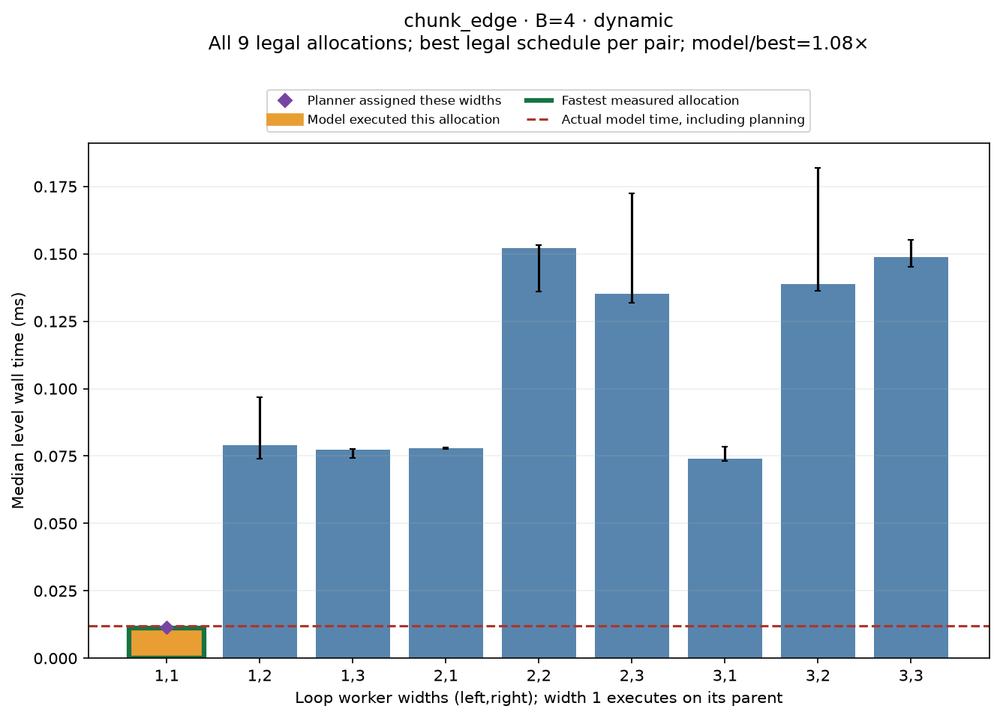
| left | right | median_ms | best_backend | best_order | best_parents | planner_assignment_fraction | model_selection_fraction | empirical_best |
|---|---|---|---|---|---|---|---|---|
| 1 | 1 | 0.011167 | joint | right,left | 1 | 1.0 | 1.0 | 1 |
| 1 | 2 | 0.079044 | joint | right,left | 1 | 0.0 | 0.0 | 0 |
| 1 | 3 | 0.077336 | joint | right,left | 1 | 0.0 | 0.0 | 0 |
| 2 | 1 | 0.077842 | joint | left,right | 1 | 0.0 | 0.0 | 0 |
| 2 | 2 | 0.152074 | joint | right,left | 1 | 0.0 | 0.0 | 0 |
| 2 | 3 | 0.135112 | joint | right,left | 1 | 0.0 | 0.0 | 0 |
| 3 | 1 | 0.073984 | joint | right,left | 1 | 0.0 | 0.0 | 0 |
| 3 | 2 | 0.138694 | joint | right,left | 1 | 0.0 | 0.0 | 0 |
| 3 | 3 | 0.148841 | joint | left,right | 1 | 0.0 | 0.0 | 0 |
{'case': 'chunk_edge', 'budget': 4, 'policy': 'ordinary-first', 'allocations': 3, 'schedules': 3, 'model_actual_left': 1, 'model_actual_right': 1, 'modal_selection_fraction': 1.0, 'requested_allocations': '1,1', 'best_config': '0:1:1:0:2', 'best_ms': 0.183415, 'model_ms': 0.179268, 'model_over_best_ratio': 0.9773900716953358, 'ratio_bootstrap_low': 0.9180276033461291, 'ratio_bootstrap_high': 0.9996571985623764, 'allocation_only_ratio': 1.0, 'selected_schedule_replay_ratio': 1.0, 'exact_best_allocation_repeat_fraction': 1, 'fallback_fraction': 0, 'verdict': 'within 10%', 'ordinary_tasks': 0, 'total_tasks': 2, 'overloaded': 0}
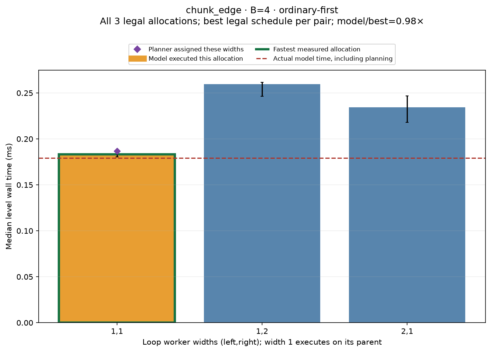
| left | right | median_ms | best_backend | best_order | best_parents | planner_assignment_fraction | model_selection_fraction | empirical_best |
|---|---|---|---|---|---|---|---|---|
| 1 | 1 | 0.183415 | ordinary | left,right | 2 | 1.0 | 1.0 | 1 |
| 1 | 2 | 0.25968 | ordinary | left,right | 2 | 0.0 | 0.0 | 0 |
| 2 | 1 | 0.234517 | ordinary | left,right | 2 | 0.0 | 0.0 | 0 |
{'case': 'chunk_edge', 'budget': 6, 'policy': 'dynamic', 'allocations': 25, 'schedules': 74, 'model_actual_left': 1, 'model_actual_right': 1, 'modal_selection_fraction': 1.0, 'requested_allocations': '1,1', 'best_config': '1:1:1:1:1', 'best_ms': 0.011131, 'model_ms': 0.012003, 'model_over_best_ratio': 1.0783397718084629, 'ratio_bootstrap_low': 1.0742672181262363, 'ratio_bootstrap_high': 1.0789237668161435, 'allocation_only_ratio': 1.0, 'selected_schedule_replay_ratio': 1.0, 'exact_best_allocation_repeat_fraction': 1, 'fallback_fraction': 0.0, 'verdict': 'within 10%', 'ordinary_tasks': 0, 'total_tasks': 2, 'overloaded': 0}
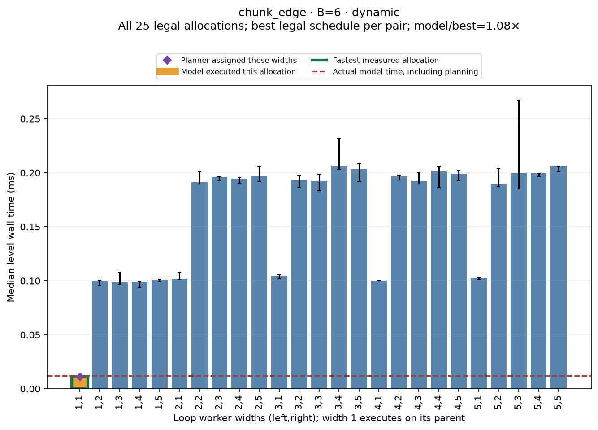
| left | right | median_ms | best_backend | best_order | best_parents | planner_assignment_fraction | model_selection_fraction | empirical_best |
|---|---|---|---|---|---|---|---|---|
| 1 | 1 | 0.011131 | joint | right,left | 1 | 1.0 | 1.0 | 1 |
| 1 | 2 | 0.10026 | joint | right,left | 1 | 0.0 | 0.0 | 0 |
| 1 | 3 | 0.098331 | joint | left,right | 1 | 0.0 | 0.0 | 0 |
| 1 | 4 | 0.0989 | joint | left,right | 1 | 0.0 | 0.0 | 0 |
| 1 | 5 | 0.101012 | joint | left,right | 1 | 0.0 | 0.0 | 0 |
| 2 | 1 | 0.101747 | joint | left,right | 1 | 0.0 | 0.0 | 0 |
| 2 | 2 | 0.191161 | joint | left,right | 1 | 0.0 | 0.0 | 0 |
| 2 | 3 | 0.196018 | joint | right,left | 1 | 0.0 | 0.0 | 0 |
| 2 | 4 | 0.194512 | joint | right,left | 1 | 0.0 | 0.0 | 0 |
| 2 | 5 | 0.197212 | joint | left,right | 1 | 0.0 | 0.0 | 0 |
| 3 | 1 | 0.10386 | joint | right,left | 1 | 0.0 | 0.0 | 0 |
| 3 | 2 | 0.193419 | joint | left,right | 1 | 0.0 | 0.0 | 0 |
| 3 | 3 | 0.192556 | joint | right,left | 1 | 0.0 | 0.0 | 0 |
| 3 | 4 | 0.206139 | joint | left,right | 1 | 0.0 | 0.0 | 0 |
| 3 | 5 | 0.203347 | joint | left,right | 1 | 0.0 | 0.0 | 0 |
| 4 | 1 | 0.0998 | joint | right,left | 1 | 0.0 | 0.0 | 0 |
| 4 | 2 | 0.196569 | joint | left,right | 1 | 0.0 | 0.0 | 0 |
| 4 | 3 | 0.192565 | joint | right,left | 1 | 0.0 | 0.0 | 0 |
| 4 | 4 | 0.201593 | joint | right,left | 1 | 0.0 | 0.0 | 0 |
| 4 | 5 | 0.198911 | joint | right,left | 1 | 0.0 | 0.0 | 0 |
| 5 | 1 | 0.102307 | joint | right,left | 1 | 0.0 | 0.0 | 0 |
| 5 | 2 | 0.189516 | joint | left,right | 1 | 0.0 | 0.0 | 0 |
| 5 | 3 | 0.199618 | joint | left,right | 1 | 0.0 | 0.0 | 0 |
| 5 | 4 | 0.199628 | joint | right,left | 1 | 0.0 | 0.0 | 0 |
| 5 | 5 | 0.206038 | joint | left,right | 1 | 0.0 | 0.0 | 0 |
{'case': 'chunk_edge', 'budget': 6, 'policy': 'ordinary-first', 'allocations': 8, 'schedules': 8, 'model_actual_left': 1, 'model_actual_right': 1, 'modal_selection_fraction': 1.0, 'requested_allocations': '1,1', 'best_config': '0:1:1:0:2', 'best_ms': 0.175612, 'model_ms': 0.177091, 'model_over_best_ratio': 1.0084219757191992, 'ratio_bootstrap_low': 0.9843120060132565, 'ratio_bootstrap_high': 1.019510425901832, 'allocation_only_ratio': 1.0, 'selected_schedule_replay_ratio': 1.0, 'exact_best_allocation_repeat_fraction': 1, 'fallback_fraction': 0, 'verdict': 'within 10%', 'ordinary_tasks': 0, 'total_tasks': 2, 'overloaded': 0}
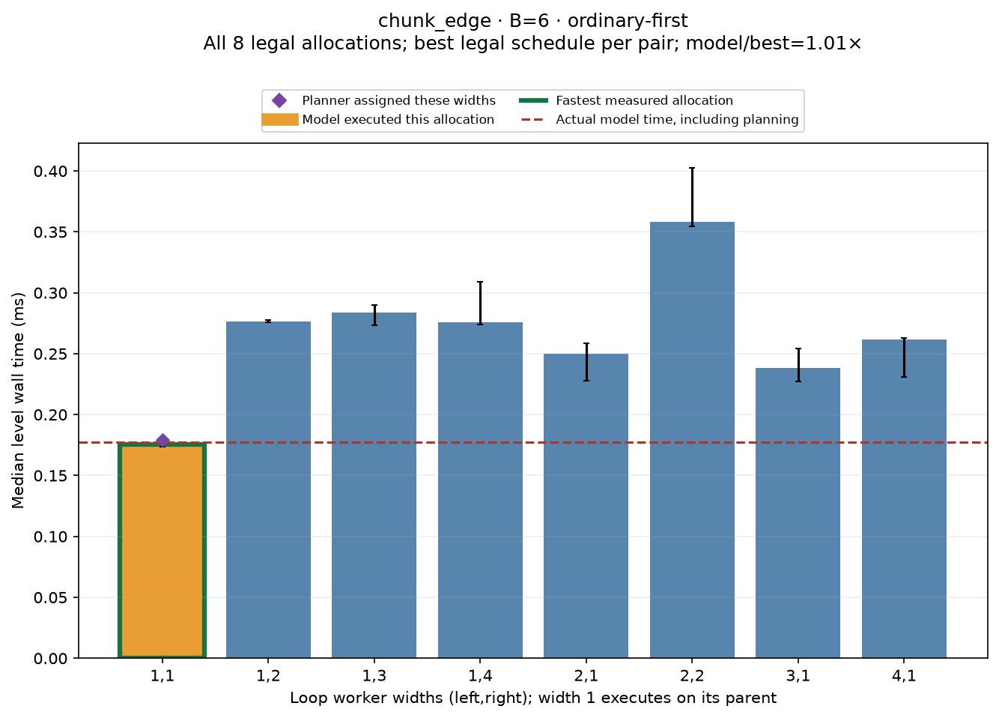
| left | right | median_ms | best_backend | best_order | best_parents | planner_assignment_fraction | model_selection_fraction | empirical_best |
|---|---|---|---|---|---|---|---|---|
| 1 | 1 | 0.175612 | ordinary | left,right | 2 | 1.0 | 1.0 | 1 |
| 1 | 2 | 0.27634 | ordinary | left,right | 2 | 0.0 | 0.0 | 0 |
| 1 | 3 | 0.284045 | ordinary | left,right | 2 | 0.0 | 0.0 | 0 |
| 1 | 4 | 0.275881 | ordinary | left,right | 2 | 0.0 | 0.0 | 0 |
| 2 | 1 | 0.250028 | ordinary | left,right | 2 | 0.0 | 0.0 | 0 |
| 2 | 2 | 0.358204 | ordinary | left,right | 2 | 0.0 | 0.0 | 0 |
| 3 | 1 | 0.238319 | ordinary | left,right | 2 | 0.0 | 0.0 | 0 |
| 4 | 1 | 0.261502 | ordinary | left,right | 2 | 0.0 | 0.0 | 0 |
{'case': 'chunk_edge', 'budget': 8, 'policy': 'dynamic', 'allocations': 49, 'schedules': 149, 'model_actual_left': 1, 'model_actual_right': 1, 'modal_selection_fraction': 1.0, 'requested_allocations': '1,1', 'best_config': '1:1:1:1:1', 'best_ms': 0.011214, 'model_ms': 0.012031, 'model_over_best_ratio': 1.0728553593722132, 'ratio_bootstrap_low': 1.0599066161571669, 'ratio_bootstrap_high': 1.0805627744421542, 'allocation_only_ratio': 1.0, 'selected_schedule_replay_ratio': 1.0, 'exact_best_allocation_repeat_fraction': 1, 'fallback_fraction': 0.0, 'verdict': 'within 10%', 'ordinary_tasks': 0, 'total_tasks': 2, 'overloaded': 0}
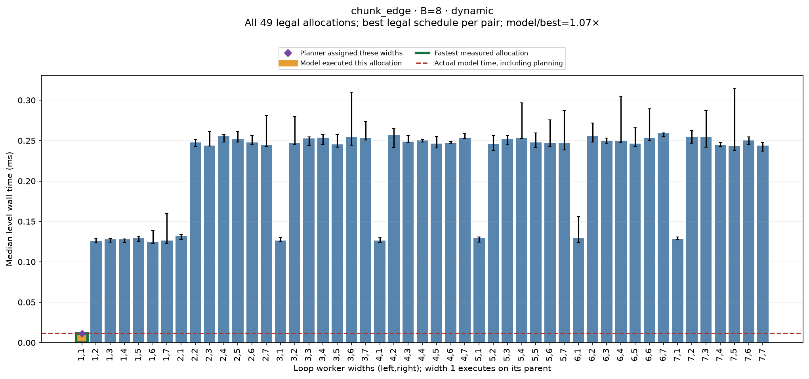
| left | right | median_ms | best_backend | best_order | best_parents | planner_assignment_fraction | model_selection_fraction | empirical_best |
|---|---|---|---|---|---|---|---|---|
| 1 | 1 | 0.011214 | joint | right,left | 1 | 1.0 | 1.0 | 1 |
| 1 | 2 | 0.125202 | joint | right,left | 1 | 0.0 | 0.0 | 0 |
| 1 | 3 | 0.127995 | joint | left,right | 1 | 0.0 | 0.0 | 0 |
| 1 | 4 | 0.127856 | joint | right,left | 1 | 0.0 | 0.0 | 0 |
| 1 | 5 | 0.129518 | joint | right,left | 1 | 0.0 | 0.0 | 0 |
| 1 | 6 | 0.124587 | joint | left,right | 1 | 0.0 | 0.0 | 0 |
| 1 | 7 | 0.126525 | joint | left,right | 1 | 0.0 | 0.0 | 0 |
| 2 | 1 | 0.13231 | joint | right,left | 1 | 0.0 | 0.0 | 0 |
| 2 | 2 | 0.247584 | joint | left,right | 1 | 0.0 | 0.0 | 0 |
| 2 | 3 | 0.243737 | joint | right,left | 1 | 0.0 | 0.0 | 0 |
| 2 | 4 | 0.25608 | joint | right,left | 1 | 0.0 | 0.0 | 0 |
| 2 | 5 | 0.25203 | joint | left,right | 1 | 0.0 | 0.0 | 0 |
| 2 | 6 | 0.247667 | joint | left,right | 1 | 0.0 | 0.0 | 0 |
| 2 | 7 | 0.244462 | joint | right,left | 1 | 0.0 | 0.0 | 0 |
| 3 | 1 | 0.126405 | joint | left,right | 1 | 0.0 | 0.0 | 0 |
| 3 | 2 | 0.247205 | joint | right,left | 1 | 0.0 | 0.0 | 0 |
| 3 | 3 | 0.252627 | joint | right,left | 1 | 0.0 | 0.0 | 0 |
| 3 | 4 | 0.253637 | joint | left,right | 1 | 0.0 | 0.0 | 0 |
| 3 | 5 | 0.245234 | joint | right,left | 1 | 0.0 | 0.0 | 0 |
| 3 | 6 | 0.254151 | joint | left,right | 1 | 0.0 | 0.0 | 0 |
| 3 | 7 | 0.253114 | joint | right,left | 1 | 0.0 | 0.0 | 0 |
| 4 | 1 | 0.126202 | joint | left,right | 1 | 0.0 | 0.0 | 0 |
| 4 | 2 | 0.256962 | joint | left,right | 1 | 0.0 | 0.0 | 0 |
| 4 | 3 | 0.24888 | joint | left,right | 1 | 0.0 | 0.0 | 0 |
| 4 | 4 | 0.250065 | joint | left,right | 1 | 0.0 | 0.0 | 0 |
| 4 | 5 | 0.246474 | joint | right,left | 1 | 0.0 | 0.0 | 0 |
| 4 | 6 | 0.246776 | joint | left,right | 1 | 0.0 | 0.0 | 0 |
| 4 | 7 | 0.253481 | joint | right,left | 1 | 0.0 | 0.0 | 0 |
| 5 | 1 | 0.129811 | joint | right,left | 1 | 0.0 | 0.0 | 0 |
| 5 | 2 | 0.245887 | joint | right,left | 1 | 0.0 | 0.0 | 0 |
| 5 | 3 | 0.252196 | joint | left,right | 1 | 0.0 | 0.0 | 0 |
| 5 | 4 | 0.253362 | joint | left,right | 1 | 0.0 | 0.0 | 0 |
| 5 | 5 | 0.24753 | joint | left,right | 1 | 0.0 | 0.0 | 0 |
| 5 | 6 | 0.24719 | joint | left,right | 1 | 0.0 | 0.0 | 0 |
| 5 | 7 | 0.247434 | joint | left,right | 1 | 0.0 | 0.0 | 0 |
| 6 | 1 | 0.130015 | joint | left,right | 1 | 0.0 | 0.0 | 0 |
| 6 | 2 | 0.25633 | joint | right,left | 1 | 0.0 | 0.0 | 0 |
| 6 | 3 | 0.24979 | joint | right,left | 1 | 0.0 | 0.0 | 0 |
| 6 | 4 | 0.24911 | joint | left,right | 1 | 0.0 | 0.0 | 0 |
| 6 | 5 | 0.246539 | joint | left,right | 1 | 0.0 | 0.0 | 0 |
| 6 | 6 | 0.253417 | joint | right,left | 1 | 0.0 | 0.0 | 0 |
| 6 | 7 | 0.258798 | joint | right,left | 1 | 0.0 | 0.0 | 0 |
| 7 | 1 | 0.128463 | joint | left,right | 1 | 0.0 | 0.0 | 0 |
| 7 | 2 | 0.253918 | joint | left,right | 1 | 0.0 | 0.0 | 0 |
| 7 | 3 | 0.254543 | joint | left,right | 1 | 0.0 | 0.0 | 0 |
| 7 | 4 | 0.244985 | joint | left,right | 1 | 0.0 | 0.0 | 0 |
| 7 | 5 | 0.243122 | joint | left,right | 1 | 0.0 | 0.0 | 0 |
| 7 | 6 | 0.250304 | joint | left,right | 1 | 0.0 | 0.0 | 0 |
| 7 | 7 | 0.244077 | joint | left,right | 1 | 0.0 | 0.0 | 0 |
{'case': 'chunk_edge', 'budget': 8, 'policy': 'ordinary-first', 'allocations': 17, 'schedules': 17, 'model_actual_left': 1, 'model_actual_right': 1, 'modal_selection_fraction': 1.0, 'requested_allocations': '1,1', 'best_config': '0:1:1:0:2', 'best_ms': 0.17485, 'model_ms': 0.17304, 'model_over_best_ratio': 0.9896482699456677, 'ratio_bootstrap_low': 0.9824784529257463, 'ratio_bootstrap_high': 1.0223734629682586, 'allocation_only_ratio': 1.0, 'selected_schedule_replay_ratio': 1.0, 'exact_best_allocation_repeat_fraction': 1, 'fallback_fraction': 0, 'verdict': 'within 10%', 'ordinary_tasks': 0, 'total_tasks': 2, 'overloaded': 0}
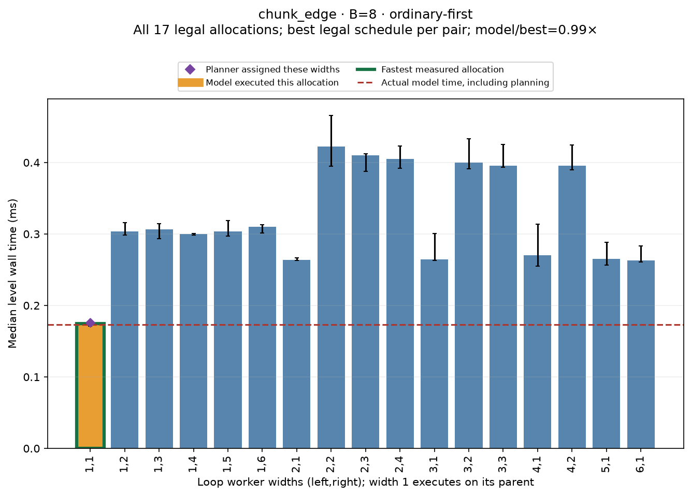
| left | right | median_ms | best_backend | best_order | best_parents | planner_assignment_fraction | model_selection_fraction | empirical_best |
|---|---|---|---|---|---|---|---|---|
| 1 | 1 | 0.17485 | ordinary | left,right | 2 | 1.0 | 1.0 | 1 |
| 1 | 2 | 0.303243 | ordinary | left,right | 2 | 0.0 | 0.0 | 0 |
| 1 | 3 | 0.306269 | ordinary | left,right | 2 | 0.0 | 0.0 | 0 |
| 1 | 4 | 0.299798 | ordinary | left,right | 2 | 0.0 | 0.0 | 0 |
| 1 | 5 | 0.30334 | ordinary | left,right | 2 | 0.0 | 0.0 | 0 |
| 1 | 6 | 0.310315 | ordinary | left,right | 2 | 0.0 | 0.0 | 0 |
| 2 | 1 | 0.263574 | ordinary | left,right | 2 | 0.0 | 0.0 | 0 |
| 2 | 2 | 0.422242 | ordinary | left,right | 2 | 0.0 | 0.0 | 0 |
| 2 | 3 | 0.409963 | ordinary | left,right | 2 | 0.0 | 0.0 | 0 |
| 2 | 4 | 0.404875 | ordinary | left,right | 2 | 0.0 | 0.0 | 0 |
| 3 | 1 | 0.264419 | ordinary | left,right | 2 | 0.0 | 0.0 | 0 |
| 3 | 2 | 0.40023 | ordinary | left,right | 2 | 0.0 | 0.0 | 0 |
| 3 | 3 | 0.395765 | ordinary | left,right | 2 | 0.0 | 0.0 | 0 |
| 4 | 1 | 0.270356 | ordinary | left,right | 2 | 0.0 | 0.0 | 0 |
| 4 | 2 | 0.395531 | ordinary | left,right | 2 | 0.0 | 0.0 | 0 |
| 5 | 1 | 0.264897 | ordinary | left,right | 2 | 0.0 | 0.0 | 0 |
| 6 | 1 | 0.263326 | ordinary | left,right | 2 | 0.0 | 0.0 | 0 |
{'case': 'large_arrays', 'budget': 2, 'policy': 'dynamic', 'allocations': 1, 'schedules': 5, 'model_actual_left': 1, 'model_actual_right': 1, 'modal_selection_fraction': 1.0, 'requested_allocations': '1,1', 'best_config': '0:1:1:0:2', 'best_ms': 5.560324, 'model_ms': 5.769877, 'model_over_best_ratio': 1.03768719232908, 'ratio_bootstrap_low': 1.033562141980176, 'ratio_bootstrap_high': 1.0666914369207936, 'allocation_only_ratio': 1.0, 'selected_schedule_replay_ratio': 1.0236834051623263, 'exact_best_allocation_repeat_fraction': 1, 'fallback_fraction': 0.0, 'verdict': 'within 10%', 'ordinary_tasks': 0, 'total_tasks': 2, 'overloaded': 0}
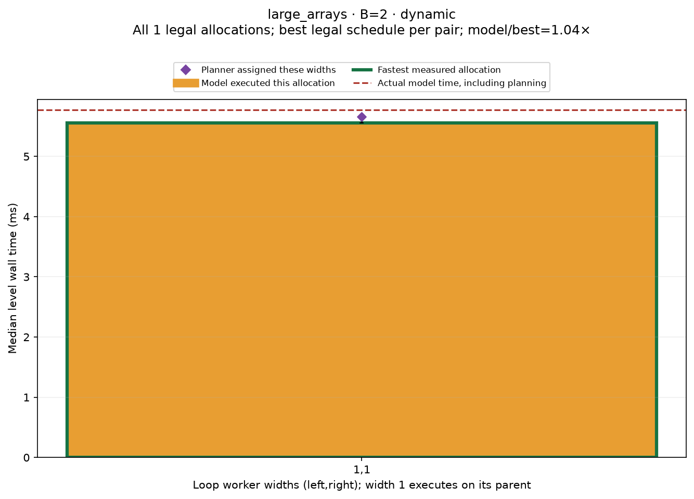
| left | right | median_ms | best_backend | best_order | best_parents | planner_assignment_fraction | model_selection_fraction | empirical_best |
|---|---|---|---|---|---|---|---|---|
| 1 | 1 | 5.560324 | ordinary | left,right | 2 | 1.0 | 1.0 | 1 |
{'case': 'large_arrays', 'budget': 2, 'policy': 'ordinary-first', 'allocations': 1, 'schedules': 1, 'model_actual_left': 1, 'model_actual_right': 1, 'modal_selection_fraction': 1.0, 'requested_allocations': '1,1', 'best_config': '0:1:1:0:2', 'best_ms': 5.601989, 'model_ms': 5.59923, 'model_over_best_ratio': 0.9995074963553123, 'ratio_bootstrap_low': 0.99455895658448, 'ratio_bootstrap_high': 1.0110437666985792, 'allocation_only_ratio': 1.0, 'selected_schedule_replay_ratio': 1.0, 'exact_best_allocation_repeat_fraction': 1, 'fallback_fraction': 0, 'verdict': 'within 10%', 'ordinary_tasks': 0, 'total_tasks': 2, 'overloaded': 0}
| left | right | median_ms | best_backend | best_order | best_parents | planner_assignment_fraction | model_selection_fraction | empirical_best |
|---|---|---|---|---|---|---|---|---|
| 1 | 1 | 5.601989 | ordinary | left,right | 2 | 1.0 | 1.0 | 1 |
{'case': 'large_arrays', 'budget': 4, 'policy': 'dynamic', 'allocations': 9, 'schedules': 27, 'model_actual_left': 2, 'model_actual_right': 1, 'modal_selection_fraction': 1.0, 'requested_allocations': '2,1', 'best_config': '1:3:3:0:1', 'best_ms': 5.201728, 'model_ms': 5.245176, 'model_over_best_ratio': 1.00835260897917, 'ratio_bootstrap_low': 0.9766098160423028, 'ratio_bootstrap_high': 1.037278573581702, 'allocation_only_ratio': 1.0217813950033388, 'selected_schedule_replay_ratio': 1.0217813950033388, 'exact_best_allocation_repeat_fraction': 0, 'fallback_fraction': 0.0, 'verdict': 'within 10%', 'ordinary_tasks': 0, 'total_tasks': 2, 'overloaded': 0}
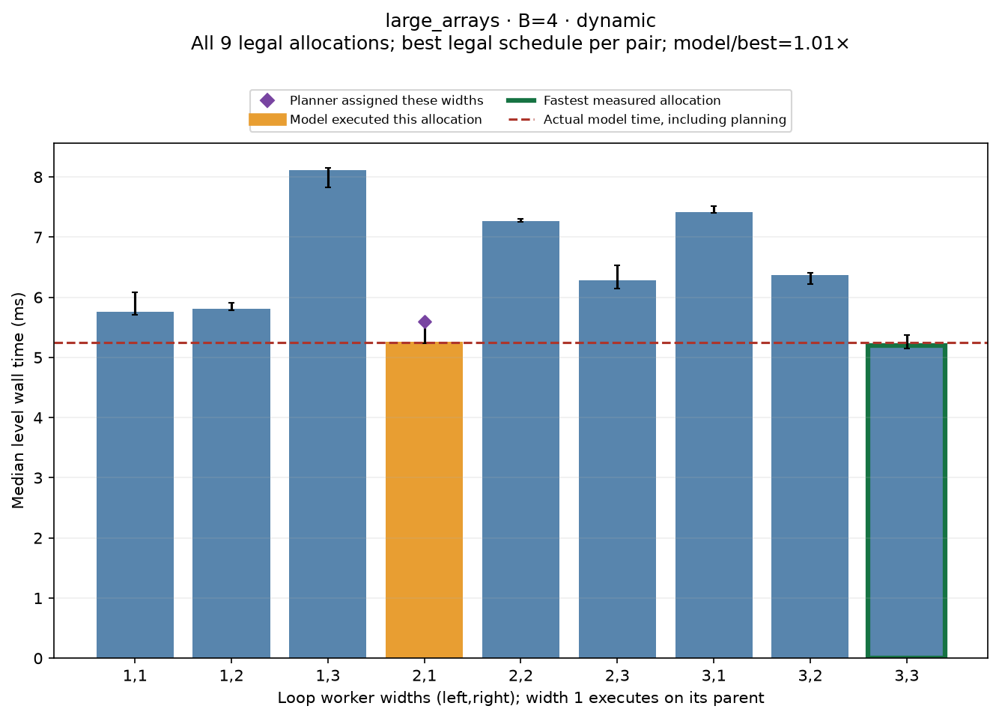
| left | right | median_ms | best_backend | best_order | best_parents | planner_assignment_fraction | model_selection_fraction | empirical_best |
|---|---|---|---|---|---|---|---|---|
| 1 | 1 | 5.753177 | ordinary | left,right | 2 | 0.0 | 0.0 | 0 |
| 1 | 2 | 5.814076 | joint | right,left | 2 | 0.0 | 0.0 | 0 |
| 1 | 3 | 8.111641 | joint | left,right | 1 | 0.0 | 0.0 | 0 |
| 2 | 1 | 5.254566 | joint | right,left | 2 | 1.0 | 1.0 | 0 |
| 2 | 2 | 7.269547 | joint | right,left | 1 | 0.0 | 0.0 | 0 |
| 2 | 3 | 6.278669 | joint | right,left | 1 | 0.0 | 0.0 | 0 |
| 3 | 1 | 7.4186 | joint | right,left | 1 | 0.0 | 0.0 | 0 |
| 3 | 2 | 6.367353 | joint | left,right | 1 | 0.0 | 0.0 | 0 |
| 3 | 3 | 5.201728 | joint | left,right | 1 | 0.0 | 0.0 | 1 |
{'case': 'large_arrays', 'budget': 4, 'policy': 'ordinary-first', 'allocations': 3, 'schedules': 3, 'model_actual_left': 2, 'model_actual_right': 1, 'modal_selection_fraction': 1.0, 'requested_allocations': '2,1', 'best_config': '0:2:1:0:2', 'best_ms': 5.31115, 'model_ms': 5.247541, 'model_over_best_ratio': 0.9880234977358953, 'ratio_bootstrap_low': 0.9708219109632353, 'ratio_bootstrap_high': 1.0099433619400504, 'allocation_only_ratio': 1.0, 'selected_schedule_replay_ratio': 1.0, 'exact_best_allocation_repeat_fraction': 1, 'fallback_fraction': 0, 'verdict': 'within 10%', 'ordinary_tasks': 0, 'total_tasks': 2, 'overloaded': 0}
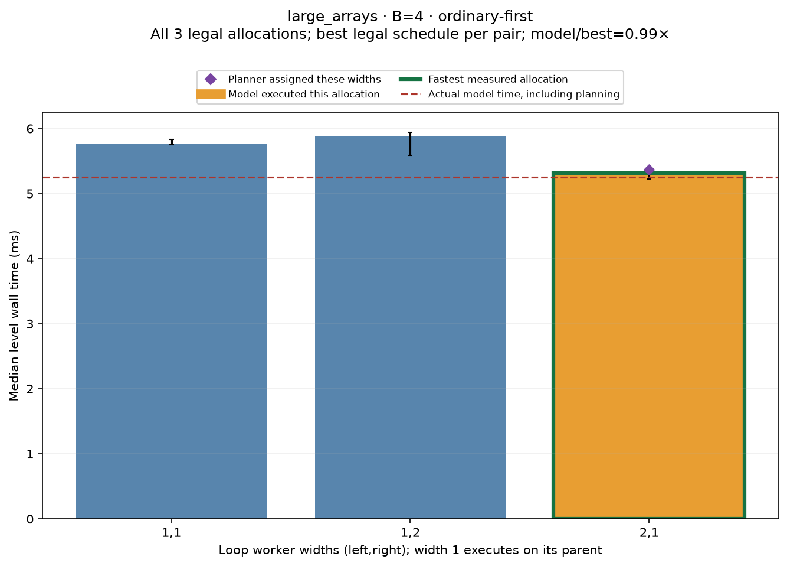
| left | right | median_ms | best_backend | best_order | best_parents | planner_assignment_fraction | model_selection_fraction | empirical_best |
|---|---|---|---|---|---|---|---|---|
| 1 | 1 | 5.768179 | ordinary | left,right | 2 | 0.0 | 0.0 | 0 |
| 1 | 2 | 5.886509 | ordinary | left,right | 2 | 0.0 | 0.0 | 0 |
| 2 | 1 | 5.31115 | ordinary | left,right | 2 | 1.0 | 1.0 | 1 |
{'case': 'large_arrays', 'budget': 6, 'policy': 'dynamic', 'allocations': 25, 'schedules': 74, 'model_actual_left': 2, 'model_actual_right': 1, 'modal_selection_fraction': 1.0, 'requested_allocations': '2,1', 'best_config': '1:5:3:0:1', 'best_ms': 5.088376, 'model_ms': 5.547006, 'model_over_best_ratio': 1.0901328832617716, 'ratio_bootstrap_low': 0.9826330694099289, 'ratio_bootstrap_high': 1.0901328832617716, 'allocation_only_ratio': 1.0657938768502682, 'selected_schedule_replay_ratio': 1.0657938768502682, 'exact_best_allocation_repeat_fraction': 0, 'fallback_fraction': 0.0, 'verdict': 'within 10%', 'ordinary_tasks': 0, 'total_tasks': 2, 'overloaded': 0}
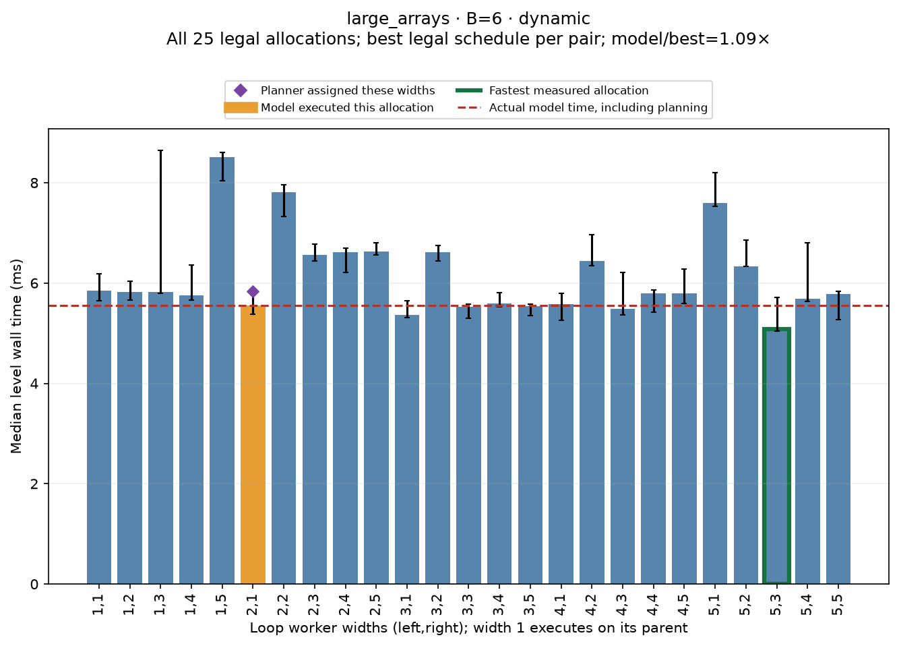
| left | right | median_ms | best_backend | best_order | best_parents | planner_assignment_fraction | model_selection_fraction | empirical_best |
|---|---|---|---|---|---|---|---|---|
| 1 | 1 | 5.847149 | joint | right,left | 2 | 0.0 | 0.0 | 0 |
| 1 | 2 | 5.817176 | ordinary | left,right | 2 | 0.0 | 0.0 | 0 |
| 1 | 3 | 5.820379 | joint | left,right | 2 | 0.0 | 0.0 | 0 |
| 1 | 4 | 5.750656 | joint | right,left | 2 | 0.0 | 0.0 | 0 |
| 1 | 5 | 8.51514 | joint | left,right | 1 | 0.0 | 0.0 | 0 |
| 2 | 1 | 5.556489 | joint | right,left | 2 | 1.0 | 1.0 | 0 |
| 2 | 2 | 7.81172 | joint | right,left | 1 | 0.0 | 0.0 | 0 |
| 2 | 3 | 6.555794 | joint | right,left | 1 | 0.0 | 0.0 | 0 |
| 2 | 4 | 6.614597 | joint | right,left | 1 | 0.0 | 0.0 | 0 |
| 2 | 5 | 6.633284 | joint | left,right | 1 | 0.0 | 0.0 | 0 |
| 3 | 1 | 5.368308 | joint | left,right | 2 | 0.0 | 0.0 | 0 |
| 3 | 2 | 6.619132 | joint | right,left | 1 | 0.0 | 0.0 | 0 |
| 3 | 3 | 5.51937 | joint | right,left | 1 | 0.0 | 0.0 | 0 |
| 3 | 4 | 5.588506 | joint | right,left | 1 | 0.0 | 0.0 | 0 |
| 3 | 5 | 5.533275 | joint | right,left | 1 | 0.0 | 0.0 | 0 |
| 4 | 1 | 5.585795 | ordinary | left,right | 2 | 0.0 | 0.0 | 0 |
| 4 | 2 | 6.439263 | joint | right,left | 1 | 0.0 | 0.0 | 0 |
| 4 | 3 | 5.486766 | joint | left,right | 1 | 0.0 | 0.0 | 0 |
| 4 | 4 | 5.791777 | joint | right,left | 1 | 0.0 | 0.0 | 0 |
| 4 | 5 | 5.795472 | joint | left,right | 1 | 0.0 | 0.0 | 0 |
| 5 | 1 | 7.600394 | joint | left,right | 1 | 0.0 | 0.0 | 0 |
| 5 | 2 | 6.329158 | joint | right,left | 1 | 0.0 | 0.0 | 0 |
| 5 | 3 | 5.088376 | joint | left,right | 1 | 0.0 | 0.0 | 1 |
| 5 | 4 | 5.690488 | joint | left,right | 1 | 0.0 | 0.0 | 0 |
| 5 | 5 | 5.786866 | joint | right,left | 1 | 0.0 | 0.0 | 0 |
{'case': 'large_arrays', 'budget': 6, 'policy': 'ordinary-first', 'allocations': 8, 'schedules': 8, 'model_actual_left': 2, 'model_actual_right': 1, 'modal_selection_fraction': 1.0, 'requested_allocations': '2,1', 'best_config': '0:2:1:0:2', 'best_ms': 5.762771, 'model_ms': 6.14711, 'model_over_best_ratio': 1.0666934361958855, 'ratio_bootstrap_low': 0.9053823850235024, 'ratio_bootstrap_high': 1.2774529534787227, 'allocation_only_ratio': 1.0, 'selected_schedule_replay_ratio': 1.0, 'exact_best_allocation_repeat_fraction': 1, 'fallback_fraction': 0, 'verdict': 'within 10%', 'ordinary_tasks': 0, 'total_tasks': 2, 'overloaded': 0}
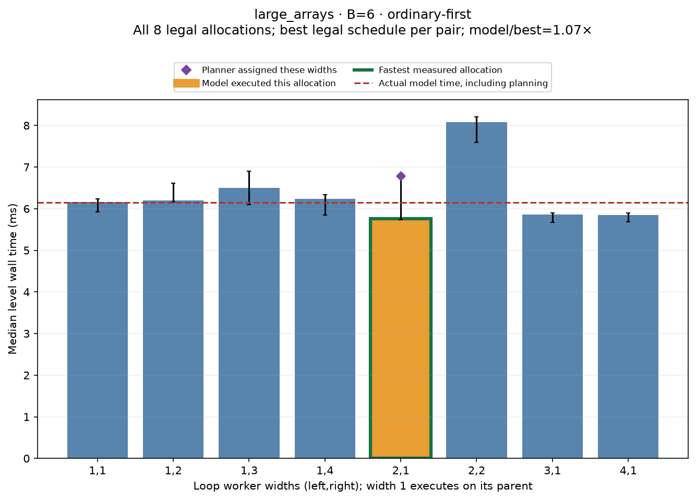
| left | right | median_ms | best_backend | best_order | best_parents | planner_assignment_fraction | model_selection_fraction | empirical_best |
|---|---|---|---|---|---|---|---|---|
| 1 | 1 | 6.156611 | ordinary | left,right | 2 | 0.0 | 0.0 | 0 |
| 1 | 2 | 6.201273 | ordinary | left,right | 2 | 0.0 | 0.0 | 0 |
| 1 | 3 | 6.50085 | ordinary | left,right | 2 | 0.0 | 0.0 | 0 |
| 1 | 4 | 6.239462 | ordinary | left,right | 2 | 0.0 | 0.0 | 0 |
| 2 | 1 | 5.762771 | ordinary | left,right | 2 | 1.0 | 1.0 | 1 |
| 2 | 2 | 8.077051 | ordinary | left,right | 2 | 0.0 | 0.0 | 0 |
| 3 | 1 | 5.857695 | ordinary | left,right | 2 | 0.0 | 0.0 | 0 |
| 4 | 1 | 5.85124 | ordinary | left,right | 2 | 0.0 | 0.0 | 0 |
{'case': 'large_arrays', 'budget': 8, 'policy': 'dynamic', 'allocations': 49, 'schedules': 149, 'model_actual_left': 3, 'model_actual_right': 3, 'modal_selection_fraction': 1.0, 'requested_allocations': '3,3', 'best_config': '1:5:3:1:1', 'best_ms': 5.120336, 'model_ms': 5.305847, 'model_over_best_ratio': 1.0362302395780276, 'ratio_bootstrap_low': 1.016948999859509, 'ratio_bootstrap_high': 1.0755571509369697, 'allocation_only_ratio': 1.025233978858757, 'selected_schedule_replay_ratio': 1.025233978858757, 'exact_best_allocation_repeat_fraction': 0, 'fallback_fraction': 0.0, 'verdict': 'within 10%', 'ordinary_tasks': 0, 'total_tasks': 2, 'overloaded': 0}
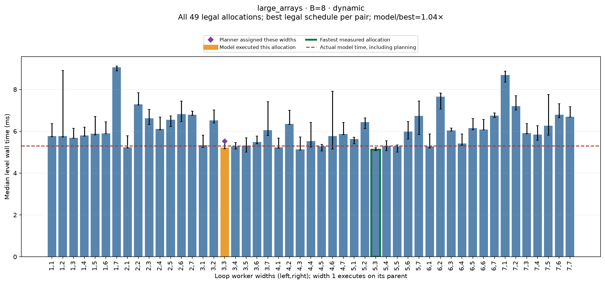
| left | right | median_ms | best_backend | best_order | best_parents | planner_assignment_fraction | model_selection_fraction | empirical_best |
|---|---|---|---|---|---|---|---|---|
| 1 | 1 | 5.772035 | joint | right,left | 2 | 0.0 | 0.0 | 0 |
| 1 | 2 | 5.763823 | ordinary | left,right | 2 | 0.0 | 0.0 | 0 |
| 1 | 3 | 5.685961 | ordinary | left,right | 2 | 0.0 | 0.0 | 0 |
| 1 | 4 | 5.800843 | ordinary | left,right | 2 | 0.0 | 0.0 | 0 |
| 1 | 5 | 5.884148 | joint | left,right | 2 | 0.0 | 0.0 | 0 |
| 1 | 6 | 5.891837 | joint | left,right | 2 | 0.0 | 0.0 | 0 |
| 1 | 7 | 9.059688 | joint | left,right | 1 | 0.0 | 0.0 | 0 |
| 2 | 1 | 5.22392 | joint | right,left | 2 | 0.0 | 0.0 | 0 |
| 2 | 2 | 7.285073 | joint | right,left | 1 | 0.0 | 0.0 | 0 |
| 2 | 3 | 6.62136 | ordinary | left,right | 2 | 0.0 | 0.0 | 0 |
| 2 | 4 | 6.107288 | joint | right,left | 1 | 0.0 | 0.0 | 0 |
| 2 | 5 | 6.555487 | joint | right,left | 1 | 0.0 | 0.0 | 0 |
| 2 | 6 | 6.816669 | joint | left,right | 1 | 0.0 | 0.0 | 0 |
| 2 | 7 | 6.792352 | joint | left,right | 1 | 0.0 | 0.0 | 0 |
| 3 | 1 | 5.328968 | ordinary | left,right | 2 | 0.0 | 0.0 | 0 |
| 3 | 2 | 6.520346 | joint | left,right | 2 | 0.0 | 0.0 | 0 |
| 3 | 3 | 5.209667 | joint | left,right | 1 | 1.0 | 1.0 | 0 |
| 3 | 4 | 5.273824 | joint | left,right | 1 | 0.0 | 0.0 | 0 |
| 3 | 5 | 5.301562 | joint | right,left | 1 | 0.0 | 0.0 | 0 |
| 3 | 6 | 5.482572 | joint | left,right | 1 | 0.0 | 0.0 | 0 |
| 3 | 7 | 6.057197 | joint | left,right | 1 | 0.0 | 0.0 | 0 |
| 4 | 1 | 5.225765 | joint | left,right | 2 | 0.0 | 0.0 | 0 |
| 4 | 2 | 6.349014 | joint | left,right | 1 | 0.0 | 0.0 | 0 |
| 4 | 3 | 5.131454 | joint | left,right | 1 | 0.0 | 0.0 | 0 |
| 4 | 4 | 5.528232 | joint | left,right | 1 | 0.0 | 0.0 | 0 |
| 4 | 5 | 5.269049 | joint | left,right | 1 | 0.0 | 0.0 | 0 |
| 4 | 6 | 5.771462 | joint | left,right | 1 | 0.0 | 0.0 | 0 |
| 4 | 7 | 5.868831 | joint | right,left | 1 | 0.0 | 0.0 | 0 |
| 5 | 1 | 5.621921 | joint | left,right | 2 | 0.0 | 0.0 | 0 |
| 5 | 2 | 6.438142 | joint | left,right | 1 | 0.0 | 0.0 | 0 |
| 5 | 3 | 5.120336 | joint | right,left | 1 | 0.0 | 0.0 | 1 |
| 5 | 4 | 5.299535 | joint | right,left | 1 | 0.0 | 0.0 | 0 |
| 5 | 5 | 5.272153 | joint | right,left | 1 | 0.0 | 0.0 | 0 |
| 5 | 6 | 5.983914 | joint | left,right | 1 | 0.0 | 0.0 | 0 |
| 5 | 7 | 6.735567 | joint | left,right | 1 | 0.0 | 0.0 | 0 |
| 6 | 1 | 5.271525 | ordinary | left,right | 2 | 0.0 | 0.0 | 0 |
| 6 | 2 | 7.657072 | joint | right,left | 1 | 0.0 | 0.0 | 0 |
| 6 | 3 | 6.041652 | joint | left,right | 1 | 0.0 | 0.0 | 0 |
| 6 | 4 | 5.412883 | joint | right,left | 1 | 0.0 | 0.0 | 0 |
| 6 | 5 | 6.154998 | joint | left,right | 1 | 0.0 | 0.0 | 0 |
| 6 | 6 | 6.084888 | joint | right,left | 1 | 0.0 | 0.0 | 0 |
| 6 | 7 | 6.750959 | joint | right,left | 1 | 0.0 | 0.0 | 0 |
| 7 | 1 | 8.689901 | joint | right,left | 1 | 0.0 | 0.0 | 0 |
| 7 | 2 | 7.197328 | joint | right,left | 1 | 0.0 | 0.0 | 0 |
| 7 | 3 | 5.916046 | joint | right,left | 1 | 0.0 | 0.0 | 0 |
| 7 | 4 | 5.834283 | joint | right,left | 1 | 0.0 | 0.0 | 0 |
| 7 | 5 | 6.267676 | joint | left,right | 1 | 0.0 | 0.0 | 0 |
| 7 | 6 | 6.793517 | joint | left,right | 1 | 0.0 | 0.0 | 0 |
| 7 | 7 | 6.692497 | joint | left,right | 1 | 0.0 | 0.0 | 0 |
{'case': 'large_arrays', 'budget': 8, 'policy': 'ordinary-first', 'allocations': 17, 'schedules': 17, 'model_actual_left': 3, 'model_actual_right': 3, 'modal_selection_fraction': 1.0, 'requested_allocations': '3,3', 'best_config': '0:3:1:0:2', 'best_ms': 5.20534, 'model_ms': 5.57372, 'model_over_best_ratio': 1.0707696327233187, 'ratio_bootstrap_low': 1.041351620491033, 'ratio_bootstrap_high': 1.0875139760323054, 'allocation_only_ratio': 1.0226440539907096, 'selected_schedule_replay_ratio': 1.0226440539907096, 'exact_best_allocation_repeat_fraction': 0, 'fallback_fraction': 0, 'verdict': 'within 10%', 'ordinary_tasks': 0, 'total_tasks': 2, 'overloaded': 0}
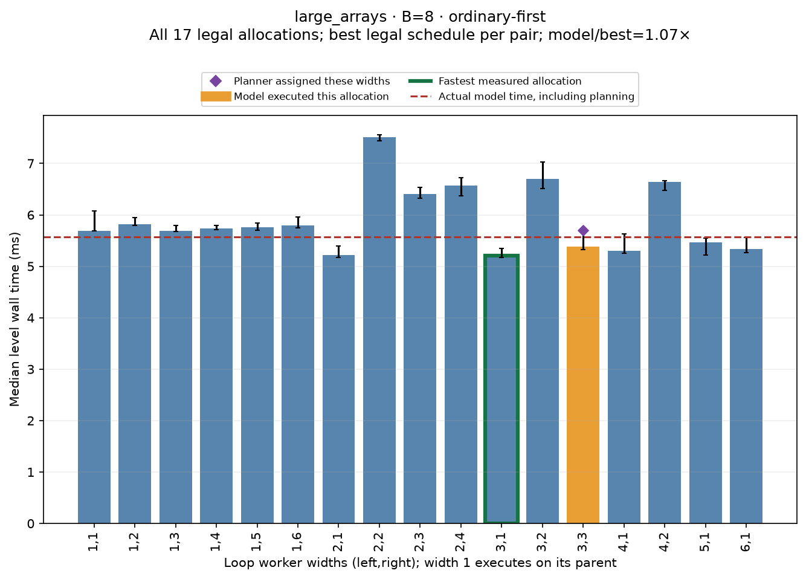
| left | right | median_ms | best_backend | best_order | best_parents | planner_assignment_fraction | model_selection_fraction | empirical_best |
|---|---|---|---|---|---|---|---|---|
| 1 | 1 | 5.693393 | ordinary | left,right | 2 | 0.0 | 0.0 | 0 |
| 1 | 2 | 5.822177 | ordinary | left,right | 2 | 0.0 | 0.0 | 0 |
| 1 | 3 | 5.694433 | ordinary | left,right | 2 | 0.0 | 0.0 | 0 |
| 1 | 4 | 5.732095 | ordinary | left,right | 2 | 0.0 | 0.0 | 0 |
| 1 | 5 | 5.755972 | ordinary | left,right | 2 | 0.0 | 0.0 | 0 |
| 1 | 6 | 5.791541 | ordinary | left,right | 2 | 0.0 | 0.0 | 0 |
| 2 | 1 | 5.213365 | ordinary | left,right | 2 | 0.0 | 0.0 | 0 |
| 2 | 2 | 7.504391 | ordinary | left,right | 2 | 0.0 | 0.0 | 0 |
| 2 | 3 | 6.401536 | ordinary | left,right | 2 | 0.0 | 0.0 | 0 |
| 2 | 4 | 6.567109 | ordinary | left,right | 2 | 0.0 | 0.0 | 0 |
| 3 | 1 | 5.20534 | ordinary | left,right | 2 | 0.0 | 0.0 | 1 |
| 3 | 2 | 6.703728 | ordinary | left,right | 2 | 0.0 | 0.0 | 0 |
| 3 | 3 | 5.388759 | ordinary | left,right | 2 | 1.0 | 1.0 | 0 |
| 4 | 1 | 5.298177 | ordinary | left,right | 2 | 0.0 | 0.0 | 0 |
| 4 | 2 | 6.645676 | ordinary | left,right | 2 | 0.0 | 0.0 | 0 |
| 5 | 1 | 5.461913 | ordinary | left,right | 2 | 0.0 | 0.0 | 0 |
| 6 | 1 | 5.337857 | ordinary | left,right | 2 | 0.0 | 0.0 | 0 |
{'case': 'mixed_compute', 'budget': 4, 'policy': 'dynamic', 'allocations': 9, 'schedules': 1443, 'model_actual_left': 2, 'model_actual_right': 1, 'modal_selection_fraction': 0.6666666666666666, 'requested_allocations': '1,2;2,1', 'best_config': '1:3:3:22:1', 'best_ms': 0.935642, 'model_ms': 1.560351, 'model_over_best_ratio': 1.6676795184482953, 'ratio_bootstrap_low': 1.4244863961480383, 'ratio_bootstrap_high': 1.6676795184482953, 'allocation_only_ratio': 1.4040583898542391, 'selected_schedule_replay_ratio': 1.6018371607515658, 'exact_best_allocation_repeat_fraction': 0, 'fallback_fraction': 0.0, 'verdict': '>25% slower', 'ordinary_tasks': 3, 'total_tasks': 5, 'overloaded': 1}
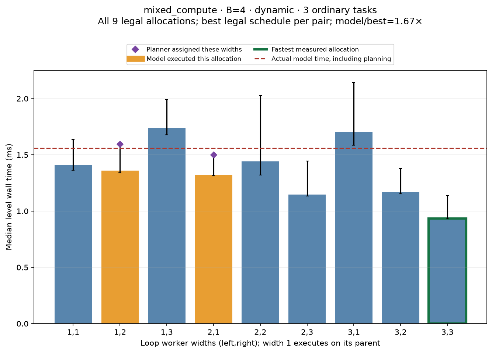
| left | right | median_ms | best_backend | best_order | best_parents | planner_assignment_fraction | model_selection_fraction | empirical_best |
|---|---|---|---|---|---|---|---|---|
| 1 | 1 | 1.410328 | joint | ordinary1,right,ordinary2,left,ordinary3; backfill=1 | 2 | 0.0 | 0.0 | 0 |
| 1 | 2 | 1.359583 | joint | left,ordinary1,ordinary2,ordinary3,right; backfill=1 | 2 | 0.3333333333333333 | 0.3333333333333333 | 0 |
| 1 | 3 | 1.735915 | joint | ordinary1,left,ordinary2,right,ordinary3; backfill=0 | 1 | 0.0 | 0.0 | 0 |
| 2 | 1 | 1.320919 | joint | ordinary1,ordinary2,right,ordinary3,left; backfill=0 | 2 | 0.6666666666666666 | 0.6666666666666666 | 0 |
| 2 | 2 | 1.441759 | joint | left,ordinary1,ordinary2,right,ordinary3; backfill=1 | 1 | 0.0 | 0.0 | 0 |
| 2 | 3 | 1.147403 | joint | ordinary1,ordinary2,left,right,ordinary3; backfill=0 | 1 | 0.0 | 0.0 | 0 |
| 3 | 1 | 1.701256 | joint | ordinary1,left,ordinary2,right,ordinary3; backfill=0 | 1 | 0.0 | 0.0 | 0 |
| 3 | 2 | 1.16848 | joint | ordinary1,ordinary2,left,right,ordinary3; backfill=0 | 1 | 0.0 | 0.0 | 0 |
| 3 | 3 | 0.935642 | joint | ordinary1,right,left,ordinary2,ordinary3; backfill=0 | 1 | 0.0 | 0.0 | 1 |
{'case': 'mixed_compute', 'budget': 4, 'policy': 'ordinary-first', 'allocations': 9, 'schedules': 1443, 'model_actual_left': 1, 'model_actual_right': 2, 'modal_selection_fraction': 0.6666666666666666, 'requested_allocations': '1,2;2,1', 'best_config': '1:3:3:22:1', 'best_ms': 0.935642, 'model_ms': 1.569824, 'model_over_best_ratio': 1.6778041173867784, 'ratio_bootstrap_low': 1.5578330173292776, 'ratio_bootstrap_high': 1.7814552247005824, 'allocation_only_ratio': 1.4332843117346163, 'selected_schedule_replay_ratio': 1.80831984883107, 'exact_best_allocation_repeat_fraction': 0, 'fallback_fraction': 0, 'verdict': '>25% slower', 'ordinary_tasks': 3, 'total_tasks': 5, 'overloaded': 1}
| left | right | median_ms | best_backend | best_order | best_parents | planner_assignment_fraction | model_selection_fraction | empirical_best |
|---|---|---|---|---|---|---|---|---|
| 1 | 1 | 1.410328 | joint | ordinary1,right,ordinary2,left,ordinary3; backfill=1 | 2 | 0.0 | 0.0 | 0 |
| 1 | 2 | 1.359583 | joint | left,ordinary1,ordinary2,ordinary3,right; backfill=1 | 2 | 0.6666666666666666 | 0.6666666666666666 | 0 |
| 1 | 3 | 1.735915 | joint | ordinary1,left,ordinary2,right,ordinary3; backfill=0 | 1 | 0.0 | 0.0 | 0 |
| 2 | 1 | 1.320919 | joint | ordinary1,ordinary2,right,ordinary3,left; backfill=0 | 2 | 0.3333333333333333 | 0.3333333333333333 | 0 |
| 2 | 2 | 1.441759 | joint | left,ordinary1,ordinary2,right,ordinary3; backfill=1 | 1 | 0.0 | 0.0 | 0 |
| 2 | 3 | 1.147403 | joint | ordinary1,ordinary2,left,right,ordinary3; backfill=0 | 1 | 0.0 | 0.0 | 0 |
| 3 | 1 | 1.701256 | joint | ordinary1,left,ordinary2,right,ordinary3; backfill=0 | 1 | 0.0 | 0.0 | 0 |
| 3 | 2 | 1.16848 | joint | ordinary1,ordinary2,left,right,ordinary3; backfill=0 | 1 | 0.0 | 0.0 | 0 |
| 3 | 3 | 0.935642 | joint | ordinary1,right,left,ordinary2,ordinary3; backfill=0 | 1 | 0.0 | 0.0 | 1 |
{'case': 'mixed_compute', 'budget': 6, 'policy': 'dynamic', 'allocations': 25, 'schedules': 5001, 'model_actual_left': 1, 'model_actual_right': 1, 'modal_selection_fraction': 1.0, 'requested_allocations': '1,1', 'best_config': '1:5:5:20:1', 'best_ms': 0.671333, 'model_ms': 1.450528, 'model_over_best_ratio': 2.160668401523536, 'ratio_bootstrap_low': 1.7859972148585206, 'ratio_bootstrap_high': 2.178726503836397, 'allocation_only_ratio': 2.063640547984383, 'selected_schedule_replay_ratio': 2.123143060150477, 'exact_best_allocation_repeat_fraction': 0, 'fallback_fraction': 0.0, 'verdict': '>25% slower', 'ordinary_tasks': 3, 'total_tasks': 5, 'overloaded': 0}
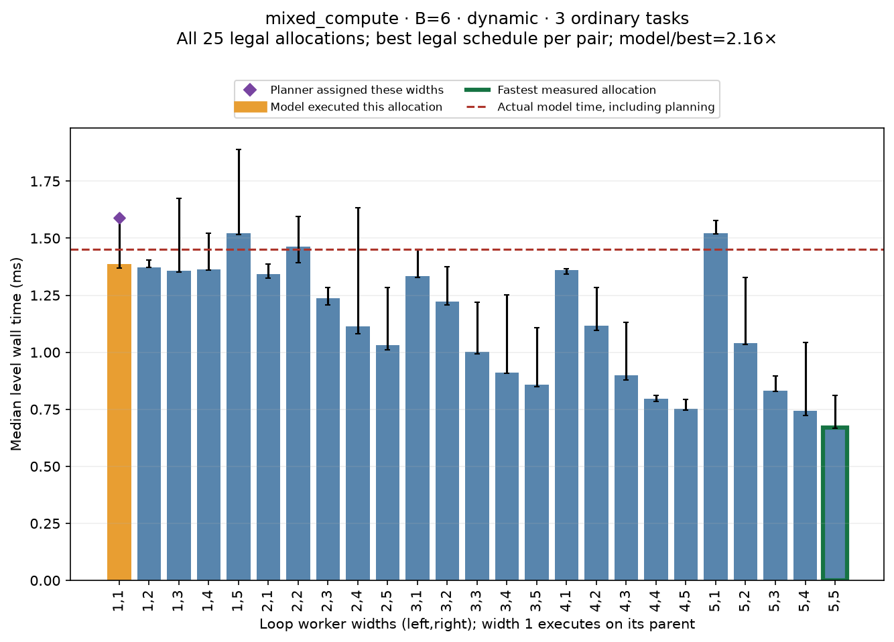
| left | right | median_ms | best_backend | best_order | best_parents | planner_assignment_fraction | model_selection_fraction | empirical_best |
|---|---|---|---|---|---|---|---|---|
| 1 | 1 | 1.38539 | joint | right,ordinary1,left,ordinary2,ordinary3; backfill=1 | 2 | 1.0 | 1.0 | 0 |
| 1 | 2 | 1.372098 | joint | right,ordinary1,ordinary2,ordinary3,left; backfill=0 | 2 | 0.0 | 0.0 | 0 |
| 1 | 3 | 1.356544 | joint | ordinary1,right,ordinary2,left,ordinary3; backfill=1 | 2 | 0.0 | 0.0 | 0 |
| 1 | 4 | 1.363389 | joint | left,ordinary1,ordinary2,ordinary3,right; backfill=1 | 2 | 0.0 | 0.0 | 0 |
| 1 | 5 | 1.522724 | joint | ordinary1,right,ordinary2,left,ordinary3; backfill=1 | 1 | 0.0 | 0.0 | 0 |
| 2 | 1 | 1.343734 | joint | right,left,ordinary1,ordinary2,ordinary3; backfill=0 | 2 | 0.0 | 0.0 | 0 |
| 2 | 2 | 1.462279 | joint | ordinary1,ordinary2,right,ordinary3,left; backfill=1 | 1 | 0.0 | 0.0 | 0 |
| 2 | 3 | 1.237669 | joint | ordinary1,ordinary2,right,left,ordinary3; backfill=1 | 1 | 0.0 | 0.0 | 0 |
| 2 | 4 | 1.114128 | joint | ordinary1,ordinary2,ordinary3,left,right; backfill=0 | 1 | 0.0 | 0.0 | 0 |
| 2 | 5 | 1.031998 | joint | left,ordinary1,ordinary2,ordinary3,right; backfill=0 | 1 | 0.0 | 0.0 | 0 |
| 3 | 1 | 1.334493 | joint | left,ordinary1,ordinary2,right,ordinary3; backfill=0 | 2 | 0.0 | 0.0 | 0 |
| 3 | 2 | 1.222436 | joint | right,left,ordinary1,ordinary2,ordinary3; backfill=1 | 1 | 0.0 | 0.0 | 0 |
| 3 | 3 | 1.000498 | joint | left,ordinary1,ordinary2,ordinary3,right; backfill=1 | 1 | 0.0 | 0.0 | 0 |
| 3 | 4 | 0.910415 | joint | left,ordinary1,ordinary2,right,ordinary3; backfill=1 | 1 | 0.0 | 0.0 | 0 |
| 3 | 5 | 0.858753 | joint | ordinary1,ordinary2,ordinary3,left,right; backfill=1 | 1 | 0.0 | 0.0 | 0 |
| 4 | 1 | 1.359079 | joint | ordinary1,ordinary2,right,left,ordinary3; backfill=1 | 2 | 0.0 | 0.0 | 0 |
| 4 | 2 | 1.116719 | joint | right,ordinary1,ordinary2,left,ordinary3; backfill=0 | 1 | 0.0 | 0.0 | 0 |
| 4 | 3 | 0.900212 | joint | right,ordinary1,ordinary2,left,ordinary3; backfill=1 | 1 | 0.0 | 0.0 | 0 |
| 4 | 4 | 0.797042 | joint | ordinary1,left,ordinary2,ordinary3,right; backfill=0 | 1 | 0.0 | 0.0 | 0 |
| 4 | 5 | 0.75106 | joint | left,ordinary1,ordinary2,right,ordinary3; backfill=1 | 1 | 0.0 | 0.0 | 0 |
| 5 | 1 | 1.520451 | joint | ordinary1,ordinary2,right,ordinary3,left; backfill=1 | 1 | 0.0 | 0.0 | 0 |
| 5 | 2 | 1.040921 | joint | right,ordinary1,ordinary2,left,ordinary3; backfill=1 | 1 | 0.0 | 0.0 | 0 |
| 5 | 3 | 0.830075 | joint | ordinary1,left,ordinary2,ordinary3,right; backfill=1 | 1 | 0.0 | 0.0 | 0 |
| 5 | 4 | 0.742033 | joint | right,left,ordinary1,ordinary2,ordinary3; backfill=0 | 1 | 0.0 | 0.0 | 0 |
| 5 | 5 | 0.671333 | joint | ordinary1,left,ordinary2,ordinary3,right; backfill=0 | 1 | 0.0 | 0.0 | 1 |
{'case': 'mixed_compute', 'budget': 6, 'policy': 'ordinary-first', 'allocations': 25, 'schedules': 5001, 'model_actual_left': 1, 'model_actual_right': 1, 'modal_selection_fraction': 1.0, 'requested_allocations': '1,1', 'best_config': '1:5:5:20:1', 'best_ms': 0.671333, 'model_ms': 1.376515, 'model_over_best_ratio': 2.0504205811422946, 'ratio_bootstrap_low': 1.8777418929850633, 'ratio_bootstrap_high': 2.0504205811422946, 'allocation_only_ratio': 2.063640547984383, 'selected_schedule_replay_ratio': 2.075960978468714, 'exact_best_allocation_repeat_fraction': 0, 'fallback_fraction': 0, 'verdict': '>25% slower', 'ordinary_tasks': 3, 'total_tasks': 5, 'overloaded': 0}
| left | right | median_ms | best_backend | best_order | best_parents | planner_assignment_fraction | model_selection_fraction | empirical_best |
|---|---|---|---|---|---|---|---|---|
| 1 | 1 | 1.38539 | joint | right,ordinary1,left,ordinary2,ordinary3; backfill=1 | 2 | 1.0 | 1.0 | 0 |
| 1 | 2 | 1.372098 | joint | right,ordinary1,ordinary2,ordinary3,left; backfill=0 | 2 | 0.0 | 0.0 | 0 |
| 1 | 3 | 1.356544 | joint | ordinary1,right,ordinary2,left,ordinary3; backfill=1 | 2 | 0.0 | 0.0 | 0 |
| 1 | 4 | 1.363389 | joint | left,ordinary1,ordinary2,ordinary3,right; backfill=1 | 2 | 0.0 | 0.0 | 0 |
| 1 | 5 | 1.522724 | joint | ordinary1,right,ordinary2,left,ordinary3; backfill=1 | 1 | 0.0 | 0.0 | 0 |
| 2 | 1 | 1.343734 | joint | right,left,ordinary1,ordinary2,ordinary3; backfill=0 | 2 | 0.0 | 0.0 | 0 |
| 2 | 2 | 1.462279 | joint | ordinary1,ordinary2,right,ordinary3,left; backfill=1 | 1 | 0.0 | 0.0 | 0 |
| 2 | 3 | 1.237669 | joint | ordinary1,ordinary2,right,left,ordinary3; backfill=1 | 1 | 0.0 | 0.0 | 0 |
| 2 | 4 | 1.114128 | joint | ordinary1,ordinary2,ordinary3,left,right; backfill=0 | 1 | 0.0 | 0.0 | 0 |
| 2 | 5 | 1.031998 | joint | left,ordinary1,ordinary2,ordinary3,right; backfill=0 | 1 | 0.0 | 0.0 | 0 |
| 3 | 1 | 1.334493 | joint | left,ordinary1,ordinary2,right,ordinary3; backfill=0 | 2 | 0.0 | 0.0 | 0 |
| 3 | 2 | 1.222436 | joint | right,left,ordinary1,ordinary2,ordinary3; backfill=1 | 1 | 0.0 | 0.0 | 0 |
| 3 | 3 | 1.000498 | joint | left,ordinary1,ordinary2,ordinary3,right; backfill=1 | 1 | 0.0 | 0.0 | 0 |
| 3 | 4 | 0.910415 | joint | left,ordinary1,ordinary2,right,ordinary3; backfill=1 | 1 | 0.0 | 0.0 | 0 |
| 3 | 5 | 0.858753 | joint | ordinary1,ordinary2,ordinary3,left,right; backfill=1 | 1 | 0.0 | 0.0 | 0 |
| 4 | 1 | 1.359079 | joint | ordinary1,ordinary2,right,left,ordinary3; backfill=1 | 2 | 0.0 | 0.0 | 0 |
| 4 | 2 | 1.116719 | joint | right,ordinary1,ordinary2,left,ordinary3; backfill=0 | 1 | 0.0 | 0.0 | 0 |
| 4 | 3 | 0.900212 | joint | right,ordinary1,ordinary2,left,ordinary3; backfill=1 | 1 | 0.0 | 0.0 | 0 |
| 4 | 4 | 0.797042 | joint | ordinary1,left,ordinary2,ordinary3,right; backfill=0 | 1 | 0.0 | 0.0 | 0 |
| 4 | 5 | 0.75106 | joint | left,ordinary1,ordinary2,right,ordinary3; backfill=1 | 1 | 0.0 | 0.0 | 0 |
| 5 | 1 | 1.520451 | joint | ordinary1,ordinary2,right,ordinary3,left; backfill=1 | 1 | 0.0 | 0.0 | 0 |
| 5 | 2 | 1.040921 | joint | right,ordinary1,ordinary2,left,ordinary3; backfill=1 | 1 | 0.0 | 0.0 | 0 |
| 5 | 3 | 0.830075 | joint | ordinary1,left,ordinary2,ordinary3,right; backfill=1 | 1 | 0.0 | 0.0 | 0 |
| 5 | 4 | 0.742033 | joint | right,left,ordinary1,ordinary2,ordinary3; backfill=0 | 1 | 0.0 | 0.0 | 0 |
| 5 | 5 | 0.671333 | joint | ordinary1,left,ordinary2,ordinary3,right; backfill=0 | 1 | 0.0 | 0.0 | 1 |
{'case': 'mixed_long_ordinary', 'budget': 4, 'policy': 'dynamic', 'allocations': 9, 'schedules': 1443, 'model_actual_left': 1, 'model_actual_right': 1, 'modal_selection_fraction': 1.0, 'requested_allocations': '1,1', 'best_config': '1:1:1:7:3', 'best_ms': 0.67122, 'model_ms': 0.681669, 'model_over_best_ratio': 1.0155671761866452, 'ratio_bootstrap_low': 0.8720251040030292, 'ratio_bootstrap_high': 1.0295284505715476, 'allocation_only_ratio': 1.0, 'selected_schedule_replay_ratio': 1.0254041291522498, 'exact_best_allocation_repeat_fraction': 1, 'fallback_fraction': 0.0, 'verdict': 'within 10%', 'ordinary_tasks': 3, 'total_tasks': 5, 'overloaded': 1}
| left | right | median_ms | best_backend | best_order | best_parents | planner_assignment_fraction | model_selection_fraction | empirical_best |
|---|---|---|---|---|---|---|---|---|
| 1 | 1 | 0.67122 | joint | left,ordinary1,ordinary2,ordinary3,right; backfill=1 | 3 | 1.0 | 1.0 | 1 |
| 1 | 2 | 0.697818 | joint | ordinary1,ordinary2,right,left,ordinary3; backfill=1 | 3 | 0.0 | 0.0 | 0 |
| 1 | 3 | 0.78533 | joint | left,ordinary1,ordinary2,right,ordinary3; backfill=1 | 3 | 0.0 | 0.0 | 0 |
| 2 | 1 | 0.702195 | joint | ordinary1,right,ordinary2,ordinary3,left; backfill=0 | 3 | 0.0 | 0.0 | 0 |
| 2 | 2 | 0.750657 | joint | ordinary1,ordinary2,right,left,ordinary3; backfill=1 | 2 | 0.0 | 0.0 | 0 |
| 2 | 3 | 0.828604 | joint | ordinary1,left,ordinary2,ordinary3,right; backfill=1 | 2 | 0.0 | 0.0 | 0 |
| 3 | 1 | 0.788398 | joint | left,right,ordinary1,ordinary2,ordinary3; backfill=0 | 3 | 0.0 | 0.0 | 0 |
| 3 | 2 | 0.825257 | joint | ordinary1,left,ordinary2,right,ordinary3; backfill=1 | 2 | 0.0 | 0.0 | 0 |
| 3 | 3 | 0.83672 | joint | ordinary1,ordinary2,left,right,ordinary3; backfill=1 | 3 | 0.0 | 0.0 | 0 |
{'case': 'mixed_long_ordinary', 'budget': 4, 'policy': 'ordinary-first', 'allocations': 9, 'schedules': 1443, 'model_actual_left': 1, 'model_actual_right': 1, 'modal_selection_fraction': 1.0, 'requested_allocations': '1,1', 'best_config': '1:1:1:7:3', 'best_ms': 0.67122, 'model_ms': 0.784441, 'model_over_best_ratio': 1.1686794195643753, 'ratio_bootstrap_low': 1.046280708397509, 'ratio_bootstrap_high': 1.1842191868504797, 'allocation_only_ratio': 1.0, 'selected_schedule_replay_ratio': 1.1396621078037008, 'exact_best_allocation_repeat_fraction': 1, 'fallback_fraction': 0, 'verdict': '10–25% slower', 'ordinary_tasks': 3, 'total_tasks': 5, 'overloaded': 1}
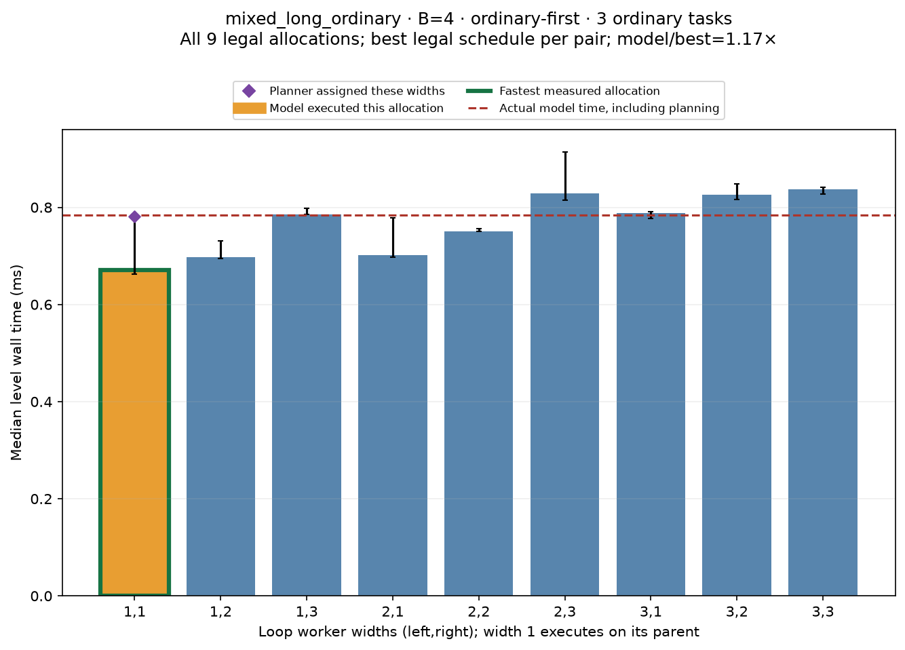
| left | right | median_ms | best_backend | best_order | best_parents | planner_assignment_fraction | model_selection_fraction | empirical_best |
|---|---|---|---|---|---|---|---|---|
| 1 | 1 | 0.67122 | joint | left,ordinary1,ordinary2,ordinary3,right; backfill=1 | 3 | 1.0 | 1.0 | 1 |
| 1 | 2 | 0.697818 | joint | ordinary1,ordinary2,right,left,ordinary3; backfill=1 | 3 | 0.0 | 0.0 | 0 |
| 1 | 3 | 0.78533 | joint | left,ordinary1,ordinary2,right,ordinary3; backfill=1 | 3 | 0.0 | 0.0 | 0 |
| 2 | 1 | 0.702195 | joint | ordinary1,right,ordinary2,ordinary3,left; backfill=0 | 3 | 0.0 | 0.0 | 0 |
| 2 | 2 | 0.750657 | joint | ordinary1,ordinary2,right,left,ordinary3; backfill=1 | 2 | 0.0 | 0.0 | 0 |
| 2 | 3 | 0.828604 | joint | ordinary1,left,ordinary2,ordinary3,right; backfill=1 | 2 | 0.0 | 0.0 | 0 |
| 3 | 1 | 0.788398 | joint | left,right,ordinary1,ordinary2,ordinary3; backfill=0 | 3 | 0.0 | 0.0 | 0 |
| 3 | 2 | 0.825257 | joint | ordinary1,left,ordinary2,right,ordinary3; backfill=1 | 2 | 0.0 | 0.0 | 0 |
| 3 | 3 | 0.83672 | joint | ordinary1,ordinary2,left,right,ordinary3; backfill=1 | 3 | 0.0 | 0.0 | 0 |
{'case': 'mixed_loop_skew', 'budget': 4, 'policy': 'dynamic', 'allocations': 9, 'schedules': 1443, 'model_actual_left': 2, 'model_actual_right': 1, 'modal_selection_fraction': 1.0, 'requested_allocations': '2,1', 'best_config': '1:3:1:39:1', 'best_ms': 0.282592, 'model_ms': 0.382261, 'model_over_best_ratio': 1.3526957592571622, 'ratio_bootstrap_low': 1.2745184635966538, 'ratio_bootstrap_high': 1.3561317742553463, 'allocation_only_ratio': 1.318802372324765, 'selected_schedule_replay_ratio': 1.414856046880308, 'exact_best_allocation_repeat_fraction': 0, 'fallback_fraction': 0.0, 'verdict': '>25% slower', 'ordinary_tasks': 3, 'total_tasks': 5, 'overloaded': 1}
| left | right | median_ms | best_backend | best_order | best_parents | planner_assignment_fraction | model_selection_fraction | empirical_best |
|---|---|---|---|---|---|---|---|---|
| 1 | 1 | 0.517336 | joint | ordinary1,ordinary2,left,ordinary3,right; backfill=1 | 1 | 0.0 | 0.0 | 0 |
| 1 | 2 | 0.573111 | joint | ordinary1,right,ordinary2,left,ordinary3; backfill=1 | 1 | 0.0 | 0.0 | 0 |
| 1 | 3 | 0.570072 | joint | ordinary1,ordinary2,right,ordinary3,left; backfill=1 | 1 | 0.0 | 0.0 | 0 |
| 2 | 1 | 0.378984 | joint | ordinary1,ordinary2,left,right,ordinary3; backfill=1 | 1 | 1.0 | 1.0 | 0 |
| 2 | 2 | 0.437258 | joint | ordinary1,left,right,ordinary2,ordinary3; backfill=1 | 1 | 0.0 | 0.0 | 0 |
| 2 | 3 | 0.428114 | joint | left,ordinary1,right,ordinary2,ordinary3; backfill=1 | 1 | 0.0 | 0.0 | 0 |
| 3 | 1 | 0.282592 | joint | ordinary1,ordinary2,ordinary3,right,left; backfill=1 | 1 | 0.0 | 0.0 | 1 |
| 3 | 2 | 0.343833 | joint | left,ordinary1,right,ordinary2,ordinary3; backfill=1 | 1 | 0.0 | 0.0 | 0 |
| 3 | 3 | 0.342779 | joint | ordinary1,right,left,ordinary2,ordinary3; backfill=0 | 1 | 0.0 | 0.0 | 0 |
{'case': 'mixed_loop_skew', 'budget': 4, 'policy': 'ordinary-first', 'allocations': 9, 'schedules': 1443, 'model_actual_left': 2, 'model_actual_right': 1, 'modal_selection_fraction': 1.0, 'requested_allocations': '2,1', 'best_config': '1:3:1:39:1', 'best_ms': 0.282592, 'model_ms': 0.705472, 'model_over_best_ratio': 2.49643302004303, 'ratio_bootstrap_low': 2.2493995905933173, 'ratio_bootstrap_high': 6.5753097106529115, 'allocation_only_ratio': 1.318802372324765, 'selected_schedule_replay_ratio': 2.8429184124108255, 'exact_best_allocation_repeat_fraction': 0, 'fallback_fraction': 0, 'verdict': '>25% slower', 'ordinary_tasks': 3, 'total_tasks': 5, 'overloaded': 1}
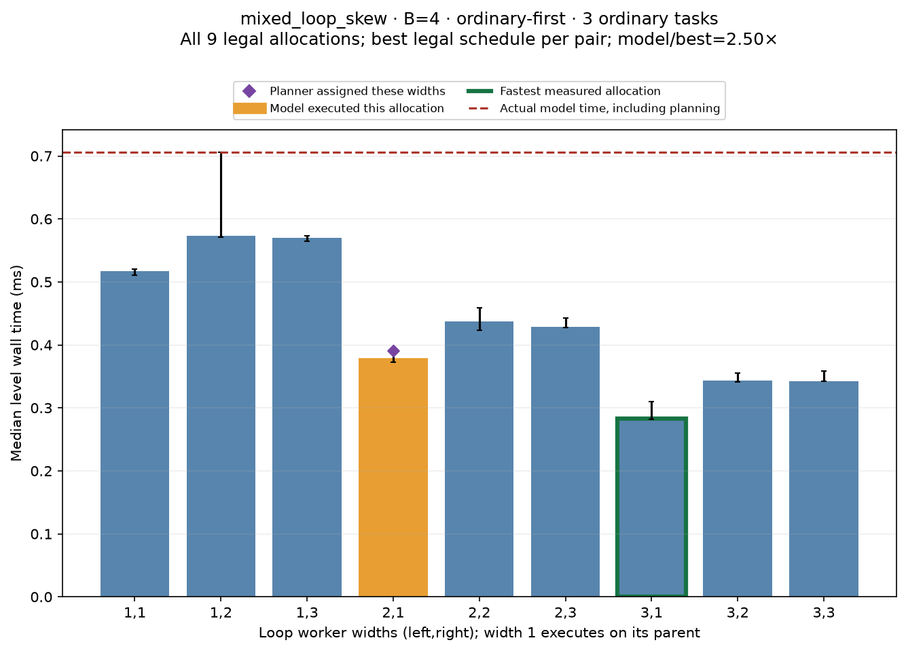
| left | right | median_ms | best_backend | best_order | best_parents | planner_assignment_fraction | model_selection_fraction | empirical_best |
|---|---|---|---|---|---|---|---|---|
| 1 | 1 | 0.517336 | joint | ordinary1,ordinary2,left,ordinary3,right; backfill=1 | 1 | 0.0 | 0.0 | 0 |
| 1 | 2 | 0.573111 | joint | ordinary1,right,ordinary2,left,ordinary3; backfill=1 | 1 | 0.0 | 0.0 | 0 |
| 1 | 3 | 0.570072 | joint | ordinary1,ordinary2,right,ordinary3,left; backfill=1 | 1 | 0.0 | 0.0 | 0 |
| 2 | 1 | 0.378984 | joint | ordinary1,ordinary2,left,right,ordinary3; backfill=1 | 1 | 1.0 | 1.0 | 0 |
| 2 | 2 | 0.437258 | joint | ordinary1,left,right,ordinary2,ordinary3; backfill=1 | 1 | 0.0 | 0.0 | 0 |
| 2 | 3 | 0.428114 | joint | left,ordinary1,right,ordinary2,ordinary3; backfill=1 | 1 | 0.0 | 0.0 | 0 |
| 3 | 1 | 0.282592 | joint | ordinary1,ordinary2,ordinary3,right,left; backfill=1 | 1 | 0.0 | 0.0 | 1 |
| 3 | 2 | 0.343833 | joint | left,ordinary1,right,ordinary2,ordinary3; backfill=1 | 1 | 0.0 | 0.0 | 0 |
| 3 | 3 | 0.342779 | joint | ordinary1,right,left,ordinary2,ordinary3; backfill=0 | 1 | 0.0 | 0.0 | 0 |
{'case': 'mixed_loop_skew', 'budget': 6, 'policy': 'dynamic', 'allocations': 25, 'schedules': 5001, 'model_actual_left': 1, 'model_actual_right': 1, 'modal_selection_fraction': 1.0, 'requested_allocations': '1,1', 'best_config': '1:5:1:12:1', 'best_ms': 0.224507, 'model_ms': 0.540834, 'model_over_best_ratio': 2.4089850205116097, 'ratio_bootstrap_low': 1.4408347121134322, 'ratio_bootstrap_high': 2.803322017119082, 'allocation_only_ratio': 2.3049481753352903, 'selected_schedule_replay_ratio': 2.3049481753352903, 'exact_best_allocation_repeat_fraction': 0, 'fallback_fraction': 0.0, 'verdict': '>25% slower', 'ordinary_tasks': 3, 'total_tasks': 5, 'overloaded': 0}
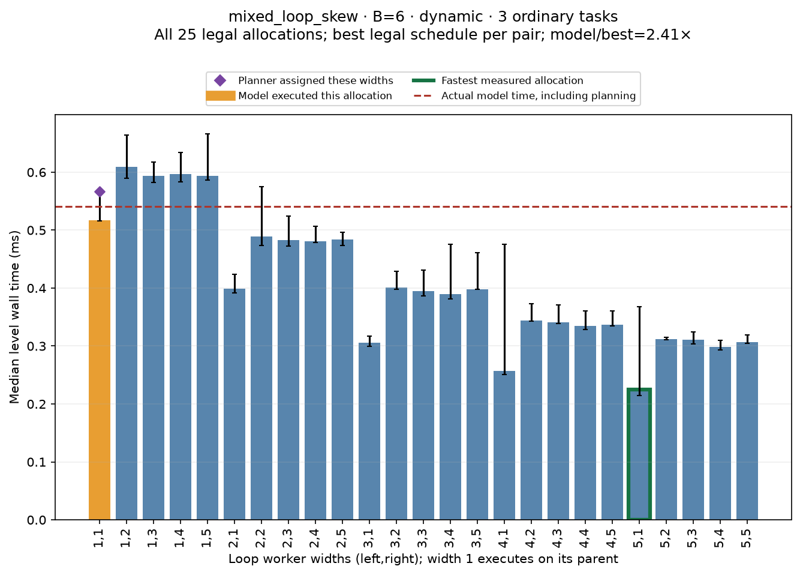
| left | right | median_ms | best_backend | best_order | best_parents | planner_assignment_fraction | model_selection_fraction | empirical_best |
|---|---|---|---|---|---|---|---|---|
| 1 | 1 | 0.517477 | joint | left,right,ordinary1,ordinary2,ordinary3; backfill=0 | 1 | 1.0 | 1.0 | 0 |
| 1 | 2 | 0.609194 | joint | right,ordinary1,left,ordinary2,ordinary3; backfill=0 | 1 | 0.0 | 0.0 | 0 |
| 1 | 3 | 0.593335 | joint | ordinary1,left,ordinary2,right,ordinary3; backfill=0 | 1 | 0.0 | 0.0 | 0 |
| 1 | 4 | 0.597235 | joint | left,right,ordinary1,ordinary2,ordinary3; backfill=0 | 1 | 0.0 | 0.0 | 0 |
| 1 | 5 | 0.593487 | joint | ordinary1,ordinary2,right,ordinary3,left; backfill=1 | 1 | 0.0 | 0.0 | 0 |
| 2 | 1 | 0.398594 | joint | right,ordinary1,ordinary2,left,ordinary3; backfill=0 | 1 | 0.0 | 0.0 | 0 |
| 2 | 2 | 0.488682 | joint | ordinary1,left,ordinary2,right,ordinary3; backfill=0 | 1 | 0.0 | 0.0 | 0 |
| 2 | 3 | 0.482793 | joint | ordinary1,right,ordinary2,left,ordinary3; backfill=0 | 1 | 0.0 | 0.0 | 0 |
| 2 | 4 | 0.480908 | joint | ordinary1,ordinary2,ordinary3,left,right; backfill=0 | 1 | 0.0 | 0.0 | 0 |
| 2 | 5 | 0.483646 | joint | ordinary1,ordinary2,left,ordinary3,right; backfill=0 | 1 | 0.0 | 0.0 | 0 |
| 3 | 1 | 0.305369 | joint | ordinary1,left,ordinary2,ordinary3,right; backfill=1 | 1 | 0.0 | 0.0 | 0 |
| 3 | 2 | 0.400882 | joint | ordinary1,ordinary2,left,ordinary3,right; backfill=1 | 1 | 0.0 | 0.0 | 0 |
| 3 | 3 | 0.394588 | joint | ordinary1,ordinary2,ordinary3,left,right; backfill=0 | 1 | 0.0 | 0.0 | 0 |
| 3 | 4 | 0.389154 | joint | right,ordinary1,ordinary2,ordinary3,left; backfill=1 | 1 | 0.0 | 0.0 | 0 |
| 3 | 5 | 0.398135 | joint | ordinary1,ordinary2,left,ordinary3,right; backfill=0 | 1 | 0.0 | 0.0 | 0 |
| 4 | 1 | 0.25746 | joint | ordinary1,ordinary2,right,ordinary3,left; backfill=1 | 1 | 0.0 | 0.0 | 0 |
| 4 | 2 | 0.344359 | joint | right,ordinary1,ordinary2,left,ordinary3; backfill=0 | 1 | 0.0 | 0.0 | 0 |
| 4 | 3 | 0.340746 | joint | ordinary1,ordinary2,right,ordinary3,left; backfill=1 | 1 | 0.0 | 0.0 | 0 |
| 4 | 4 | 0.33518 | joint | ordinary1,ordinary2,right,left,ordinary3; backfill=1 | 1 | 0.0 | 0.0 | 0 |
| 4 | 5 | 0.336588 | joint | ordinary1,right,ordinary2,ordinary3,left; backfill=0 | 1 | 0.0 | 0.0 | 0 |
| 5 | 1 | 0.224507 | joint | right,ordinary1,ordinary2,left,ordinary3; backfill=0 | 1 | 0.0 | 0.0 | 1 |
| 5 | 2 | 0.312386 | joint | ordinary1,right,left,ordinary2,ordinary3; backfill=1 | 1 | 0.0 | 0.0 | 0 |
| 5 | 3 | 0.310459 | joint | right,ordinary1,ordinary2,left,ordinary3; backfill=1 | 1 | 0.0 | 0.0 | 0 |
| 5 | 4 | 0.298233 | joint | right,ordinary1,ordinary2,left,ordinary3; backfill=0 | 1 | 0.0 | 0.0 | 0 |
| 5 | 5 | 0.306302 | joint | left,ordinary1,ordinary2,ordinary3,right; backfill=1 | 1 | 0.0 | 0.0 | 0 |
{'case': 'mixed_loop_skew', 'budget': 6, 'policy': 'ordinary-first', 'allocations': 25, 'schedules': 5001, 'model_actual_left': 1, 'model_actual_right': 1, 'modal_selection_fraction': 1.0, 'requested_allocations': '1,1', 'best_config': '1:5:1:12:1', 'best_ms': 0.224507, 'model_ms': 0.74988, 'model_over_best_ratio': 3.3401185709131562, 'ratio_bootstrap_low': 2.0653745527454705, 'ratio_bootstrap_high': 3.501706771516762, 'allocation_only_ratio': 2.3049481753352903, 'selected_schedule_replay_ratio': 2.8644496608123577, 'exact_best_allocation_repeat_fraction': 0, 'fallback_fraction': 0, 'verdict': '>25% slower', 'ordinary_tasks': 3, 'total_tasks': 5, 'overloaded': 0}
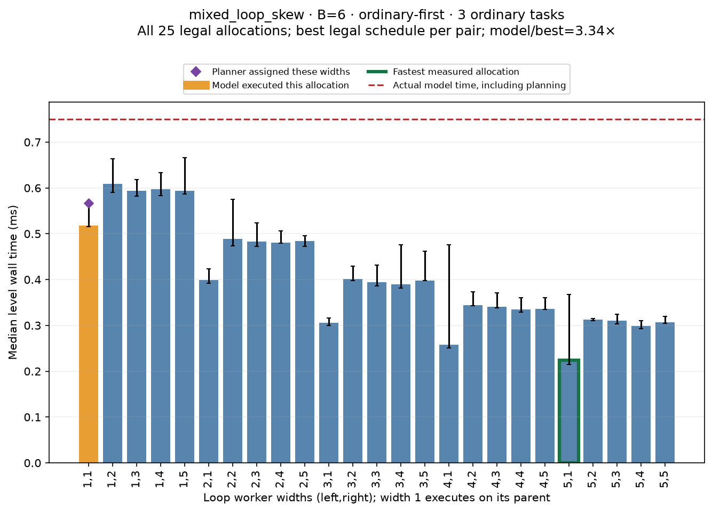
| left | right | median_ms | best_backend | best_order | best_parents | planner_assignment_fraction | model_selection_fraction | empirical_best |
|---|---|---|---|---|---|---|---|---|
| 1 | 1 | 0.517477 | joint | left,right,ordinary1,ordinary2,ordinary3; backfill=0 | 1 | 1.0 | 1.0 | 0 |
| 1 | 2 | 0.609194 | joint | right,ordinary1,left,ordinary2,ordinary3; backfill=0 | 1 | 0.0 | 0.0 | 0 |
| 1 | 3 | 0.593335 | joint | ordinary1,left,ordinary2,right,ordinary3; backfill=0 | 1 | 0.0 | 0.0 | 0 |
| 1 | 4 | 0.597235 | joint | left,right,ordinary1,ordinary2,ordinary3; backfill=0 | 1 | 0.0 | 0.0 | 0 |
| 1 | 5 | 0.593487 | joint | ordinary1,ordinary2,right,ordinary3,left; backfill=1 | 1 | 0.0 | 0.0 | 0 |
| 2 | 1 | 0.398594 | joint | right,ordinary1,ordinary2,left,ordinary3; backfill=0 | 1 | 0.0 | 0.0 | 0 |
| 2 | 2 | 0.488682 | joint | ordinary1,left,ordinary2,right,ordinary3; backfill=0 | 1 | 0.0 | 0.0 | 0 |
| 2 | 3 | 0.482793 | joint | ordinary1,right,ordinary2,left,ordinary3; backfill=0 | 1 | 0.0 | 0.0 | 0 |
| 2 | 4 | 0.480908 | joint | ordinary1,ordinary2,ordinary3,left,right; backfill=0 | 1 | 0.0 | 0.0 | 0 |
| 2 | 5 | 0.483646 | joint | ordinary1,ordinary2,left,ordinary3,right; backfill=0 | 1 | 0.0 | 0.0 | 0 |
| 3 | 1 | 0.305369 | joint | ordinary1,left,ordinary2,ordinary3,right; backfill=1 | 1 | 0.0 | 0.0 | 0 |
| 3 | 2 | 0.400882 | joint | ordinary1,ordinary2,left,ordinary3,right; backfill=1 | 1 | 0.0 | 0.0 | 0 |
| 3 | 3 | 0.394588 | joint | ordinary1,ordinary2,ordinary3,left,right; backfill=0 | 1 | 0.0 | 0.0 | 0 |
| 3 | 4 | 0.389154 | joint | right,ordinary1,ordinary2,ordinary3,left; backfill=1 | 1 | 0.0 | 0.0 | 0 |
| 3 | 5 | 0.398135 | joint | ordinary1,ordinary2,left,ordinary3,right; backfill=0 | 1 | 0.0 | 0.0 | 0 |
| 4 | 1 | 0.25746 | joint | ordinary1,ordinary2,right,ordinary3,left; backfill=1 | 1 | 0.0 | 0.0 | 0 |
| 4 | 2 | 0.344359 | joint | right,ordinary1,ordinary2,left,ordinary3; backfill=0 | 1 | 0.0 | 0.0 | 0 |
| 4 | 3 | 0.340746 | joint | ordinary1,ordinary2,right,ordinary3,left; backfill=1 | 1 | 0.0 | 0.0 | 0 |
| 4 | 4 | 0.33518 | joint | ordinary1,ordinary2,right,left,ordinary3; backfill=1 | 1 | 0.0 | 0.0 | 0 |
| 4 | 5 | 0.336588 | joint | ordinary1,right,ordinary2,ordinary3,left; backfill=0 | 1 | 0.0 | 0.0 | 0 |
| 5 | 1 | 0.224507 | joint | right,ordinary1,ordinary2,left,ordinary3; backfill=0 | 1 | 0.0 | 0.0 | 1 |
| 5 | 2 | 0.312386 | joint | ordinary1,right,left,ordinary2,ordinary3; backfill=1 | 1 | 0.0 | 0.0 | 0 |
| 5 | 3 | 0.310459 | joint | right,ordinary1,ordinary2,left,ordinary3; backfill=1 | 1 | 0.0 | 0.0 | 0 |
| 5 | 4 | 0.298233 | joint | right,ordinary1,ordinary2,left,ordinary3; backfill=0 | 1 | 0.0 | 0.0 | 0 |
| 5 | 5 | 0.306302 | joint | left,ordinary1,ordinary2,ordinary3,right; backfill=1 | 1 | 0.0 | 0.0 | 0 |
{'case': 'mixed_medium_ordinary', 'budget': 4, 'policy': 'dynamic', 'allocations': 9, 'schedules': 1443, 'model_actual_left': 1, 'model_actual_right': 1, 'modal_selection_fraction': 1.0, 'requested_allocations': '1,1', 'best_config': '1:3:3:4:1', 'best_ms': 0.247989, 'model_ms': 0.262646, 'model_over_best_ratio': 1.0591034279746279, 'ratio_bootstrap_low': 1.0431508981233772, 'ratio_bootstrap_high': 1.0620155352211202, 'allocation_only_ratio': 1.0637987295246027, 'selected_schedule_replay_ratio': 1.074217001560553, 'exact_best_allocation_repeat_fraction': 0, 'fallback_fraction': 0.0, 'verdict': 'within 10%', 'ordinary_tasks': 3, 'total_tasks': 5, 'overloaded': 1}
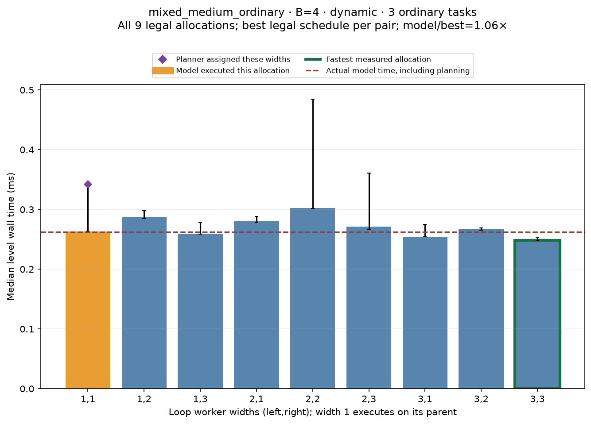
| left | right | median_ms | best_backend | best_order | best_parents | planner_assignment_fraction | model_selection_fraction | empirical_best |
|---|---|---|---|---|---|---|---|---|
| 1 | 1 | 0.263097 | joint | left,ordinary1,ordinary2,ordinary3,right; backfill=0 | 1 | 1.0 | 1.0 | 0 |
| 1 | 2 | 0.287461 | joint | ordinary1,right,left,ordinary2,ordinary3; backfill=1 | 1 | 0.0 | 0.0 | 0 |
| 1 | 3 | 0.259322 | joint | ordinary1,right,left,ordinary2,ordinary3; backfill=0 | 1 | 0.0 | 0.0 | 0 |
| 2 | 1 | 0.28027 | joint | ordinary1,ordinary2,right,left,ordinary3; backfill=1 | 1 | 0.0 | 0.0 | 0 |
| 2 | 2 | 0.302431 | joint | ordinary1,ordinary2,right,ordinary3,left; backfill=1 | 1 | 0.0 | 0.0 | 0 |
| 2 | 3 | 0.271528 | joint | ordinary1,ordinary2,left,ordinary3,right; backfill=1 | 1 | 0.0 | 0.0 | 0 |
| 3 | 1 | 0.254601 | joint | right,ordinary1,left,ordinary2,ordinary3; backfill=0 | 1 | 0.0 | 0.0 | 0 |
| 3 | 2 | 0.267238 | joint | left,ordinary1,ordinary2,ordinary3,right; backfill=0 | 1 | 0.0 | 0.0 | 0 |
| 3 | 3 | 0.247989 | joint | left,ordinary1,ordinary2,right,ordinary3; backfill=0 | 1 | 0.0 | 0.0 | 1 |
{'case': 'mixed_medium_ordinary', 'budget': 4, 'policy': 'ordinary-first', 'allocations': 9, 'schedules': 1443, 'model_actual_left': 1, 'model_actual_right': 1, 'modal_selection_fraction': 1.0, 'requested_allocations': '1,1', 'best_config': '1:3:3:4:1', 'best_ms': 0.247989, 'model_ms': 0.498256, 'model_over_best_ratio': 2.0091858913096954, 'ratio_bootstrap_low': 1.9310816205557504, 'ratio_bootstrap_high': 2.3298293585283307, 'allocation_only_ratio': 1.0637987295246027, 'selected_schedule_replay_ratio': 1.9467912611348557, 'exact_best_allocation_repeat_fraction': 0, 'fallback_fraction': 0, 'verdict': '>25% slower', 'ordinary_tasks': 3, 'total_tasks': 5, 'overloaded': 1}
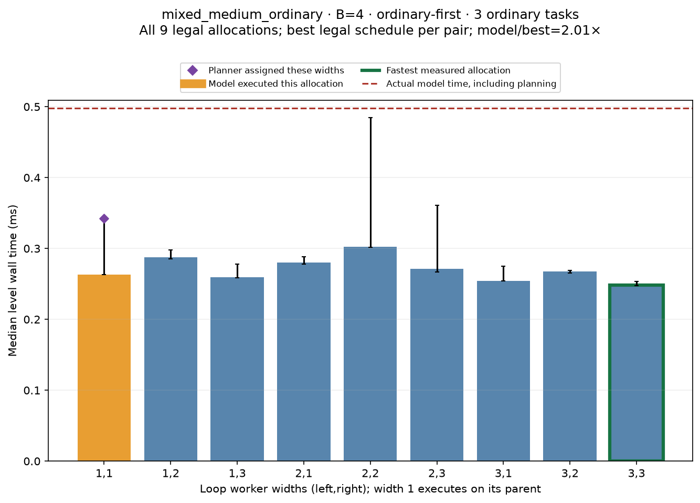
| left | right | median_ms | best_backend | best_order | best_parents | planner_assignment_fraction | model_selection_fraction | empirical_best |
|---|---|---|---|---|---|---|---|---|
| 1 | 1 | 0.263097 | joint | left,ordinary1,ordinary2,ordinary3,right; backfill=0 | 1 | 1.0 | 1.0 | 0 |
| 1 | 2 | 0.287461 | joint | ordinary1,right,left,ordinary2,ordinary3; backfill=1 | 1 | 0.0 | 0.0 | 0 |
| 1 | 3 | 0.259322 | joint | ordinary1,right,left,ordinary2,ordinary3; backfill=0 | 1 | 0.0 | 0.0 | 0 |
| 2 | 1 | 0.28027 | joint | ordinary1,ordinary2,right,left,ordinary3; backfill=1 | 1 | 0.0 | 0.0 | 0 |
| 2 | 2 | 0.302431 | joint | ordinary1,ordinary2,right,ordinary3,left; backfill=1 | 1 | 0.0 | 0.0 | 0 |
| 2 | 3 | 0.271528 | joint | ordinary1,ordinary2,left,ordinary3,right; backfill=1 | 1 | 0.0 | 0.0 | 0 |
| 3 | 1 | 0.254601 | joint | right,ordinary1,left,ordinary2,ordinary3; backfill=0 | 1 | 0.0 | 0.0 | 0 |
| 3 | 2 | 0.267238 | joint | left,ordinary1,ordinary2,ordinary3,right; backfill=0 | 1 | 0.0 | 0.0 | 0 |
| 3 | 3 | 0.247989 | joint | left,ordinary1,ordinary2,right,ordinary3; backfill=0 | 1 | 0.0 | 0.0 | 1 |
{'case': 'mixed_medium_ordinary', 'budget': 6, 'policy': 'dynamic', 'allocations': 25, 'schedules': 5001, 'model_actual_left': 1, 'model_actual_right': 1, 'modal_selection_fraction': 1.0, 'requested_allocations': '1,1', 'best_config': '1:5:5:35:1', 'best_ms': 0.258817, 'model_ms': 0.289566, 'model_over_best_ratio': 1.1188059516955995, 'ratio_bootstrap_low': 0.9089385264426699, 'ratio_bootstrap_high': 1.8067939895756462, 'allocation_only_ratio': 1.0242024287430886, 'selected_schedule_replay_ratio': 1.077676505020922, 'exact_best_allocation_repeat_fraction': 0, 'fallback_fraction': 0.0, 'verdict': '10–25% slower', 'ordinary_tasks': 3, 'total_tasks': 5, 'overloaded': 0}
| left | right | median_ms | best_backend | best_order | best_parents | planner_assignment_fraction | model_selection_fraction | empirical_best |
|---|---|---|---|---|---|---|---|---|
| 1 | 1 | 0.265393 | joint | ordinary1,ordinary2,right,left,ordinary3; backfill=0 | 1 | 1.0 | 1.0 | 0 |
| 1 | 2 | 0.321753 | joint | left,ordinary1,ordinary2,ordinary3,right; backfill=1 | 1 | 0.0 | 0.0 | 0 |
| 1 | 3 | 0.295267 | joint | ordinary1,ordinary2,left,right,ordinary3; backfill=1 | 1 | 0.0 | 0.0 | 0 |
| 1 | 4 | 0.278471 | joint | ordinary1,right,ordinary2,left,ordinary3; backfill=0 | 1 | 0.0 | 0.0 | 0 |
| 1 | 5 | 0.262104 | joint | ordinary1,ordinary2,left,ordinary3,right; backfill=0 | 1 | 0.0 | 0.0 | 0 |
| 2 | 1 | 0.312148 | joint | ordinary1,right,ordinary2,left,ordinary3; backfill=0 | 1 | 0.0 | 0.0 | 0 |
| 2 | 2 | 0.357946 | joint | ordinary1,ordinary2,left,ordinary3,right; backfill=0 | 1 | 0.0 | 0.0 | 0 |
| 2 | 3 | 0.333424 | joint | ordinary1,left,ordinary2,ordinary3,right; backfill=0 | 1 | 0.0 | 0.0 | 0 |
| 2 | 4 | 0.318704 | joint | right,ordinary1,ordinary2,ordinary3,left; backfill=0 | 1 | 0.0 | 0.0 | 0 |
| 2 | 5 | 0.322231 | joint | ordinary1,right,ordinary2,ordinary3,left; backfill=1 | 1 | 0.0 | 0.0 | 0 |
| 3 | 1 | 0.288761 | joint | ordinary1,ordinary2,right,left,ordinary3; backfill=1 | 1 | 0.0 | 0.0 | 0 |
| 3 | 2 | 0.328281 | joint | ordinary1,left,ordinary2,right,ordinary3; backfill=0 | 1 | 0.0 | 0.0 | 0 |
| 3 | 3 | 0.314674 | joint | ordinary1,ordinary2,right,ordinary3,left; backfill=0 | 1 | 0.0 | 0.0 | 0 |
| 3 | 4 | 0.296625 | joint | right,ordinary1,ordinary2,left,ordinary3; backfill=0 | 1 | 0.0 | 0.0 | 0 |
| 3 | 5 | 0.282529 | joint | right,ordinary1,ordinary2,ordinary3,left; backfill=0 | 1 | 0.0 | 0.0 | 0 |
| 4 | 1 | 0.271445 | joint | ordinary1,right,ordinary2,left,ordinary3; backfill=1 | 1 | 0.0 | 0.0 | 0 |
| 4 | 2 | 0.314773 | joint | right,ordinary1,ordinary2,left,ordinary3; backfill=0 | 1 | 0.0 | 0.0 | 0 |
| 4 | 3 | 0.299134 | joint | left,ordinary1,ordinary2,ordinary3,right; backfill=1 | 1 | 0.0 | 0.0 | 0 |
| 4 | 4 | 0.277783 | joint | right,ordinary1,ordinary2,ordinary3,left; backfill=1 | 1 | 0.0 | 0.0 | 0 |
| 4 | 5 | 0.266155 | joint | ordinary1,ordinary2,left,ordinary3,right; backfill=0 | 1 | 0.0 | 0.0 | 0 |
| 5 | 1 | 0.260874 | joint | ordinary1,left,ordinary2,ordinary3,right; backfill=1 | 1 | 0.0 | 0.0 | 0 |
| 5 | 2 | 0.303358 | joint | ordinary1,ordinary2,right,ordinary3,left; backfill=0 | 1 | 0.0 | 0.0 | 0 |
| 5 | 3 | 0.283778 | joint | ordinary1,right,ordinary2,ordinary3,left; backfill=1 | 1 | 0.0 | 0.0 | 0 |
| 5 | 4 | 0.268093 | joint | left,ordinary1,ordinary2,ordinary3,right; backfill=1 | 1 | 0.0 | 0.0 | 0 |
| 5 | 5 | 0.258817 | joint | ordinary1,ordinary2,right,ordinary3,left; backfill=1 | 1 | 0.0 | 0.0 | 1 |
{'case': 'mixed_medium_ordinary', 'budget': 6, 'policy': 'ordinary-first', 'allocations': 25, 'schedules': 5001, 'model_actual_left': 1, 'model_actual_right': 1, 'modal_selection_fraction': 1.0, 'requested_allocations': '1,1', 'best_config': '1:5:5:35:1', 'best_ms': 0.258817, 'model_ms': 0.318525, 'model_over_best_ratio': 1.2306958198263638, 'ratio_bootstrap_low': 1.015220857817287, 'ratio_bootstrap_high': 1.2424667953893862, 'allocation_only_ratio': 1.0242024287430886, 'selected_schedule_replay_ratio': 1.406373724962456, 'exact_best_allocation_repeat_fraction': 0, 'fallback_fraction': 0, 'verdict': '10–25% slower', 'ordinary_tasks': 3, 'total_tasks': 5, 'overloaded': 0}
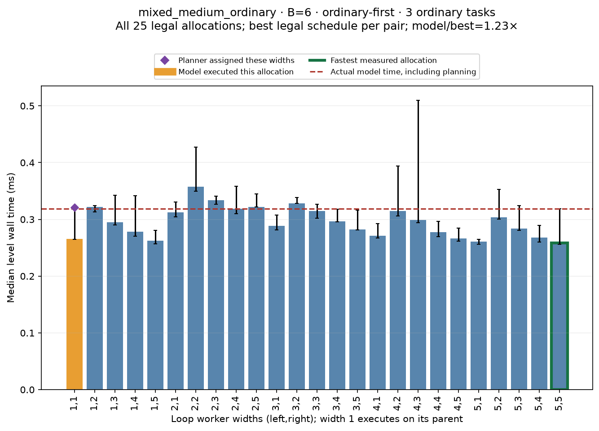
| left | right | median_ms | best_backend | best_order | best_parents | planner_assignment_fraction | model_selection_fraction | empirical_best |
|---|---|---|---|---|---|---|---|---|
| 1 | 1 | 0.265393 | joint | ordinary1,ordinary2,right,left,ordinary3; backfill=0 | 1 | 1.0 | 1.0 | 0 |
| 1 | 2 | 0.321753 | joint | left,ordinary1,ordinary2,ordinary3,right; backfill=1 | 1 | 0.0 | 0.0 | 0 |
| 1 | 3 | 0.295267 | joint | ordinary1,ordinary2,left,right,ordinary3; backfill=1 | 1 | 0.0 | 0.0 | 0 |
| 1 | 4 | 0.278471 | joint | ordinary1,right,ordinary2,left,ordinary3; backfill=0 | 1 | 0.0 | 0.0 | 0 |
| 1 | 5 | 0.262104 | joint | ordinary1,ordinary2,left,ordinary3,right; backfill=0 | 1 | 0.0 | 0.0 | 0 |
| 2 | 1 | 0.312148 | joint | ordinary1,right,ordinary2,left,ordinary3; backfill=0 | 1 | 0.0 | 0.0 | 0 |
| 2 | 2 | 0.357946 | joint | ordinary1,ordinary2,left,ordinary3,right; backfill=0 | 1 | 0.0 | 0.0 | 0 |
| 2 | 3 | 0.333424 | joint | ordinary1,left,ordinary2,ordinary3,right; backfill=0 | 1 | 0.0 | 0.0 | 0 |
| 2 | 4 | 0.318704 | joint | right,ordinary1,ordinary2,ordinary3,left; backfill=0 | 1 | 0.0 | 0.0 | 0 |
| 2 | 5 | 0.322231 | joint | ordinary1,right,ordinary2,ordinary3,left; backfill=1 | 1 | 0.0 | 0.0 | 0 |
| 3 | 1 | 0.288761 | joint | ordinary1,ordinary2,right,left,ordinary3; backfill=1 | 1 | 0.0 | 0.0 | 0 |
| 3 | 2 | 0.328281 | joint | ordinary1,left,ordinary2,right,ordinary3; backfill=0 | 1 | 0.0 | 0.0 | 0 |
| 3 | 3 | 0.314674 | joint | ordinary1,ordinary2,right,ordinary3,left; backfill=0 | 1 | 0.0 | 0.0 | 0 |
| 3 | 4 | 0.296625 | joint | right,ordinary1,ordinary2,left,ordinary3; backfill=0 | 1 | 0.0 | 0.0 | 0 |
| 3 | 5 | 0.282529 | joint | right,ordinary1,ordinary2,ordinary3,left; backfill=0 | 1 | 0.0 | 0.0 | 0 |
| 4 | 1 | 0.271445 | joint | ordinary1,right,ordinary2,left,ordinary3; backfill=1 | 1 | 0.0 | 0.0 | 0 |
| 4 | 2 | 0.314773 | joint | right,ordinary1,ordinary2,left,ordinary3; backfill=0 | 1 | 0.0 | 0.0 | 0 |
| 4 | 3 | 0.299134 | joint | left,ordinary1,ordinary2,ordinary3,right; backfill=1 | 1 | 0.0 | 0.0 | 0 |
| 4 | 4 | 0.277783 | joint | right,ordinary1,ordinary2,ordinary3,left; backfill=1 | 1 | 0.0 | 0.0 | 0 |
| 4 | 5 | 0.266155 | joint | ordinary1,ordinary2,left,ordinary3,right; backfill=0 | 1 | 0.0 | 0.0 | 0 |
| 5 | 1 | 0.260874 | joint | ordinary1,left,ordinary2,ordinary3,right; backfill=1 | 1 | 0.0 | 0.0 | 0 |
| 5 | 2 | 0.303358 | joint | ordinary1,ordinary2,right,ordinary3,left; backfill=0 | 1 | 0.0 | 0.0 | 0 |
| 5 | 3 | 0.283778 | joint | ordinary1,right,ordinary2,ordinary3,left; backfill=1 | 1 | 0.0 | 0.0 | 0 |
| 5 | 4 | 0.268093 | joint | left,ordinary1,ordinary2,ordinary3,right; backfill=1 | 1 | 0.0 | 0.0 | 0 |
| 5 | 5 | 0.258817 | joint | ordinary1,ordinary2,right,ordinary3,left; backfill=1 | 1 | 0.0 | 0.0 | 1 |
{'case': 'mixed_one_long_ordinary', 'budget': 4, 'policy': 'dynamic', 'allocations': 9, 'schedules': 4323, 'model_actual_left': 1, 'model_actual_right': 1, 'modal_selection_fraction': 1.0, 'requested_allocations': '1,1', 'best_config': '1:1:1:94:2', 'best_ms': 0.415979, 'model_ms': 0.444608, 'model_over_best_ratio': 1.068823185785821, 'ratio_bootstrap_low': 0.9468387209337028, 'ratio_bootstrap_high': 1.1340804263730813, 'allocation_only_ratio': 1.0, 'selected_schedule_replay_ratio': 1.0810449565963667, 'exact_best_allocation_repeat_fraction': 1, 'fallback_fraction': 0.0, 'verdict': 'within 10%', 'ordinary_tasks': 3, 'total_tasks': 5, 'overloaded': 1}
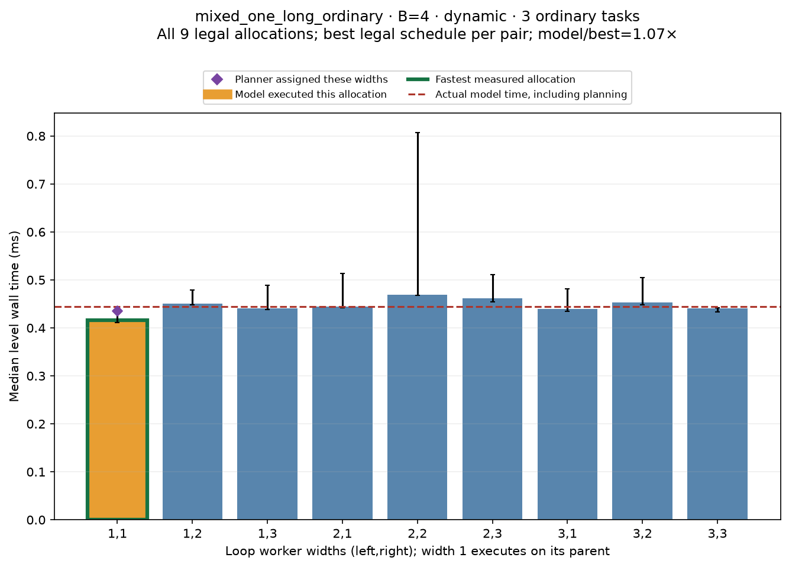
| left | right | median_ms | best_backend | best_order | best_parents | planner_assignment_fraction | model_selection_fraction | empirical_best |
|---|---|---|---|---|---|---|---|---|
| 1 | 1 | 0.415979 | joint | ordinary1,ordinary3,ordinary2,right,left; backfill=0 | 2 | 1.0 | 1.0 | 1 |
| 1 | 2 | 0.450856 | joint | ordinary1,ordinary3,left,ordinary2,right; backfill=0 | 2 | 0.0 | 0.0 | 0 |
| 1 | 3 | 0.440557 | joint | right,ordinary3,ordinary1,left,ordinary2; backfill=1 | 1 | 0.0 | 0.0 | 0 |
| 2 | 1 | 0.444683 | joint | ordinary1,ordinary3,ordinary2,right,left; backfill=0 | 2 | 0.0 | 0.0 | 0 |
| 2 | 2 | 0.469475 | joint | ordinary1,ordinary2,ordinary3,right,left; backfill=1 | 2 | 0.0 | 0.0 | 0 |
| 2 | 3 | 0.46147 | joint | left,ordinary3,ordinary1,ordinary2,right; backfill=1 | 1 | 0.0 | 0.0 | 0 |
| 3 | 1 | 0.438927 | joint | left,right,ordinary3,ordinary1,ordinary2; backfill=1 | 1 | 0.0 | 0.0 | 0 |
| 3 | 2 | 0.453376 | joint | ordinary1,left,ordinary3,ordinary2,right; backfill=1 | 1 | 0.0 | 0.0 | 0 |
| 3 | 3 | 0.440479 | joint | left,ordinary3,ordinary1,ordinary2,right; backfill=1 | 1 | 0.0 | 0.0 | 0 |
{'case': 'mixed_one_long_ordinary', 'budget': 4, 'policy': 'ordinary-first', 'allocations': 9, 'schedules': 4323, 'model_actual_left': 1, 'model_actual_right': 1, 'modal_selection_fraction': 1.0, 'requested_allocations': '1,1', 'best_config': '1:1:1:94:2', 'best_ms': 0.415979, 'model_ms': 0.753232, 'model_over_best_ratio': 1.8107452539671474, 'ratio_bootstrap_low': 1.7291867061219148, 'ratio_bootstrap_high': 1.825702739801769, 'allocation_only_ratio': 1.0, 'selected_schedule_replay_ratio': 1.9599011935289108, 'exact_best_allocation_repeat_fraction': 1, 'fallback_fraction': 0, 'verdict': '>25% slower', 'ordinary_tasks': 3, 'total_tasks': 5, 'overloaded': 1}
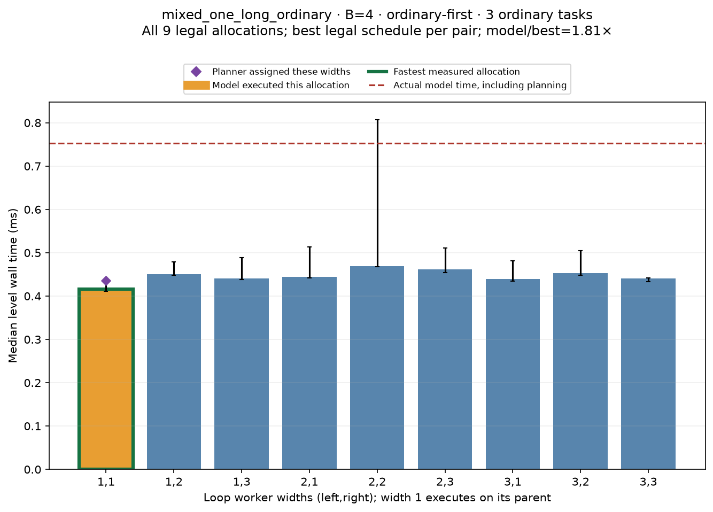
| left | right | median_ms | best_backend | best_order | best_parents | planner_assignment_fraction | model_selection_fraction | empirical_best |
|---|---|---|---|---|---|---|---|---|
| 1 | 1 | 0.415979 | joint | ordinary1,ordinary3,ordinary2,right,left; backfill=0 | 2 | 1.0 | 1.0 | 1 |
| 1 | 2 | 0.450856 | joint | ordinary1,ordinary3,left,ordinary2,right; backfill=0 | 2 | 0.0 | 0.0 | 0 |
| 1 | 3 | 0.440557 | joint | right,ordinary3,ordinary1,left,ordinary2; backfill=1 | 1 | 0.0 | 0.0 | 0 |
| 2 | 1 | 0.444683 | joint | ordinary1,ordinary3,ordinary2,right,left; backfill=0 | 2 | 0.0 | 0.0 | 0 |
| 2 | 2 | 0.469475 | joint | ordinary1,ordinary2,ordinary3,right,left; backfill=1 | 2 | 0.0 | 0.0 | 0 |
| 2 | 3 | 0.46147 | joint | left,ordinary3,ordinary1,ordinary2,right; backfill=1 | 1 | 0.0 | 0.0 | 0 |
| 3 | 1 | 0.438927 | joint | left,right,ordinary3,ordinary1,ordinary2; backfill=1 | 1 | 0.0 | 0.0 | 0 |
| 3 | 2 | 0.453376 | joint | ordinary1,left,ordinary3,ordinary2,right; backfill=1 | 1 | 0.0 | 0.0 | 0 |
| 3 | 3 | 0.440479 | joint | left,ordinary3,ordinary1,ordinary2,right; backfill=1 | 1 | 0.0 | 0.0 | 0 |
{'case': 'mixed_one_ordinary', 'budget': 2, 'policy': 'dynamic', 'allocations': 1, 'schedules': 25, 'model_actual_left': 1, 'model_actual_right': 1, 'modal_selection_fraction': 1.0, 'requested_allocations': '1,1', 'best_config': '1:1:1:8:1', 'best_ms': 0.220925, 'model_ms': 0.22661, 'model_over_best_ratio': 1.0257327147221909, 'ratio_bootstrap_low': 1.011813734372169, 'ratio_bootstrap_high': 1.0257327147221909, 'allocation_only_ratio': 1.0, 'selected_schedule_replay_ratio': 1.0074821772094602, 'exact_best_allocation_repeat_fraction': 1, 'fallback_fraction': 0.0, 'verdict': 'within 10%', 'ordinary_tasks': 1, 'total_tasks': 3, 'overloaded': 1}
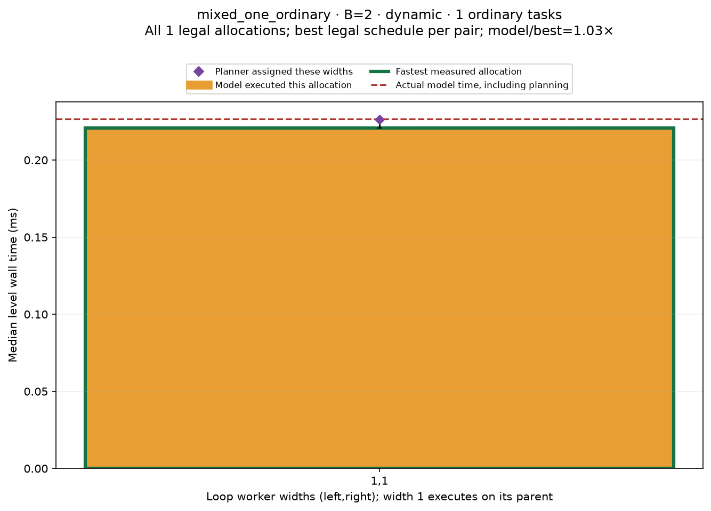
| left | right | median_ms | best_backend | best_order | best_parents | planner_assignment_fraction | model_selection_fraction | empirical_best |
|---|---|---|---|---|---|---|---|---|
| 1 | 1 | 0.220925 | joint | ordinary1,left,right; backfill=0 | 1 | 1.0 | 1.0 | 1 |
{'case': 'mixed_one_ordinary', 'budget': 2, 'policy': 'ordinary-first', 'allocations': 1, 'schedules': 25, 'model_actual_left': 1, 'model_actual_right': 1, 'modal_selection_fraction': 1.0, 'requested_allocations': '1,1', 'best_config': '1:1:1:8:1', 'best_ms': 0.220925, 'model_ms': 0.255952, 'model_over_best_ratio': 1.1585470182188526, 'ratio_bootstrap_low': 1.1262378642920874, 'ratio_bootstrap_high': 1.2037297725472444, 'allocation_only_ratio': 1.0, 'selected_schedule_replay_ratio': 1.174391999929328, 'exact_best_allocation_repeat_fraction': 1, 'fallback_fraction': 0, 'verdict': '10–25% slower', 'ordinary_tasks': 1, 'total_tasks': 3, 'overloaded': 1}
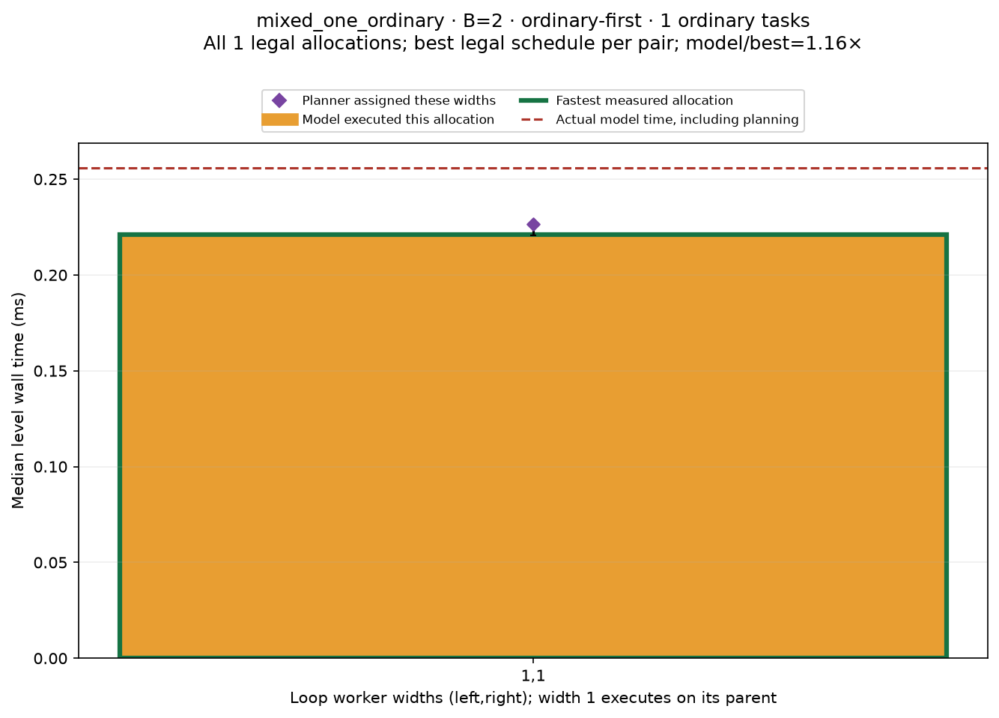
| left | right | median_ms | best_backend | best_order | best_parents | planner_assignment_fraction | model_selection_fraction | empirical_best |
|---|---|---|---|---|---|---|---|---|
| 1 | 1 | 0.220925 | joint | ordinary1,left,right; backfill=0 | 1 | 1.0 | 1.0 | 1 |
{'case': 'mixed_one_ordinary', 'budget': 4, 'policy': 'dynamic', 'allocations': 9, 'schedules': 325, 'model_actual_left': 1, 'model_actual_right': 1, 'modal_selection_fraction': 1.0, 'requested_allocations': '1,1', 'best_config': '1:3:1:10:1', 'best_ms': 0.211796, 'model_ms': 0.223588, 'model_over_best_ratio': 1.05567621673686, 'ratio_bootstrap_low': 1.0381190279415724, 'ratio_bootstrap_high': 1.1017267018384687, 'allocation_only_ratio': 1.0425362140928063, 'selected_schedule_replay_ratio': 1.0509971859714065, 'exact_best_allocation_repeat_fraction': 0, 'fallback_fraction': 0.0, 'verdict': 'within 10%', 'ordinary_tasks': 1, 'total_tasks': 3, 'overloaded': 0}
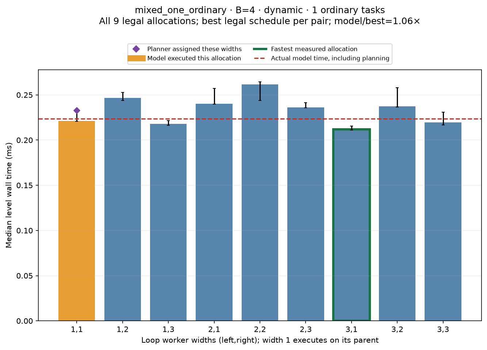
| left | right | median_ms | best_backend | best_order | best_parents | planner_assignment_fraction | model_selection_fraction | empirical_best |
|---|---|---|---|---|---|---|---|---|
| 1 | 1 | 0.221126 | joint | left,ordinary1,right; backfill=0 | 1 | 1.0 | 1.0 | 0 |
| 1 | 2 | 0.246658 | joint | ordinary1,right,left; backfill=1 | 1 | 0.0 | 0.0 | 0 |
| 1 | 3 | 0.218124 | joint | left,right,ordinary1; backfill=0 | 1 | 0.0 | 0.0 | 0 |
| 2 | 1 | 0.239981 | joint | right,ordinary1,left; backfill=0 | 1 | 0.0 | 0.0 | 0 |
| 2 | 2 | 0.26149 | joint | left,right,ordinary1; backfill=1 | 1 | 0.0 | 0.0 | 0 |
| 2 | 3 | 0.236225 | joint | right,ordinary1,left; backfill=1 | 1 | 0.0 | 0.0 | 0 |
| 3 | 1 | 0.211796 | joint | ordinary1,right,left; backfill=0 | 1 | 0.0 | 0.0 | 1 |
| 3 | 2 | 0.237483 | joint | left,ordinary1,right; backfill=0 | 1 | 0.0 | 0.0 | 0 |
| 3 | 3 | 0.219428 | joint | ordinary1,left,right; backfill=0 | 1 | 0.0 | 0.0 | 0 |
{'case': 'mixed_one_ordinary', 'budget': 4, 'policy': 'ordinary-first', 'allocations': 9, 'schedules': 325, 'model_actual_left': 1, 'model_actual_right': 1, 'modal_selection_fraction': 1.0, 'requested_allocations': '1,1', 'best_config': '1:3:1:10:1', 'best_ms': 0.211796, 'model_ms': 0.337293, 'model_over_best_ratio': 1.5925371583977035, 'ratio_bootstrap_low': 1.2524504712081437, 'ratio_bootstrap_high': 1.6902608437259143, 'allocation_only_ratio': 1.0425362140928063, 'selected_schedule_replay_ratio': 1.2595901159821337, 'exact_best_allocation_repeat_fraction': 0, 'fallback_fraction': 0, 'verdict': '>25% slower', 'ordinary_tasks': 1, 'total_tasks': 3, 'overloaded': 0}
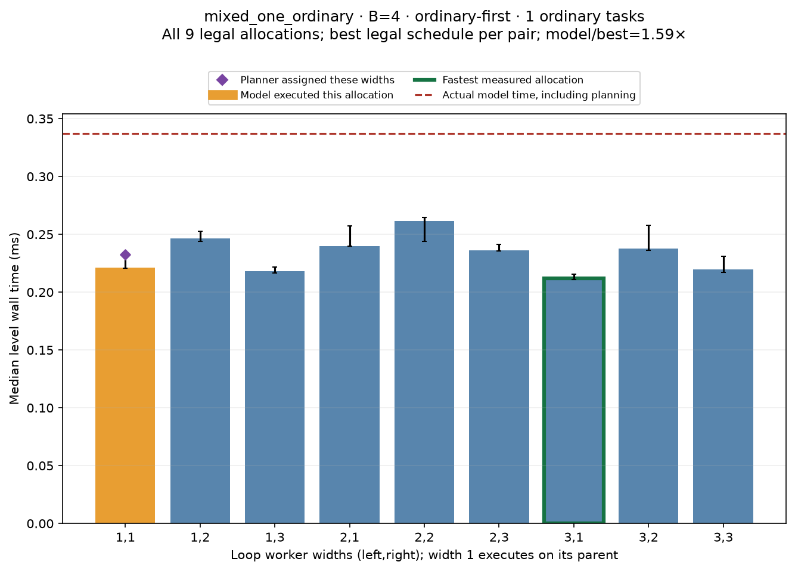
| left | right | median_ms | best_backend | best_order | best_parents | planner_assignment_fraction | model_selection_fraction | empirical_best |
|---|---|---|---|---|---|---|---|---|
| 1 | 1 | 0.221126 | joint | left,ordinary1,right; backfill=0 | 1 | 1.0 | 1.0 | 0 |
| 1 | 2 | 0.246658 | joint | ordinary1,right,left; backfill=1 | 1 | 0.0 | 0.0 | 0 |
| 1 | 3 | 0.218124 | joint | left,right,ordinary1; backfill=0 | 1 | 0.0 | 0.0 | 0 |
| 2 | 1 | 0.239981 | joint | right,ordinary1,left; backfill=0 | 1 | 0.0 | 0.0 | 0 |
| 2 | 2 | 0.26149 | joint | left,right,ordinary1; backfill=1 | 1 | 0.0 | 0.0 | 0 |
| 2 | 3 | 0.236225 | joint | right,ordinary1,left; backfill=1 | 1 | 0.0 | 0.0 | 0 |
| 3 | 1 | 0.211796 | joint | ordinary1,right,left; backfill=0 | 1 | 0.0 | 0.0 | 1 |
| 3 | 2 | 0.237483 | joint | left,ordinary1,right; backfill=0 | 1 | 0.0 | 0.0 | 0 |
| 3 | 3 | 0.219428 | joint | ordinary1,left,right; backfill=0 | 1 | 0.0 | 0.0 | 0 |
{'case': 'mixed_one_ordinary', 'budget': 6, 'policy': 'dynamic', 'allocations': 25, 'schedules': 905, 'model_actual_left': 1, 'model_actual_right': 1, 'modal_selection_fraction': 1.0, 'requested_allocations': '1,1', 'best_config': '1:5:1:9:1', 'best_ms': 0.214826, 'model_ms': 0.22728, 'model_over_best_ratio': 1.057972498673345, 'ratio_bootstrap_low': 0.9608929099902761, 'ratio_bootstrap_high': 1.0859976919015648, 'allocation_only_ratio': 1.03616880638284, 'selected_schedule_replay_ratio': 1.0514742163425284, 'exact_best_allocation_repeat_fraction': 0, 'fallback_fraction': 0.0, 'verdict': 'within 10%', 'ordinary_tasks': 1, 'total_tasks': 3, 'overloaded': 0}
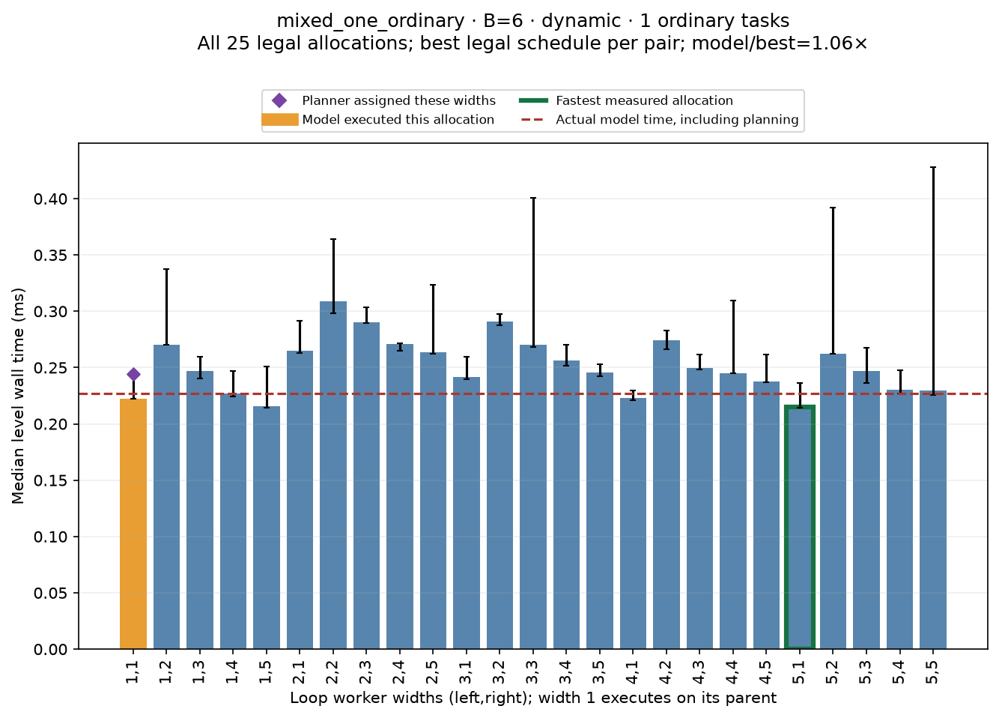
| left | right | median_ms | best_backend | best_order | best_parents | planner_assignment_fraction | model_selection_fraction | empirical_best |
|---|---|---|---|---|---|---|---|---|
| 1 | 1 | 0.222649 | joint | left,right,ordinary1; backfill=1 | 1 | 1.0 | 1.0 | 0 |
| 1 | 2 | 0.270527 | joint | left,right,ordinary1; backfill=1 | 1 | 0.0 | 0.0 | 0 |
| 1 | 3 | 0.247034 | joint | right,left,ordinary1; backfill=1 | 1 | 0.0 | 0.0 | 0 |
| 1 | 4 | 0.227142 | joint | right,ordinary1,left; backfill=1 | 1 | 0.0 | 0.0 | 0 |
| 1 | 5 | 0.215764 | joint | right,left,ordinary1; backfill=0 | 1 | 0.0 | 0.0 | 0 |
| 2 | 1 | 0.265155 | joint | ordinary1,right,left; backfill=1 | 1 | 0.0 | 0.0 | 0 |
| 2 | 2 | 0.30886 | joint | right,ordinary1,left; backfill=0 | 1 | 0.0 | 0.0 | 0 |
| 2 | 3 | 0.290188 | joint | right,ordinary1,left; backfill=1 | 1 | 0.0 | 0.0 | 0 |
| 2 | 4 | 0.271049 | joint | left,ordinary1,right; backfill=0 | 1 | 0.0 | 0.0 | 0 |
| 2 | 5 | 0.263518 | joint | right,ordinary1,left; backfill=0 | 1 | 0.0 | 0.0 | 0 |
| 3 | 1 | 0.241306 | joint | ordinary1,right,left; backfill=0 | 1 | 0.0 | 0.0 | 0 |
| 3 | 2 | 0.290886 | joint | ordinary1,right,left; backfill=0 | 1 | 0.0 | 0.0 | 0 |
| 3 | 3 | 0.270156 | joint | right,ordinary1,left; backfill=0 | 1 | 0.0 | 0.0 | 0 |
| 3 | 4 | 0.256344 | joint | left,ordinary1,right; backfill=0 | 1 | 0.0 | 0.0 | 0 |
| 3 | 5 | 0.245758 | joint | left,right,ordinary1; backfill=1 | 1 | 0.0 | 0.0 | 0 |
| 4 | 1 | 0.222752 | joint | left,ordinary1,right; backfill=1 | 1 | 0.0 | 0.0 | 0 |
| 4 | 2 | 0.274198 | joint | right,ordinary1,left; backfill=1 | 1 | 0.0 | 0.0 | 0 |
| 4 | 3 | 0.249937 | joint | left,ordinary1,right; backfill=1 | 1 | 0.0 | 0.0 | 0 |
| 4 | 4 | 0.245098 | joint | right,left,ordinary1; backfill=1 | 1 | 0.0 | 0.0 | 0 |
| 4 | 5 | 0.237575 | joint | right,left,ordinary1; backfill=0 | 1 | 0.0 | 0.0 | 0 |
| 5 | 1 | 0.214826 | joint | ordinary1,left,right; backfill=1 | 1 | 0.0 | 0.0 | 1 |
| 5 | 2 | 0.262578 | joint | right,ordinary1,left; backfill=0 | 1 | 0.0 | 0.0 | 0 |
| 5 | 3 | 0.246952 | joint | ordinary1,right,left; backfill=0 | 1 | 0.0 | 0.0 | 0 |
| 5 | 4 | 0.230136 | joint | right,left,ordinary1; backfill=1 | 1 | 0.0 | 0.0 | 0 |
| 5 | 5 | 0.229383 | joint | left,right,ordinary1; backfill=1 | 1 | 0.0 | 0.0 | 0 |
{'case': 'mixed_one_ordinary', 'budget': 6, 'policy': 'ordinary-first', 'allocations': 25, 'schedules': 905, 'model_actual_left': 1, 'model_actual_right': 1, 'modal_selection_fraction': 1.0, 'requested_allocations': '1,1', 'best_config': '1:5:1:9:1', 'best_ms': 0.214826, 'model_ms': 0.2886, 'model_over_best_ratio': 1.3434128085054882, 'ratio_bootstrap_low': 1.2201412083033865, 'ratio_bootstrap_high': 1.4773325110148625, 'allocation_only_ratio': 1.03616880638284, 'selected_schedule_replay_ratio': 1.3861159260981695, 'exact_best_allocation_repeat_fraction': 0, 'fallback_fraction': 0, 'verdict': '>25% slower', 'ordinary_tasks': 1, 'total_tasks': 3, 'overloaded': 0}
| left | right | median_ms | best_backend | best_order | best_parents | planner_assignment_fraction | model_selection_fraction | empirical_best |
|---|---|---|---|---|---|---|---|---|
| 1 | 1 | 0.222649 | joint | left,right,ordinary1; backfill=1 | 1 | 1.0 | 1.0 | 0 |
| 1 | 2 | 0.270527 | joint | left,right,ordinary1; backfill=1 | 1 | 0.0 | 0.0 | 0 |
| 1 | 3 | 0.247034 | joint | right,left,ordinary1; backfill=1 | 1 | 0.0 | 0.0 | 0 |
| 1 | 4 | 0.227142 | joint | right,ordinary1,left; backfill=1 | 1 | 0.0 | 0.0 | 0 |
| 1 | 5 | 0.215764 | joint | right,left,ordinary1; backfill=0 | 1 | 0.0 | 0.0 | 0 |
| 2 | 1 | 0.265155 | joint | ordinary1,right,left; backfill=1 | 1 | 0.0 | 0.0 | 0 |
| 2 | 2 | 0.30886 | joint | right,ordinary1,left; backfill=0 | 1 | 0.0 | 0.0 | 0 |
| 2 | 3 | 0.290188 | joint | right,ordinary1,left; backfill=1 | 1 | 0.0 | 0.0 | 0 |
| 2 | 4 | 0.271049 | joint | left,ordinary1,right; backfill=0 | 1 | 0.0 | 0.0 | 0 |
| 2 | 5 | 0.263518 | joint | right,ordinary1,left; backfill=0 | 1 | 0.0 | 0.0 | 0 |
| 3 | 1 | 0.241306 | joint | ordinary1,right,left; backfill=0 | 1 | 0.0 | 0.0 | 0 |
| 3 | 2 | 0.290886 | joint | ordinary1,right,left; backfill=0 | 1 | 0.0 | 0.0 | 0 |
| 3 | 3 | 0.270156 | joint | right,ordinary1,left; backfill=0 | 1 | 0.0 | 0.0 | 0 |
| 3 | 4 | 0.256344 | joint | left,ordinary1,right; backfill=0 | 1 | 0.0 | 0.0 | 0 |
| 3 | 5 | 0.245758 | joint | left,right,ordinary1; backfill=1 | 1 | 0.0 | 0.0 | 0 |
| 4 | 1 | 0.222752 | joint | left,ordinary1,right; backfill=1 | 1 | 0.0 | 0.0 | 0 |
| 4 | 2 | 0.274198 | joint | right,ordinary1,left; backfill=1 | 1 | 0.0 | 0.0 | 0 |
| 4 | 3 | 0.249937 | joint | left,ordinary1,right; backfill=1 | 1 | 0.0 | 0.0 | 0 |
| 4 | 4 | 0.245098 | joint | right,left,ordinary1; backfill=1 | 1 | 0.0 | 0.0 | 0 |
| 4 | 5 | 0.237575 | joint | right,left,ordinary1; backfill=0 | 1 | 0.0 | 0.0 | 0 |
| 5 | 1 | 0.214826 | joint | ordinary1,left,right; backfill=1 | 1 | 0.0 | 0.0 | 1 |
| 5 | 2 | 0.262578 | joint | right,ordinary1,left; backfill=0 | 1 | 0.0 | 0.0 | 0 |
| 5 | 3 | 0.246952 | joint | ordinary1,right,left; backfill=0 | 1 | 0.0 | 0.0 | 0 |
| 5 | 4 | 0.230136 | joint | right,left,ordinary1; backfill=1 | 1 | 0.0 | 0.0 | 0 |
| 5 | 5 | 0.229383 | joint | left,right,ordinary1; backfill=1 | 1 | 0.0 | 0.0 | 0 |
{'case': 'mixed_short_ordinary', 'budget': 2, 'policy': 'dynamic', 'allocations': 1, 'schedules': 81, 'model_actual_left': 1, 'model_actual_right': 1, 'modal_selection_fraction': 1.0, 'requested_allocations': '1,1', 'best_config': '1:1:1:21:1', 'best_ms': 0.240038, 'model_ms': 0.241909, 'model_over_best_ratio': 1.0077945991884618, 'ratio_bootstrap_low': 0.9998760018021071, 'ratio_bootstrap_high': 1.0133937126621617, 'allocation_only_ratio': 1.0, 'selected_schedule_replay_ratio': 1.0072897376786216, 'exact_best_allocation_repeat_fraction': 1, 'fallback_fraction': 0.0, 'verdict': 'within 10%', 'ordinary_tasks': 3, 'total_tasks': 5, 'overloaded': 1}
| left | right | median_ms | best_backend | best_order | best_parents | planner_assignment_fraction | model_selection_fraction | empirical_best |
|---|---|---|---|---|---|---|---|---|
| 1 | 1 | 0.240038 | joint | ordinary1,left,ordinary2,ordinary3,right; backfill=1 | 1 | 1.0 | 1.0 | 1 |
{'case': 'mixed_short_ordinary', 'budget': 2, 'policy': 'ordinary-first', 'allocations': 1, 'schedules': 81, 'model_actual_left': 1, 'model_actual_right': 1, 'modal_selection_fraction': 1.0, 'requested_allocations': '1,1', 'best_config': '1:1:1:21:1', 'best_ms': 0.240038, 'model_ms': 0.436036, 'model_over_best_ratio': 1.8165290495671518, 'ratio_bootstrap_low': 1.8122010724648636, 'ratio_bootstrap_high': 1.829018884925539, 'allocation_only_ratio': 1.0, 'selected_schedule_replay_ratio': 1.8256942650746966, 'exact_best_allocation_repeat_fraction': 1, 'fallback_fraction': 0, 'verdict': '>25% slower', 'ordinary_tasks': 3, 'total_tasks': 5, 'overloaded': 1}
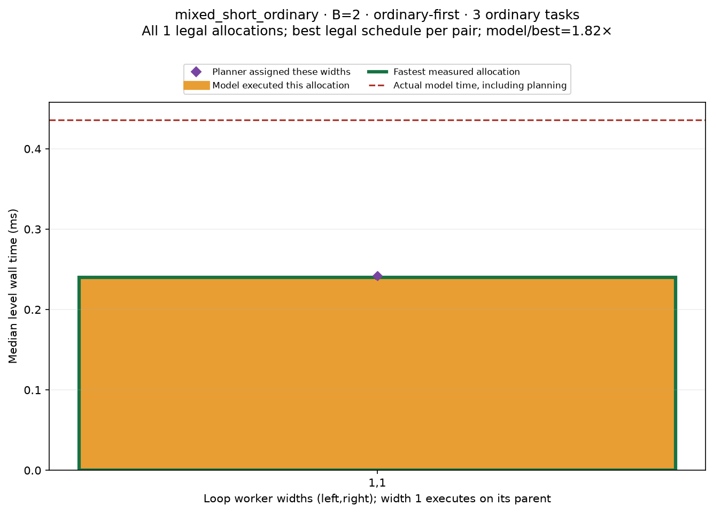
| left | right | median_ms | best_backend | best_order | best_parents | planner_assignment_fraction | model_selection_fraction | empirical_best |
|---|---|---|---|---|---|---|---|---|
| 1 | 1 | 0.240038 | joint | ordinary1,left,ordinary2,ordinary3,right; backfill=1 | 1 | 1.0 | 1.0 | 1 |
{'case': 'mixed_short_ordinary', 'budget': 4, 'policy': 'dynamic', 'allocations': 9, 'schedules': 1443, 'model_actual_left': 1, 'model_actual_right': 1, 'modal_selection_fraction': 1.0, 'requested_allocations': '1,1', 'best_config': '1:3:1:7:1', 'best_ms': 0.214119, 'model_ms': 0.241268, 'model_over_best_ratio': 1.1267939790490336, 'ratio_bootstrap_low': 1.0431489031800074, 'ratio_bootstrap_high': 1.1866245071498136, 'allocation_only_ratio': 1.0382095648331282, 'selected_schedule_replay_ratio': 1.0383382743486227, 'exact_best_allocation_repeat_fraction': 0, 'fallback_fraction': 0.0, 'verdict': '10–25% slower', 'ordinary_tasks': 3, 'total_tasks': 5, 'overloaded': 1}
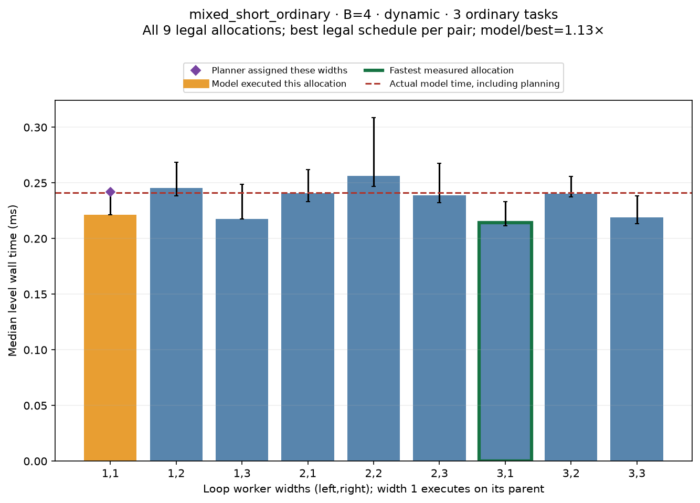
| left | right | median_ms | best_backend | best_order | best_parents | planner_assignment_fraction | model_selection_fraction | empirical_best |
|---|---|---|---|---|---|---|---|---|
| 1 | 1 | 0.221586 | joint | ordinary1,ordinary2,left,ordinary3,right; backfill=1 | 1 | 1.0 | 1.0 | 0 |
| 1 | 2 | 0.245593 | joint | right,ordinary1,ordinary2,ordinary3,left; backfill=1 | 1 | 0.0 | 0.0 | 0 |
| 1 | 3 | 0.217517 | joint | ordinary1,left,ordinary2,right,ordinary3; backfill=0 | 1 | 0.0 | 0.0 | 0 |
| 2 | 1 | 0.240973 | joint | ordinary1,ordinary2,ordinary3,left,right; backfill=1 | 1 | 0.0 | 0.0 | 0 |
| 2 | 2 | 0.256319 | joint | right,left,ordinary1,ordinary2,ordinary3; backfill=1 | 1 | 0.0 | 0.0 | 0 |
| 2 | 3 | 0.239035 | joint | ordinary1,left,ordinary2,right,ordinary3; backfill=0 | 1 | 0.0 | 0.0 | 0 |
| 3 | 1 | 0.214119 | joint | left,ordinary1,ordinary2,ordinary3,right; backfill=1 | 1 | 0.0 | 0.0 | 1 |
| 3 | 2 | 0.240284 | joint | right,ordinary1,ordinary2,left,ordinary3; backfill=0 | 1 | 0.0 | 0.0 | 0 |
| 3 | 3 | 0.219208 | joint | ordinary1,ordinary2,right,ordinary3,left; backfill=1 | 1 | 0.0 | 0.0 | 0 |
{'case': 'mixed_short_ordinary', 'budget': 4, 'policy': 'ordinary-first', 'allocations': 9, 'schedules': 1443, 'model_actual_left': 1, 'model_actual_right': 1, 'modal_selection_fraction': 1.0, 'requested_allocations': '1,1', 'best_config': '1:3:1:7:1', 'best_ms': 0.214119, 'model_ms': 0.455461, 'model_over_best_ratio': 2.1271395812608875, 'ratio_bootstrap_low': 2.047655742834592, 'ratio_bootstrap_high': 2.1772201318843503, 'allocation_only_ratio': 1.0382095648331282, 'selected_schedule_replay_ratio': 2.2042088745043644, 'exact_best_allocation_repeat_fraction': 0, 'fallback_fraction': 0, 'verdict': '>25% slower', 'ordinary_tasks': 3, 'total_tasks': 5, 'overloaded': 1}
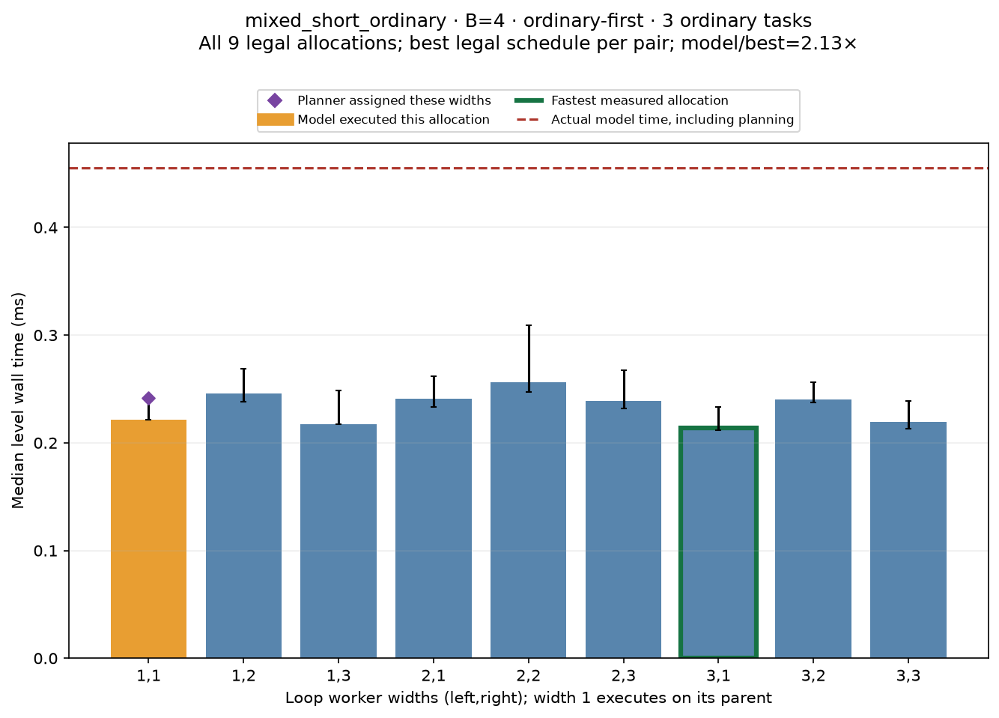
| left | right | median_ms | best_backend | best_order | best_parents | planner_assignment_fraction | model_selection_fraction | empirical_best |
|---|---|---|---|---|---|---|---|---|
| 1 | 1 | 0.221586 | joint | ordinary1,ordinary2,left,ordinary3,right; backfill=1 | 1 | 1.0 | 1.0 | 0 |
| 1 | 2 | 0.245593 | joint | right,ordinary1,ordinary2,ordinary3,left; backfill=1 | 1 | 0.0 | 0.0 | 0 |
| 1 | 3 | 0.217517 | joint | ordinary1,left,ordinary2,right,ordinary3; backfill=0 | 1 | 0.0 | 0.0 | 0 |
| 2 | 1 | 0.240973 | joint | ordinary1,ordinary2,ordinary3,left,right; backfill=1 | 1 | 0.0 | 0.0 | 0 |
| 2 | 2 | 0.256319 | joint | right,left,ordinary1,ordinary2,ordinary3; backfill=1 | 1 | 0.0 | 0.0 | 0 |
| 2 | 3 | 0.239035 | joint | ordinary1,left,ordinary2,right,ordinary3; backfill=0 | 1 | 0.0 | 0.0 | 0 |
| 3 | 1 | 0.214119 | joint | left,ordinary1,ordinary2,ordinary3,right; backfill=1 | 1 | 0.0 | 0.0 | 1 |
| 3 | 2 | 0.240284 | joint | right,ordinary1,ordinary2,left,ordinary3; backfill=0 | 1 | 0.0 | 0.0 | 0 |
| 3 | 3 | 0.219208 | joint | ordinary1,ordinary2,right,ordinary3,left; backfill=1 | 1 | 0.0 | 0.0 | 0 |
{'case': 'mixed_short_ordinary', 'budget': 6, 'policy': 'dynamic', 'allocations': 25, 'schedules': 5001, 'model_actual_left': 1, 'model_actual_right': 1, 'modal_selection_fraction': 1.0, 'requested_allocations': '1,1', 'best_config': '1:5:1:23:1', 'best_ms': 0.211043, 'model_ms': 0.223643, 'model_over_best_ratio': 1.0597034727519985, 'ratio_bootstrap_low': 1.014235569422777, 'ratio_bootstrap_high': 1.1460697582957027, 'allocation_only_ratio': 1.0510421579653884, 'selected_schedule_replay_ratio': 1.0575285605303184, 'exact_best_allocation_repeat_fraction': 0, 'fallback_fraction': 0.0, 'verdict': 'within 10%', 'ordinary_tasks': 3, 'total_tasks': 5, 'overloaded': 0}
| left | right | median_ms | best_backend | best_order | best_parents | planner_assignment_fraction | model_selection_fraction | empirical_best |
|---|---|---|---|---|---|---|---|---|
| 1 | 1 | 0.223359 | joint | ordinary1,ordinary2,right,ordinary3,left; backfill=1 | 1 | 1.0 | 1.0 | 0 |
| 1 | 2 | 0.271564 | joint | ordinary1,ordinary2,ordinary3,left,right; backfill=0 | 1 | 0.0 | 0.0 | 0 |
| 1 | 3 | 0.243709 | joint | ordinary1,right,ordinary2,left,ordinary3; backfill=0 | 1 | 0.0 | 0.0 | 0 |
| 1 | 4 | 0.227179 | joint | ordinary1,ordinary2,left,ordinary3,right; backfill=1 | 1 | 0.0 | 0.0 | 0 |
| 1 | 5 | 0.215616 | joint | right,ordinary1,ordinary2,left,ordinary3; backfill=1 | 1 | 0.0 | 0.0 | 0 |
| 2 | 1 | 0.259404 | joint | ordinary1,ordinary2,ordinary3,right,left; backfill=1 | 1 | 0.0 | 0.0 | 0 |
| 2 | 2 | 0.310733 | joint | right,ordinary1,ordinary2,left,ordinary3; backfill=1 | 1 | 0.0 | 0.0 | 0 |
| 2 | 3 | 0.28747 | joint | ordinary1,ordinary2,left,right,ordinary3; backfill=0 | 1 | 0.0 | 0.0 | 0 |
| 2 | 4 | 0.269662 | joint | right,ordinary1,ordinary2,ordinary3,left; backfill=0 | 1 | 0.0 | 0.0 | 0 |
| 2 | 5 | 0.260902 | joint | right,ordinary1,left,ordinary2,ordinary3; backfill=1 | 1 | 0.0 | 0.0 | 0 |
| 3 | 1 | 0.240542 | joint | ordinary1,ordinary2,right,left,ordinary3; backfill=1 | 1 | 0.0 | 0.0 | 0 |
| 3 | 2 | 0.288958 | joint | ordinary1,right,left,ordinary2,ordinary3; backfill=1 | 1 | 0.0 | 0.0 | 0 |
| 3 | 3 | 0.27026 | joint | ordinary1,ordinary2,ordinary3,left,right; backfill=0 | 1 | 0.0 | 0.0 | 0 |
| 3 | 4 | 0.254446 | joint | ordinary1,left,ordinary2,ordinary3,right; backfill=0 | 1 | 0.0 | 0.0 | 0 |
| 3 | 5 | 0.240201 | joint | ordinary1,ordinary2,ordinary3,left,right; backfill=0 | 1 | 0.0 | 0.0 | 0 |
| 4 | 1 | 0.223009 | joint | right,ordinary1,ordinary2,left,ordinary3; backfill=1 | 1 | 0.0 | 0.0 | 0 |
| 4 | 2 | 0.27341 | joint | left,ordinary1,ordinary2,ordinary3,right; backfill=1 | 1 | 0.0 | 0.0 | 0 |
| 4 | 3 | 0.250625 | joint | left,ordinary1,ordinary2,ordinary3,right; backfill=1 | 1 | 0.0 | 0.0 | 0 |
| 4 | 4 | 0.245876 | joint | left,ordinary1,right,ordinary2,ordinary3; backfill=0 | 1 | 0.0 | 0.0 | 0 |
| 4 | 5 | 0.232561 | joint | ordinary1,ordinary2,left,ordinary3,right; backfill=0 | 1 | 0.0 | 0.0 | 0 |
| 5 | 1 | 0.211043 | joint | ordinary1,right,left,ordinary2,ordinary3; backfill=1 | 1 | 0.0 | 0.0 | 1 |
| 5 | 2 | 0.264391 | joint | ordinary1,left,right,ordinary2,ordinary3; backfill=1 | 1 | 0.0 | 0.0 | 0 |
| 5 | 3 | 0.245739 | joint | right,left,ordinary1,ordinary2,ordinary3; backfill=0 | 1 | 0.0 | 0.0 | 0 |
| 5 | 4 | 0.233653 | joint | ordinary1,ordinary2,left,right,ordinary3; backfill=0 | 1 | 0.0 | 0.0 | 0 |
| 5 | 5 | 0.226545 | joint | ordinary1,right,ordinary2,left,ordinary3; backfill=1 | 1 | 0.0 | 0.0 | 0 |
{'case': 'mixed_short_ordinary', 'budget': 6, 'policy': 'ordinary-first', 'allocations': 25, 'schedules': 5001, 'model_actual_left': 1, 'model_actual_right': 1, 'modal_selection_fraction': 1.0, 'requested_allocations': '1,1', 'best_config': '1:5:1:23:1', 'best_ms': 0.211043, 'model_ms': 0.286892, 'model_over_best_ratio': 1.3594006908544705, 'ratio_bootstrap_low': 1.2916591082247941, 'ratio_bootstrap_high': 1.4680799647465208, 'allocation_only_ratio': 1.0510421579653884, 'selected_schedule_replay_ratio': 1.3724549025554034, 'exact_best_allocation_repeat_fraction': 0, 'fallback_fraction': 0, 'verdict': '>25% slower', 'ordinary_tasks': 3, 'total_tasks': 5, 'overloaded': 0}
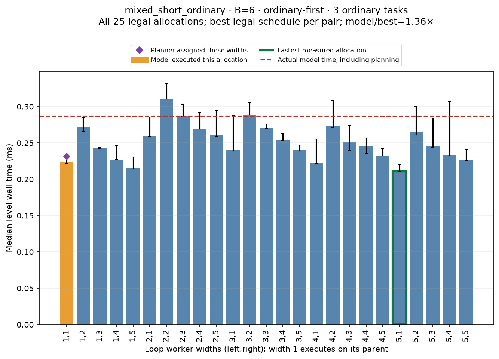
| left | right | median_ms | best_backend | best_order | best_parents | planner_assignment_fraction | model_selection_fraction | empirical_best |
|---|---|---|---|---|---|---|---|---|
| 1 | 1 | 0.223359 | joint | ordinary1,ordinary2,right,ordinary3,left; backfill=1 | 1 | 1.0 | 1.0 | 0 |
| 1 | 2 | 0.271564 | joint | ordinary1,ordinary2,ordinary3,left,right; backfill=0 | 1 | 0.0 | 0.0 | 0 |
| 1 | 3 | 0.243709 | joint | ordinary1,right,ordinary2,left,ordinary3; backfill=0 | 1 | 0.0 | 0.0 | 0 |
| 1 | 4 | 0.227179 | joint | ordinary1,ordinary2,left,ordinary3,right; backfill=1 | 1 | 0.0 | 0.0 | 0 |
| 1 | 5 | 0.215616 | joint | right,ordinary1,ordinary2,left,ordinary3; backfill=1 | 1 | 0.0 | 0.0 | 0 |
| 2 | 1 | 0.259404 | joint | ordinary1,ordinary2,ordinary3,right,left; backfill=1 | 1 | 0.0 | 0.0 | 0 |
| 2 | 2 | 0.310733 | joint | right,ordinary1,ordinary2,left,ordinary3; backfill=1 | 1 | 0.0 | 0.0 | 0 |
| 2 | 3 | 0.28747 | joint | ordinary1,ordinary2,left,right,ordinary3; backfill=0 | 1 | 0.0 | 0.0 | 0 |
| 2 | 4 | 0.269662 | joint | right,ordinary1,ordinary2,ordinary3,left; backfill=0 | 1 | 0.0 | 0.0 | 0 |
| 2 | 5 | 0.260902 | joint | right,ordinary1,left,ordinary2,ordinary3; backfill=1 | 1 | 0.0 | 0.0 | 0 |
| 3 | 1 | 0.240542 | joint | ordinary1,ordinary2,right,left,ordinary3; backfill=1 | 1 | 0.0 | 0.0 | 0 |
| 3 | 2 | 0.288958 | joint | ordinary1,right,left,ordinary2,ordinary3; backfill=1 | 1 | 0.0 | 0.0 | 0 |
| 3 | 3 | 0.27026 | joint | ordinary1,ordinary2,ordinary3,left,right; backfill=0 | 1 | 0.0 | 0.0 | 0 |
| 3 | 4 | 0.254446 | joint | ordinary1,left,ordinary2,ordinary3,right; backfill=0 | 1 | 0.0 | 0.0 | 0 |
| 3 | 5 | 0.240201 | joint | ordinary1,ordinary2,ordinary3,left,right; backfill=0 | 1 | 0.0 | 0.0 | 0 |
| 4 | 1 | 0.223009 | joint | right,ordinary1,ordinary2,left,ordinary3; backfill=1 | 1 | 0.0 | 0.0 | 0 |
| 4 | 2 | 0.27341 | joint | left,ordinary1,ordinary2,ordinary3,right; backfill=1 | 1 | 0.0 | 0.0 | 0 |
| 4 | 3 | 0.250625 | joint | left,ordinary1,ordinary2,ordinary3,right; backfill=1 | 1 | 0.0 | 0.0 | 0 |
| 4 | 4 | 0.245876 | joint | left,ordinary1,right,ordinary2,ordinary3; backfill=0 | 1 | 0.0 | 0.0 | 0 |
| 4 | 5 | 0.232561 | joint | ordinary1,ordinary2,left,ordinary3,right; backfill=0 | 1 | 0.0 | 0.0 | 0 |
| 5 | 1 | 0.211043 | joint | ordinary1,right,left,ordinary2,ordinary3; backfill=1 | 1 | 0.0 | 0.0 | 1 |
| 5 | 2 | 0.264391 | joint | ordinary1,left,right,ordinary2,ordinary3; backfill=1 | 1 | 0.0 | 0.0 | 0 |
| 5 | 3 | 0.245739 | joint | right,left,ordinary1,ordinary2,ordinary3; backfill=0 | 1 | 0.0 | 0.0 | 0 |
| 5 | 4 | 0.233653 | joint | ordinary1,ordinary2,left,right,ordinary3; backfill=0 | 1 | 0.0 | 0.0 | 0 |
| 5 | 5 | 0.226545 | joint | ordinary1,right,ordinary2,left,ordinary3; backfill=1 | 1 | 0.0 | 0.0 | 0 |
{'case': 'mixed_two_ordinary', 'budget': 2, 'policy': 'dynamic', 'allocations': 1, 'schedules': 49, 'model_actual_left': 1, 'model_actual_right': 1, 'modal_selection_fraction': 1.0, 'requested_allocations': '1,1', 'best_config': '1:1:1:12:1', 'best_ms': 0.242973, 'model_ms': 0.245087, 'model_over_best_ratio': 1.0087005552057224, 'ratio_bootstrap_low': 1.0039649483862538, 'ratio_bootstrap_high': 1.0087005552057224, 'allocation_only_ratio': 1.0, 'selected_schedule_replay_ratio': 1.008906339387504, 'exact_best_allocation_repeat_fraction': 1, 'fallback_fraction': 0.0, 'verdict': 'within 10%', 'ordinary_tasks': 2, 'total_tasks': 4, 'overloaded': 1}
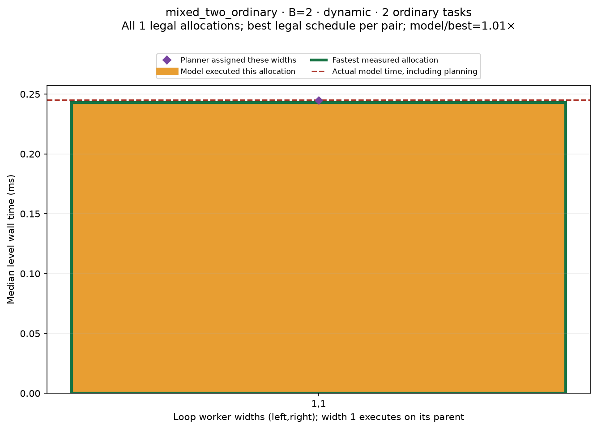
| left | right | median_ms | best_backend | best_order | best_parents | planner_assignment_fraction | model_selection_fraction | empirical_best |
|---|---|---|---|---|---|---|---|---|
| 1 | 1 | 0.242973 | joint | ordinary1,left,right,ordinary2; backfill=0 | 1 | 1.0 | 1.0 | 1 |
{'case': 'mixed_two_ordinary', 'budget': 2, 'policy': 'ordinary-first', 'allocations': 1, 'schedules': 49, 'model_actual_left': 1, 'model_actual_right': 1, 'modal_selection_fraction': 1.0, 'requested_allocations': '1,1', 'best_config': '1:1:1:12:1', 'best_ms': 0.242973, 'model_ms': 0.433598, 'model_over_best_ratio': 1.7845521930420252, 'ratio_bootstrap_low': 1.761862178230759, 'ratio_bootstrap_high': 1.9719598473904507, 'allocation_only_ratio': 1.0, 'selected_schedule_replay_ratio': 1.824720543930988, 'exact_best_allocation_repeat_fraction': 1, 'fallback_fraction': 0, 'verdict': '>25% slower', 'ordinary_tasks': 2, 'total_tasks': 4, 'overloaded': 1}
| left | right | median_ms | best_backend | best_order | best_parents | planner_assignment_fraction | model_selection_fraction | empirical_best |
|---|---|---|---|---|---|---|---|---|
| 1 | 1 | 0.242973 | joint | ordinary1,left,right,ordinary2; backfill=0 | 1 | 1.0 | 1.0 | 1 |
{'case': 'mixed_two_ordinary', 'budget': 4, 'policy': 'dynamic', 'allocations': 9, 'schedules': 865, 'model_actual_left': 1, 'model_actual_right': 1, 'modal_selection_fraction': 1.0, 'requested_allocations': '1,1', 'best_config': '1:3:1:13:1', 'best_ms': 0.232302, 'model_ms': 0.244134, 'model_over_best_ratio': 1.0509336983753907, 'ratio_bootstrap_low': 1.0161326573933023, 'ratio_bootstrap_high': 1.1158070112750396, 'allocation_only_ratio': 1.0461468261142823, 'selected_schedule_replay_ratio': 1.0810367538807242, 'exact_best_allocation_repeat_fraction': 0, 'fallback_fraction': 0.0, 'verdict': 'within 10%', 'ordinary_tasks': 2, 'total_tasks': 4, 'overloaded': 0}
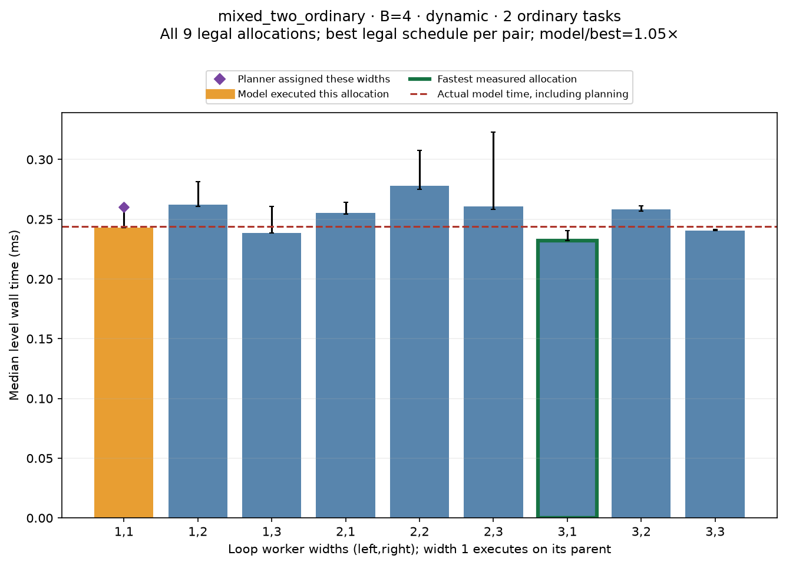
| left | right | median_ms | best_backend | best_order | best_parents | planner_assignment_fraction | model_selection_fraction | empirical_best |
|---|---|---|---|---|---|---|---|---|
| 1 | 1 | 0.243022 | joint | ordinary1,ordinary2,left,right; backfill=0 | 1 | 1.0 | 1.0 | 0 |
| 1 | 2 | 0.261988 | joint | left,ordinary1,right,ordinary2; backfill=0 | 1 | 0.0 | 0.0 | 0 |
| 1 | 3 | 0.238404 | joint | left,ordinary1,ordinary2,right; backfill=0 | 1 | 0.0 | 0.0 | 0 |
| 2 | 1 | 0.255095 | joint | right,ordinary1,ordinary2,left; backfill=1 | 1 | 0.0 | 0.0 | 0 |
| 2 | 2 | 0.278123 | joint | ordinary1,right,left,ordinary2; backfill=0 | 1 | 0.0 | 0.0 | 0 |
| 2 | 3 | 0.260686 | joint | ordinary1,left,right,ordinary2; backfill=0 | 1 | 0.0 | 0.0 | 0 |
| 3 | 1 | 0.232302 | joint | ordinary1,left,right,ordinary2; backfill=1 | 1 | 0.0 | 0.0 | 1 |
| 3 | 2 | 0.258311 | joint | right,ordinary1,ordinary2,left; backfill=0 | 1 | 0.0 | 0.0 | 0 |
| 3 | 3 | 0.240527 | joint | left,right,ordinary1,ordinary2; backfill=0 | 1 | 0.0 | 0.0 | 0 |
{'case': 'mixed_two_ordinary', 'budget': 4, 'policy': 'ordinary-first', 'allocations': 9, 'schedules': 865, 'model_actual_left': 1, 'model_actual_right': 1, 'modal_selection_fraction': 1.0, 'requested_allocations': '1,1', 'best_config': '1:3:1:13:1', 'best_ms': 0.232302, 'model_ms': 0.31601, 'model_over_best_ratio': 1.360341279885666, 'ratio_bootstrap_low': 1.3119861215142359, 'ratio_bootstrap_high': 1.4125614013939893, 'allocation_only_ratio': 1.0461468261142823, 'selected_schedule_replay_ratio': 1.316201749785647, 'exact_best_allocation_repeat_fraction': 0, 'fallback_fraction': 0, 'verdict': '>25% slower', 'ordinary_tasks': 2, 'total_tasks': 4, 'overloaded': 0}
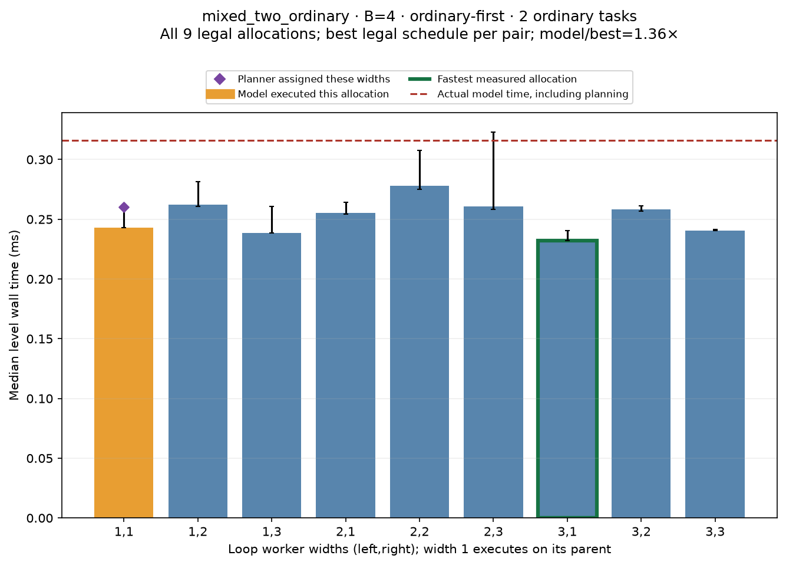
| left | right | median_ms | best_backend | best_order | best_parents | planner_assignment_fraction | model_selection_fraction | empirical_best |
|---|---|---|---|---|---|---|---|---|
| 1 | 1 | 0.243022 | joint | ordinary1,ordinary2,left,right; backfill=0 | 1 | 1.0 | 1.0 | 0 |
| 1 | 2 | 0.261988 | joint | left,ordinary1,right,ordinary2; backfill=0 | 1 | 0.0 | 0.0 | 0 |
| 1 | 3 | 0.238404 | joint | left,ordinary1,ordinary2,right; backfill=0 | 1 | 0.0 | 0.0 | 0 |
| 2 | 1 | 0.255095 | joint | right,ordinary1,ordinary2,left; backfill=1 | 1 | 0.0 | 0.0 | 0 |
| 2 | 2 | 0.278123 | joint | ordinary1,right,left,ordinary2; backfill=0 | 1 | 0.0 | 0.0 | 0 |
| 2 | 3 | 0.260686 | joint | ordinary1,left,right,ordinary2; backfill=0 | 1 | 0.0 | 0.0 | 0 |
| 3 | 1 | 0.232302 | joint | ordinary1,left,right,ordinary2; backfill=1 | 1 | 0.0 | 0.0 | 1 |
| 3 | 2 | 0.258311 | joint | right,ordinary1,ordinary2,left; backfill=0 | 1 | 0.0 | 0.0 | 0 |
| 3 | 3 | 0.240527 | joint | left,right,ordinary1,ordinary2; backfill=0 | 1 | 0.0 | 0.0 | 0 |
{'case': 'mixed_two_ordinary', 'budget': 6, 'policy': 'dynamic', 'allocations': 25, 'schedules': 2403, 'model_actual_left': 1, 'model_actual_right': 1, 'modal_selection_fraction': 1.0, 'requested_allocations': '1,1', 'best_config': '1:5:1:0:1', 'best_ms': 0.211585, 'model_ms': 0.230127, 'model_over_best_ratio': 1.0876338114705675, 'ratio_bootstrap_low': 0.8793038228607455, 'ratio_bootstrap_high': 1.1717473638191003, 'allocation_only_ratio': 1.052735307323298, 'selected_schedule_replay_ratio': 1.0546919677670912, 'exact_best_allocation_repeat_fraction': 0, 'fallback_fraction': 0.0, 'verdict': 'within 10%', 'ordinary_tasks': 2, 'total_tasks': 4, 'overloaded': 0}
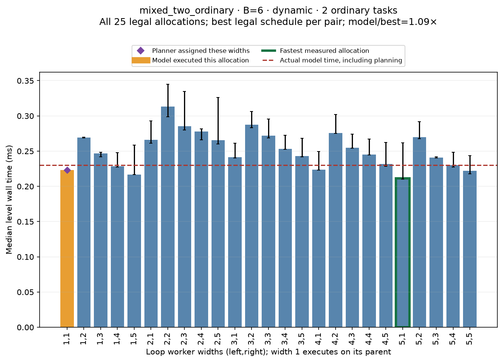
| left | right | median_ms | best_backend | best_order | best_parents | planner_assignment_fraction | model_selection_fraction | empirical_best |
|---|---|---|---|---|---|---|---|---|
| 1 | 1 | 0.22289 | joint | ordinary1,left,ordinary2,right; backfill=1 | 1 | 1.0 | 1.0 | 0 |
| 1 | 2 | 0.269369 | joint | right,ordinary1,left,ordinary2; backfill=0 | 1 | 0.0 | 0.0 | 0 |
| 1 | 3 | 0.246804 | joint | ordinary1,left,ordinary2,right; backfill=1 | 1 | 0.0 | 0.0 | 0 |
| 1 | 4 | 0.228722 | joint | ordinary1,left,right,ordinary2; backfill=1 | 1 | 0.0 | 0.0 | 0 |
| 1 | 5 | 0.216865 | joint | ordinary1,right,ordinary2,left; backfill=1 | 1 | 0.0 | 0.0 | 0 |
| 2 | 1 | 0.265989 | joint | ordinary1,ordinary2,left,right; backfill=0 | 1 | 0.0 | 0.0 | 0 |
| 2 | 2 | 0.313481 | joint | ordinary1,right,ordinary2,left; backfill=1 | 1 | 0.0 | 0.0 | 0 |
| 2 | 3 | 0.28511 | joint | right,ordinary1,ordinary2,left; backfill=1 | 1 | 0.0 | 0.0 | 0 |
| 2 | 4 | 0.277607 | joint | left,right,ordinary1,ordinary2; backfill=0 | 1 | 0.0 | 0.0 | 0 |
| 2 | 5 | 0.265755 | joint | left,ordinary1,ordinary2,right; backfill=0 | 1 | 0.0 | 0.0 | 0 |
| 3 | 1 | 0.241363 | joint | right,ordinary1,ordinary2,left; backfill=0 | 1 | 0.0 | 0.0 | 0 |
| 3 | 2 | 0.287397 | joint | right,ordinary1,ordinary2,left; backfill=0 | 1 | 0.0 | 0.0 | 0 |
| 3 | 3 | 0.271786 | joint | left,right,ordinary1,ordinary2; backfill=1 | 1 | 0.0 | 0.0 | 0 |
| 3 | 4 | 0.25305 | joint | left,ordinary1,right,ordinary2; backfill=1 | 1 | 0.0 | 0.0 | 0 |
| 3 | 5 | 0.242745 | joint | right,ordinary1,left,ordinary2; backfill=1 | 1 | 0.0 | 0.0 | 0 |
| 4 | 1 | 0.223423 | joint | right,left,ordinary1,ordinary2; backfill=1 | 1 | 0.0 | 0.0 | 0 |
| 4 | 2 | 0.275697 | joint | ordinary1,ordinary2,left,right; backfill=0 | 1 | 0.0 | 0.0 | 0 |
| 4 | 3 | 0.255005 | joint | right,ordinary1,ordinary2,left; backfill=0 | 1 | 0.0 | 0.0 | 0 |
| 4 | 4 | 0.244904 | joint | ordinary1,left,right,ordinary2; backfill=0 | 1 | 0.0 | 0.0 | 0 |
| 4 | 5 | 0.231642 | joint | ordinary1,left,ordinary2,right; backfill=1 | 1 | 0.0 | 0.0 | 0 |
| 5 | 1 | 0.211585 | joint | left,right,ordinary1,ordinary2; backfill=0 | 1 | 0.0 | 0.0 | 1 |
| 5 | 2 | 0.269709 | joint | ordinary1,right,left,ordinary2; backfill=0 | 1 | 0.0 | 0.0 | 0 |
| 5 | 3 | 0.240964 | joint | ordinary1,right,left,ordinary2; backfill=0 | 1 | 0.0 | 0.0 | 0 |
| 5 | 4 | 0.230182 | joint | ordinary1,ordinary2,right,left; backfill=0 | 1 | 0.0 | 0.0 | 0 |
| 5 | 5 | 0.222348 | joint | left,ordinary1,right,ordinary2; backfill=0 | 1 | 0.0 | 0.0 | 0 |
{'case': 'mixed_two_ordinary', 'budget': 6, 'policy': 'ordinary-first', 'allocations': 25, 'schedules': 2403, 'model_actual_left': 1, 'model_actual_right': 1, 'modal_selection_fraction': 1.0, 'requested_allocations': '1,1', 'best_config': '1:5:1:0:1', 'best_ms': 0.211585, 'model_ms': 0.319899, 'model_over_best_ratio': 1.5119171963986104, 'ratio_bootstrap_low': 1.1991211814378235, 'ratio_bootstrap_high': 1.5494043347890343, 'allocation_only_ratio': 1.052735307323298, 'selected_schedule_replay_ratio': 1.390944537656261, 'exact_best_allocation_repeat_fraction': 0, 'fallback_fraction': 0, 'verdict': '>25% slower', 'ordinary_tasks': 2, 'total_tasks': 4, 'overloaded': 0}
| left | right | median_ms | best_backend | best_order | best_parents | planner_assignment_fraction | model_selection_fraction | empirical_best |
|---|---|---|---|---|---|---|---|---|
| 1 | 1 | 0.22289 | joint | ordinary1,left,ordinary2,right; backfill=1 | 1 | 1.0 | 1.0 | 0 |
| 1 | 2 | 0.269369 | joint | right,ordinary1,left,ordinary2; backfill=0 | 1 | 0.0 | 0.0 | 0 |
| 1 | 3 | 0.246804 | joint | ordinary1,left,ordinary2,right; backfill=1 | 1 | 0.0 | 0.0 | 0 |
| 1 | 4 | 0.228722 | joint | ordinary1,left,right,ordinary2; backfill=1 | 1 | 0.0 | 0.0 | 0 |
| 1 | 5 | 0.216865 | joint | ordinary1,right,ordinary2,left; backfill=1 | 1 | 0.0 | 0.0 | 0 |
| 2 | 1 | 0.265989 | joint | ordinary1,ordinary2,left,right; backfill=0 | 1 | 0.0 | 0.0 | 0 |
| 2 | 2 | 0.313481 | joint | ordinary1,right,ordinary2,left; backfill=1 | 1 | 0.0 | 0.0 | 0 |
| 2 | 3 | 0.28511 | joint | right,ordinary1,ordinary2,left; backfill=1 | 1 | 0.0 | 0.0 | 0 |
| 2 | 4 | 0.277607 | joint | left,right,ordinary1,ordinary2; backfill=0 | 1 | 0.0 | 0.0 | 0 |
| 2 | 5 | 0.265755 | joint | left,ordinary1,ordinary2,right; backfill=0 | 1 | 0.0 | 0.0 | 0 |
| 3 | 1 | 0.241363 | joint | right,ordinary1,ordinary2,left; backfill=0 | 1 | 0.0 | 0.0 | 0 |
| 3 | 2 | 0.287397 | joint | right,ordinary1,ordinary2,left; backfill=0 | 1 | 0.0 | 0.0 | 0 |
| 3 | 3 | 0.271786 | joint | left,right,ordinary1,ordinary2; backfill=1 | 1 | 0.0 | 0.0 | 0 |
| 3 | 4 | 0.25305 | joint | left,ordinary1,right,ordinary2; backfill=1 | 1 | 0.0 | 0.0 | 0 |
| 3 | 5 | 0.242745 | joint | right,ordinary1,left,ordinary2; backfill=1 | 1 | 0.0 | 0.0 | 0 |
| 4 | 1 | 0.223423 | joint | right,left,ordinary1,ordinary2; backfill=1 | 1 | 0.0 | 0.0 | 0 |
| 4 | 2 | 0.275697 | joint | ordinary1,ordinary2,left,right; backfill=0 | 1 | 0.0 | 0.0 | 0 |
| 4 | 3 | 0.255005 | joint | right,ordinary1,ordinary2,left; backfill=0 | 1 | 0.0 | 0.0 | 0 |
| 4 | 4 | 0.244904 | joint | ordinary1,left,right,ordinary2; backfill=0 | 1 | 0.0 | 0.0 | 0 |
| 4 | 5 | 0.231642 | joint | ordinary1,left,ordinary2,right; backfill=1 | 1 | 0.0 | 0.0 | 0 |
| 5 | 1 | 0.211585 | joint | left,right,ordinary1,ordinary2; backfill=0 | 1 | 0.0 | 0.0 | 1 |
| 5 | 2 | 0.269709 | joint | ordinary1,right,left,ordinary2; backfill=0 | 1 | 0.0 | 0.0 | 0 |
| 5 | 3 | 0.240964 | joint | ordinary1,right,left,ordinary2; backfill=0 | 1 | 0.0 | 0.0 | 0 |
| 5 | 4 | 0.230182 | joint | ordinary1,ordinary2,right,left; backfill=0 | 1 | 0.0 | 0.0 | 0 |
| 5 | 5 | 0.222348 | joint | left,ordinary1,right,ordinary2; backfill=0 | 1 | 0.0 | 0.0 | 0 |
{'case': 'short', 'budget': 2, 'policy': 'dynamic', 'allocations': 1, 'schedules': 5, 'model_actual_left': 1, 'model_actual_right': 1, 'modal_selection_fraction': 1.0, 'requested_allocations': '1,1', 'best_config': '1:1:1:0:1', 'best_ms': 0.038783, 'model_ms': 0.048885, 'model_over_best_ratio': 1.2604749503648507, 'ratio_bootstrap_low': 1.0658278111543718, 'ratio_bootstrap_high': 1.3513353268715198, 'allocation_only_ratio': 1.0, 'selected_schedule_replay_ratio': 1.0, 'exact_best_allocation_repeat_fraction': 1, 'fallback_fraction': 0.0, 'verdict': '>25% slower', 'ordinary_tasks': 0, 'total_tasks': 2, 'overloaded': 0}
| left | right | median_ms | best_backend | best_order | best_parents | planner_assignment_fraction | model_selection_fraction | empirical_best |
|---|---|---|---|---|---|---|---|---|
| 1 | 1 | 0.038783 | joint | left,right | 1 | 1.0 | 1.0 | 1 |
{'case': 'short', 'budget': 2, 'policy': 'ordinary-first', 'allocations': 1, 'schedules': 1, 'model_actual_left': 1, 'model_actual_right': 1, 'modal_selection_fraction': 1.0, 'requested_allocations': '1,1', 'best_config': '0:1:1:0:2', 'best_ms': 0.167944, 'model_ms': 0.168201, 'model_over_best_ratio': 1.001530271995427, 'ratio_bootstrap_low': 0.9557813692168967, 'ratio_bootstrap_high': 1.120248416138713, 'allocation_only_ratio': 1.0, 'selected_schedule_replay_ratio': 1.0, 'exact_best_allocation_repeat_fraction': 1, 'fallback_fraction': 0, 'verdict': 'within 10%', 'ordinary_tasks': 0, 'total_tasks': 2, 'overloaded': 0}
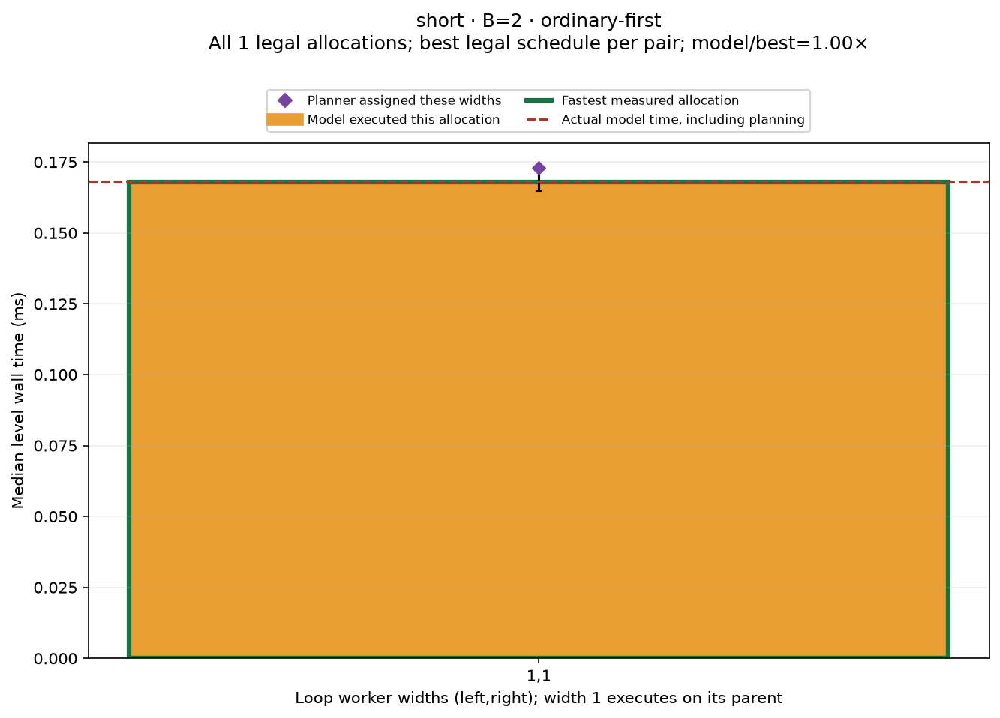
| left | right | median_ms | best_backend | best_order | best_parents | planner_assignment_fraction | model_selection_fraction | empirical_best |
|---|---|---|---|---|---|---|---|---|
| 1 | 1 | 0.167944 | ordinary | left,right | 2 | 1.0 | 1.0 | 1 |
{'case': 'short', 'budget': 4, 'policy': 'dynamic', 'allocations': 9, 'schedules': 27, 'model_actual_left': 1, 'model_actual_right': 1, 'modal_selection_fraction': 1.0, 'requested_allocations': '1,1', 'best_config': '1:1:1:1:1', 'best_ms': 0.038783, 'model_ms': 0.041355, 'model_over_best_ratio': 1.0663177165252817, 'ratio_bootstrap_low': 1.0650544695974657, 'ratio_bootstrap_high': 1.0670294527260535, 'allocation_only_ratio': 1.0, 'selected_schedule_replay_ratio': 1.0454944034662403, 'exact_best_allocation_repeat_fraction': 1, 'fallback_fraction': 0.0, 'verdict': 'within 10%', 'ordinary_tasks': 0, 'total_tasks': 2, 'overloaded': 0}
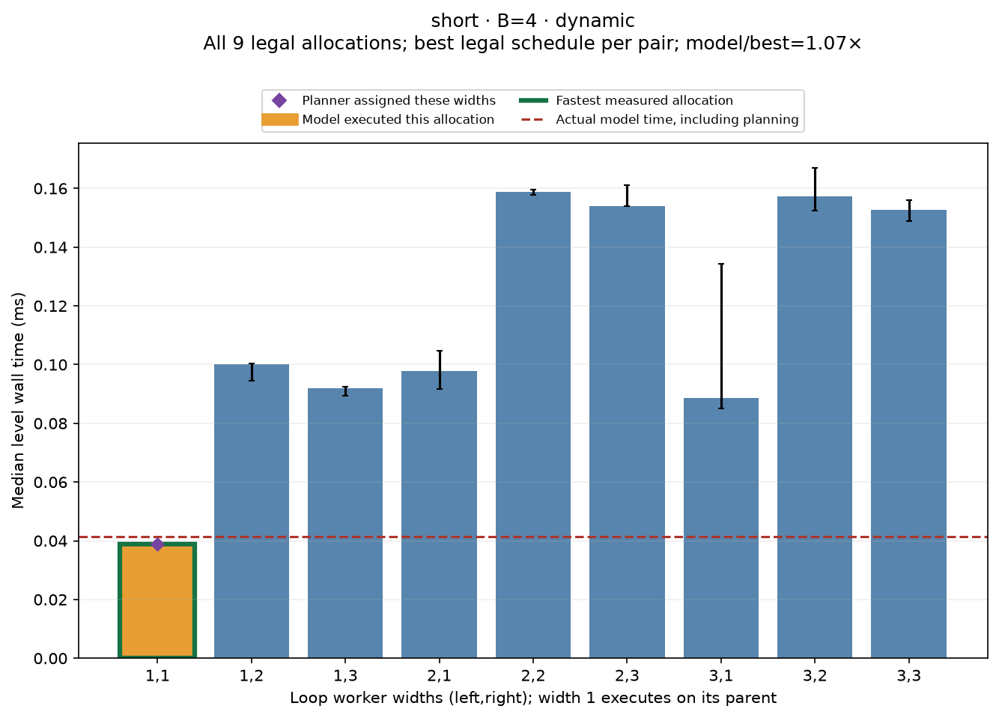
| left | right | median_ms | best_backend | best_order | best_parents | planner_assignment_fraction | model_selection_fraction | empirical_best |
|---|---|---|---|---|---|---|---|---|
| 1 | 1 | 0.038783 | joint | right,left | 1 | 1.0 | 1.0 | 1 |
| 1 | 2 | 0.100076 | joint | left,right | 1 | 0.0 | 0.0 | 0 |
| 1 | 3 | 0.091875 | joint | left,right | 1 | 0.0 | 0.0 | 0 |
| 2 | 1 | 0.097716 | joint | right,left | 1 | 0.0 | 0.0 | 0 |
| 2 | 2 | 0.158806 | joint | left,right | 1 | 0.0 | 0.0 | 0 |
| 2 | 3 | 0.153956 | joint | right,left | 1 | 0.0 | 0.0 | 0 |
| 3 | 1 | 0.088746 | joint | left,right | 1 | 0.0 | 0.0 | 0 |
| 3 | 2 | 0.15729 | joint | left,right | 1 | 0.0 | 0.0 | 0 |
| 3 | 3 | 0.152641 | joint | left,right | 1 | 0.0 | 0.0 | 0 |
{'case': 'short', 'budget': 4, 'policy': 'ordinary-first', 'allocations': 3, 'schedules': 3, 'model_actual_left': 1, 'model_actual_right': 1, 'modal_selection_fraction': 1.0, 'requested_allocations': '1,1', 'best_config': '0:1:1:0:2', 'best_ms': 0.19657, 'model_ms': 0.186091, 'model_over_best_ratio': 0.9466907462990284, 'ratio_bootstrap_low': 0.8935105141577957, 'ratio_bootstrap_high': 1.0022477536372993, 'allocation_only_ratio': 1.0, 'selected_schedule_replay_ratio': 1.0, 'exact_best_allocation_repeat_fraction': 1, 'fallback_fraction': 0, 'verdict': 'within 10%', 'ordinary_tasks': 0, 'total_tasks': 2, 'overloaded': 0}
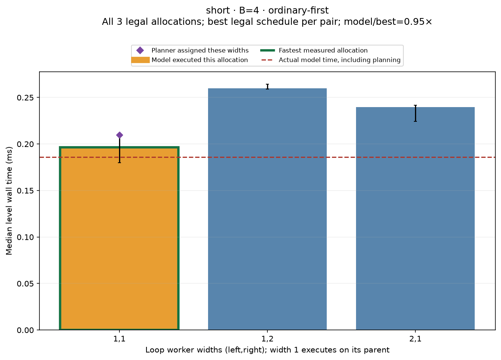
| left | right | median_ms | best_backend | best_order | best_parents | planner_assignment_fraction | model_selection_fraction | empirical_best |
|---|---|---|---|---|---|---|---|---|
| 1 | 1 | 0.19657 | ordinary | left,right | 2 | 1.0 | 1.0 | 1 |
| 1 | 2 | 0.259965 | ordinary | left,right | 2 | 0.0 | 0.0 | 0 |
| 2 | 1 | 0.23976 | ordinary | left,right | 2 | 0.0 | 0.0 | 0 |
{'case': 'short', 'budget': 6, 'policy': 'dynamic', 'allocations': 25, 'schedules': 74, 'model_actual_left': 1, 'model_actual_right': 1, 'modal_selection_fraction': 1.0, 'requested_allocations': '1,1', 'best_config': '1:1:1:1:1', 'best_ms': 0.038765, 'model_ms': 0.041318, 'model_over_best_ratio': 1.0658583774022958, 'ratio_bootstrap_low': 1.0131012158132184, 'ratio_bootstrap_high': 1.066133402141659, 'allocation_only_ratio': 1.0, 'selected_schedule_replay_ratio': 1.0056766868791123, 'exact_best_allocation_repeat_fraction': 1, 'fallback_fraction': 0.0, 'verdict': 'within 10%', 'ordinary_tasks': 0, 'total_tasks': 2, 'overloaded': 0}
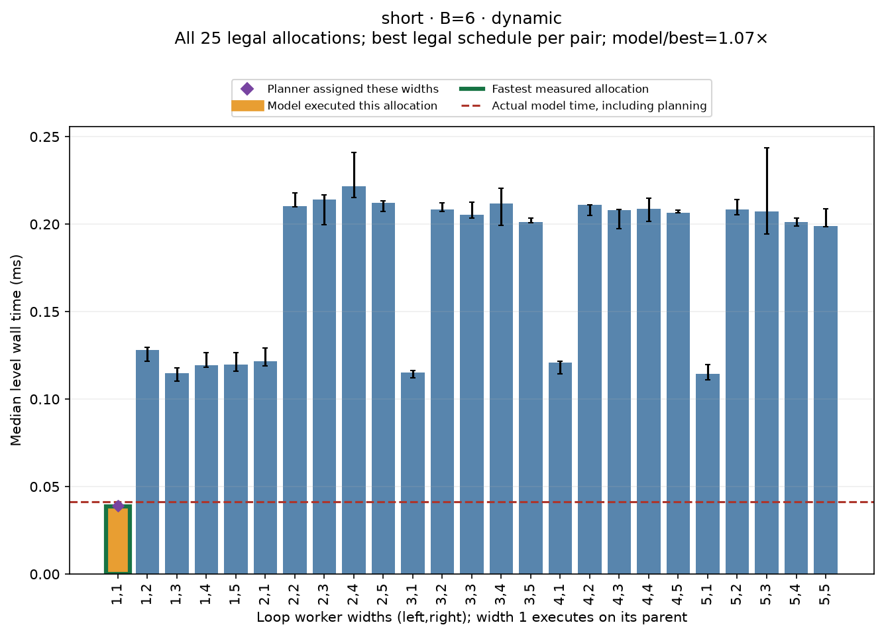
| left | right | median_ms | best_backend | best_order | best_parents | planner_assignment_fraction | model_selection_fraction | empirical_best |
|---|---|---|---|---|---|---|---|---|
| 1 | 1 | 0.038765 | joint | right,left | 1 | 1.0 | 1.0 | 1 |
| 1 | 2 | 0.128086 | joint | left,right | 1 | 0.0 | 0.0 | 0 |
| 1 | 3 | 0.114907 | joint | right,left | 1 | 0.0 | 0.0 | 0 |
| 1 | 4 | 0.119237 | joint | left,right | 1 | 0.0 | 0.0 | 0 |
| 1 | 5 | 0.119802 | joint | right,left | 1 | 0.0 | 0.0 | 0 |
| 2 | 1 | 0.121758 | joint | right,left | 1 | 0.0 | 0.0 | 0 |
| 2 | 2 | 0.21029 | joint | left,right | 1 | 0.0 | 0.0 | 0 |
| 2 | 3 | 0.214074 | joint | right,left | 1 | 0.0 | 0.0 | 0 |
| 2 | 4 | 0.221577 | joint | right,left | 1 | 0.0 | 0.0 | 0 |
| 2 | 5 | 0.212117 | joint | right,left | 1 | 0.0 | 0.0 | 0 |
| 3 | 1 | 0.115109 | joint | right,left | 1 | 0.0 | 0.0 | 0 |
| 3 | 2 | 0.20827 | joint | left,right | 1 | 0.0 | 0.0 | 0 |
| 3 | 3 | 0.205476 | joint | left,right | 1 | 0.0 | 0.0 | 0 |
| 3 | 4 | 0.211741 | joint | left,right | 1 | 0.0 | 0.0 | 0 |
| 3 | 5 | 0.201031 | joint | left,right | 1 | 0.0 | 0.0 | 0 |
| 4 | 1 | 0.120799 | joint | left,right | 1 | 0.0 | 0.0 | 0 |
| 4 | 2 | 0.211019 | joint | left,right | 1 | 0.0 | 0.0 | 0 |
| 4 | 3 | 0.208096 | joint | right,left | 1 | 0.0 | 0.0 | 0 |
| 4 | 4 | 0.208936 | joint | left,right | 1 | 0.0 | 0.0 | 0 |
| 4 | 5 | 0.206626 | joint | right,left | 1 | 0.0 | 0.0 | 0 |
| 5 | 1 | 0.114558 | joint | left,right | 1 | 0.0 | 0.0 | 0 |
| 5 | 2 | 0.208214 | joint | left,right | 1 | 0.0 | 0.0 | 0 |
| 5 | 3 | 0.207332 | joint | right,left | 1 | 0.0 | 0.0 | 0 |
| 5 | 4 | 0.201189 | joint | left,right | 1 | 0.0 | 0.0 | 0 |
| 5 | 5 | 0.198896 | joint | right,left | 1 | 0.0 | 0.0 | 0 |
{'case': 'short', 'budget': 6, 'policy': 'ordinary-first', 'allocations': 8, 'schedules': 8, 'model_actual_left': 1, 'model_actual_right': 1, 'modal_selection_fraction': 1.0, 'requested_allocations': '1,1', 'best_config': '0:1:1:0:2', 'best_ms': 0.180948, 'model_ms': 0.189526, 'model_over_best_ratio': 1.047405884563521, 'ratio_bootstrap_low': 0.9816233943700464, 'ratio_bootstrap_high': 1.131496341490373, 'allocation_only_ratio': 1.0, 'selected_schedule_replay_ratio': 1.0, 'exact_best_allocation_repeat_fraction': 1, 'fallback_fraction': 0, 'verdict': 'within 10%', 'ordinary_tasks': 0, 'total_tasks': 2, 'overloaded': 0}
| left | right | median_ms | best_backend | best_order | best_parents | planner_assignment_fraction | model_selection_fraction | empirical_best |
|---|---|---|---|---|---|---|---|---|
| 1 | 1 | 0.180948 | ordinary | left,right | 2 | 1.0 | 1.0 | 1 |
| 1 | 2 | 0.271803 | ordinary | left,right | 2 | 0.0 | 0.0 | 0 |
| 1 | 3 | 0.282851 | ordinary | left,right | 2 | 0.0 | 0.0 | 0 |
| 1 | 4 | 0.2823 | ordinary | left,right | 2 | 0.0 | 0.0 | 0 |
| 2 | 1 | 0.246703 | ordinary | left,right | 2 | 0.0 | 0.0 | 0 |
| 2 | 2 | 0.363686 | ordinary | left,right | 2 | 0.0 | 0.0 | 0 |
| 3 | 1 | 0.25618 | ordinary | left,right | 2 | 0.0 | 0.0 | 0 |
| 4 | 1 | 0.239132 | ordinary | left,right | 2 | 0.0 | 0.0 | 0 |
{'case': 'short', 'budget': 8, 'policy': 'dynamic', 'allocations': 49, 'schedules': 149, 'model_actual_left': 1, 'model_actual_right': 1, 'modal_selection_fraction': 1.0, 'requested_allocations': '1,1', 'best_config': '1:1:1:0:1', 'best_ms': 0.039012, 'model_ms': 0.041447, 'model_over_best_ratio': 1.0624166922998053, 'ratio_bootstrap_low': 0.9675282108910428, 'ratio_bootstrap_high': 1.079360196862504, 'allocation_only_ratio': 1.0, 'selected_schedule_replay_ratio': 1.0, 'exact_best_allocation_repeat_fraction': 1, 'fallback_fraction': 0.0, 'verdict': 'within 10%', 'ordinary_tasks': 0, 'total_tasks': 2, 'overloaded': 0}
| left | right | median_ms | best_backend | best_order | best_parents | planner_assignment_fraction | model_selection_fraction | empirical_best |
|---|---|---|---|---|---|---|---|---|
| 1 | 1 | 0.039012 | joint | left,right | 1 | 1.0 | 1.0 | 1 |
| 1 | 2 | 0.171849 | joint | right,left | 1 | 0.0 | 0.0 | 0 |
| 1 | 3 | 0.145021 | joint | left,right | 1 | 0.0 | 0.0 | 0 |
| 1 | 4 | 0.145296 | joint | right,left | 1 | 0.0 | 0.0 | 0 |
| 1 | 5 | 0.16111 | joint | right,left | 1 | 0.0 | 0.0 | 0 |
| 1 | 6 | 0.144884 | joint | right,left | 1 | 0.0 | 0.0 | 0 |
| 1 | 7 | 0.145645 | joint | right,left | 1 | 0.0 | 0.0 | 0 |
| 2 | 1 | 0.151443 | joint | left,right | 1 | 0.0 | 0.0 | 0 |
| 2 | 2 | 0.284774 | joint | right,left | 1 | 0.0 | 0.0 | 0 |
| 2 | 3 | 0.271877 | joint | left,right | 1 | 0.0 | 0.0 | 0 |
| 2 | 4 | 0.264759 | joint | left,right | 1 | 0.0 | 0.0 | 0 |
| 2 | 5 | 0.259276 | joint | left,right | 1 | 0.0 | 0.0 | 0 |
| 2 | 6 | 0.264225 | joint | right,left | 1 | 0.0 | 0.0 | 0 |
| 2 | 7 | 0.262225 | joint | left,right | 1 | 0.0 | 0.0 | 0 |
| 3 | 1 | 0.151812 | joint | right,left | 1 | 0.0 | 0.0 | 0 |
| 3 | 2 | 0.259046 | joint | right,left | 1 | 0.0 | 0.0 | 0 |
| 3 | 3 | 0.253875 | joint | left,right | 1 | 0.0 | 0.0 | 0 |
| 3 | 4 | 0.256589 | joint | right,left | 1 | 0.0 | 0.0 | 0 |
| 3 | 5 | 0.260522 | joint | right,left | 1 | 0.0 | 0.0 | 0 |
| 3 | 6 | 0.263564 | joint | right,left | 1 | 0.0 | 0.0 | 0 |
| 3 | 7 | 0.253306 | joint | right,left | 1 | 0.0 | 0.0 | 0 |
| 4 | 1 | 0.147693 | joint | left,right | 1 | 0.0 | 0.0 | 0 |
| 4 | 2 | 0.26384 | joint | left,right | 1 | 0.0 | 0.0 | 0 |
| 4 | 3 | 0.258293 | joint | left,right | 1 | 0.0 | 0.0 | 0 |
| 4 | 4 | 0.265338 | joint | right,left | 1 | 0.0 | 0.0 | 0 |
| 4 | 5 | 0.272327 | joint | right,left | 1 | 0.0 | 0.0 | 0 |
| 4 | 6 | 0.261258 | joint | left,right | 1 | 0.0 | 0.0 | 0 |
| 4 | 7 | 0.259726 | joint | right,left | 1 | 0.0 | 0.0 | 0 |
| 5 | 1 | 0.144644 | joint | right,left | 1 | 0.0 | 0.0 | 0 |
| 5 | 2 | 0.262053 | joint | left,right | 1 | 0.0 | 0.0 | 0 |
| 5 | 3 | 0.260516 | joint | left,right | 1 | 0.0 | 0.0 | 0 |
| 5 | 4 | 0.261021 | joint | left,right | 1 | 0.0 | 0.0 | 0 |
| 5 | 5 | 0.260539 | joint | right,left | 1 | 0.0 | 0.0 | 0 |
| 5 | 6 | 0.251048 | joint | right,left | 1 | 0.0 | 0.0 | 0 |
| 5 | 7 | 0.255235 | joint | right,left | 1 | 0.0 | 0.0 | 0 |
| 6 | 1 | 0.144053 | joint | right,left | 1 | 0.0 | 0.0 | 0 |
| 6 | 2 | 0.256016 | joint | right,left | 1 | 0.0 | 0.0 | 0 |
| 6 | 3 | 0.265328 | joint | left,right | 1 | 0.0 | 0.0 | 0 |
| 6 | 4 | 0.264511 | joint | left,right | 1 | 0.0 | 0.0 | 0 |
| 6 | 5 | 0.256501 | joint | left,right | 1 | 0.0 | 0.0 | 0 |
| 6 | 6 | 0.276312 | joint | left,right | 1 | 0.0 | 0.0 | 0 |
| 6 | 7 | 0.264519 | joint | left,right | 1 | 0.0 | 0.0 | 0 |
| 7 | 1 | 0.146022 | joint | left,right | 1 | 0.0 | 0.0 | 0 |
| 7 | 2 | 0.263091 | joint | left,right | 1 | 0.0 | 0.0 | 0 |
| 7 | 3 | 0.270875 | joint | left,right | 1 | 0.0 | 0.0 | 0 |
| 7 | 4 | 0.254454 | joint | right,left | 1 | 0.0 | 0.0 | 0 |
| 7 | 5 | 0.247383 | joint | right,left | 1 | 0.0 | 0.0 | 0 |
| 7 | 6 | 0.266109 | joint | right,left | 1 | 0.0 | 0.0 | 0 |
| 7 | 7 | 0.249394 | joint | left,right | 1 | 0.0 | 0.0 | 0 |
{'case': 'short', 'budget': 8, 'policy': 'ordinary-first', 'allocations': 17, 'schedules': 17, 'model_actual_left': 1, 'model_actual_right': 1, 'modal_selection_fraction': 1.0, 'requested_allocations': '1,1', 'best_config': '0:1:1:0:2', 'best_ms': 0.184713, 'model_ms': 0.202176, 'model_over_best_ratio': 1.0945412613080834, 'ratio_bootstrap_low': 1.0046775267577268, 'ratio_bootstrap_high': 1.1534524879641324, 'allocation_only_ratio': 1.0, 'selected_schedule_replay_ratio': 1.0, 'exact_best_allocation_repeat_fraction': 1, 'fallback_fraction': 0, 'verdict': 'within 10%', 'ordinary_tasks': 0, 'total_tasks': 2, 'overloaded': 0}
| left | right | median_ms | best_backend | best_order | best_parents | planner_assignment_fraction | model_selection_fraction | empirical_best |
|---|---|---|---|---|---|---|---|---|
| 1 | 1 | 0.184713 | ordinary | left,right | 2 | 1.0 | 1.0 | 1 |
| 1 | 2 | 0.335004 | ordinary | left,right | 2 | 0.0 | 0.0 | 0 |
| 1 | 3 | 0.334402 | ordinary | left,right | 2 | 0.0 | 0.0 | 0 |
| 1 | 4 | 0.305475 | ordinary | left,right | 2 | 0.0 | 0.0 | 0 |
| 1 | 5 | 0.303864 | ordinary | left,right | 2 | 0.0 | 0.0 | 0 |
| 1 | 6 | 0.306739 | ordinary | left,right | 2 | 0.0 | 0.0 | 0 |
| 2 | 1 | 0.290581 | ordinary | left,right | 2 | 0.0 | 0.0 | 0 |
| 2 | 2 | 0.43479 | ordinary | left,right | 2 | 0.0 | 0.0 | 0 |
| 2 | 3 | 0.414086 | ordinary | left,right | 2 | 0.0 | 0.0 | 0 |
| 2 | 4 | 0.425874 | ordinary | left,right | 2 | 0.0 | 0.0 | 0 |
| 3 | 1 | 0.286003 | ordinary | left,right | 2 | 0.0 | 0.0 | 0 |
| 3 | 2 | 0.428869 | ordinary | left,right | 2 | 0.0 | 0.0 | 0 |
| 3 | 3 | 0.441492 | ordinary | left,right | 2 | 0.0 | 0.0 | 0 |
| 4 | 1 | 0.27127 | ordinary | left,right | 2 | 0.0 | 0.0 | 0 |
| 4 | 2 | 0.411727 | ordinary | left,right | 2 | 0.0 | 0.0 | 0 |
| 5 | 1 | 0.269589 | ordinary | left,right | 2 | 0.0 | 0.0 | 0 |
| 6 | 1 | 0.292508 | ordinary | left,right | 2 | 0.0 | 0.0 | 0 |
{'case': 'tiny', 'budget': 2, 'policy': 'dynamic', 'allocations': 1, 'schedules': 5, 'model_actual_left': 1, 'model_actual_right': 1, 'modal_selection_fraction': 1.0, 'requested_allocations': '1,1', 'best_config': '1:1:1:0:1', 'best_ms': 0.00157, 'model_ms': 0.002378, 'model_over_best_ratio': 1.5146496815286625, 'ratio_bootstrap_low': 1.497452229299363, 'ratio_bootstrap_high': 1.566272557560672, 'allocation_only_ratio': 1.0, 'selected_schedule_replay_ratio': 1.0, 'exact_best_allocation_repeat_fraction': 1, 'fallback_fraction': 0.0, 'verdict': '>25% slower', 'ordinary_tasks': 0, 'total_tasks': 2, 'overloaded': 0}
| left | right | median_ms | best_backend | best_order | best_parents | planner_assignment_fraction | model_selection_fraction | empirical_best |
|---|---|---|---|---|---|---|---|---|
| 1 | 1 | 0.00157 | joint | left,right | 1 | 1.0 | 1.0 | 1 |
{'case': 'tiny', 'budget': 2, 'policy': 'ordinary-first', 'allocations': 1, 'schedules': 1, 'model_actual_left': 1, 'model_actual_right': 1, 'modal_selection_fraction': 1.0, 'requested_allocations': '1,1', 'best_config': '0:1:1:0:2', 'best_ms': 0.150485, 'model_ms': 0.143129, 'model_over_best_ratio': 0.9511180516330531, 'ratio_bootstrap_low': 0.8611086222072303, 'ratio_bootstrap_high': 1.010762331838565, 'allocation_only_ratio': 1.0, 'selected_schedule_replay_ratio': 1.0, 'exact_best_allocation_repeat_fraction': 1, 'fallback_fraction': 0, 'verdict': 'within 10%', 'ordinary_tasks': 0, 'total_tasks': 2, 'overloaded': 0}
| left | right | median_ms | best_backend | best_order | best_parents | planner_assignment_fraction | model_selection_fraction | empirical_best |
|---|---|---|---|---|---|---|---|---|
| 1 | 1 | 0.150485 | ordinary | left,right | 2 | 1.0 | 1.0 | 1 |
{'case': 'tiny', 'budget': 4, 'policy': 'dynamic', 'allocations': 9, 'schedules': 27, 'model_actual_left': 1, 'model_actual_right': 1, 'modal_selection_fraction': 1.0, 'requested_allocations': '1,1', 'best_config': '1:1:1:1:1', 'best_ms': 0.001571, 'model_ms': 0.002379, 'model_over_best_ratio': 1.5143220878421388, 'ratio_bootstrap_low': 1.5056962025316456, 'ratio_bootstrap_high': 1.5257797581158499, 'allocation_only_ratio': 1.0, 'selected_schedule_replay_ratio': 1.011457670273711, 'exact_best_allocation_repeat_fraction': 1, 'fallback_fraction': 0.0, 'verdict': '>25% slower', 'ordinary_tasks': 0, 'total_tasks': 2, 'overloaded': 0}
| left | right | median_ms | best_backend | best_order | best_parents | planner_assignment_fraction | model_selection_fraction | empirical_best |
|---|---|---|---|---|---|---|---|---|
| 1 | 1 | 0.001571 | joint | right,left | 1 | 1.0 | 1.0 | 1 |
| 1 | 2 | 0.067923 | joint | right,left | 1 | 0.0 | 0.0 | 0 |
| 1 | 3 | 0.071634 | joint | left,right | 1 | 0.0 | 0.0 | 0 |
| 2 | 1 | 0.069347 | joint | left,right | 1 | 0.0 | 0.0 | 0 |
| 2 | 2 | 0.135497 | joint | right,left | 1 | 0.0 | 0.0 | 0 |
| 2 | 3 | 0.136489 | joint | left,right | 1 | 0.0 | 0.0 | 0 |
| 3 | 1 | 0.067528 | joint | left,right | 1 | 0.0 | 0.0 | 0 |
| 3 | 2 | 0.138437 | joint | right,left | 1 | 0.0 | 0.0 | 0 |
| 3 | 3 | 0.142027 | joint | right,left | 1 | 0.0 | 0.0 | 0 |
{'case': 'tiny', 'budget': 4, 'policy': 'ordinary-first', 'allocations': 3, 'schedules': 3, 'model_actual_left': 1, 'model_actual_right': 1, 'modal_selection_fraction': 1.0, 'requested_allocations': '1,1', 'best_config': '0:1:1:0:2', 'best_ms': 0.169238, 'model_ms': 0.168191, 'model_over_best_ratio': 0.9938134461527552, 'ratio_bootstrap_low': 0.7978170330243722, 'ratio_bootstrap_high': 1.0552535905834923, 'allocation_only_ratio': 1.0, 'selected_schedule_replay_ratio': 1.0, 'exact_best_allocation_repeat_fraction': 1, 'fallback_fraction': 0, 'verdict': 'within 10%', 'ordinary_tasks': 0, 'total_tasks': 2, 'overloaded': 0}
| left | right | median_ms | best_backend | best_order | best_parents | planner_assignment_fraction | model_selection_fraction | empirical_best |
|---|---|---|---|---|---|---|---|---|
| 1 | 1 | 0.169238 | ordinary | left,right | 2 | 1.0 | 1.0 | 1 |
| 1 | 2 | 0.24993 | ordinary | left,right | 2 | 0.0 | 0.0 | 0 |
| 2 | 1 | 0.22052 | ordinary | left,right | 2 | 0.0 | 0.0 | 0 |
{'case': 'tiny', 'budget': 6, 'policy': 'dynamic', 'allocations': 25, 'schedules': 74, 'model_actual_left': 1, 'model_actual_right': 1, 'modal_selection_fraction': 1.0, 'requested_allocations': '1,1', 'best_config': '1:1:1:1:1', 'best_ms': 0.00157, 'model_ms': 0.002378, 'model_over_best_ratio': 1.5146496815286625, 'ratio_bootstrap_low': 1.5038216560509554, 'ratio_bootstrap_high': 1.5503184713375797, 'allocation_only_ratio': 1.0, 'selected_schedule_replay_ratio': 1.0057324840764332, 'exact_best_allocation_repeat_fraction': 1, 'fallback_fraction': 0.0, 'verdict': '>25% slower', 'ordinary_tasks': 0, 'total_tasks': 2, 'overloaded': 0}
| left | right | median_ms | best_backend | best_order | best_parents | planner_assignment_fraction | model_selection_fraction | empirical_best |
|---|---|---|---|---|---|---|---|---|
| 1 | 1 | 0.00157 | joint | right,left | 1 | 1.0 | 1.0 | 1 |
| 1 | 2 | 0.0962 | joint | left,right | 1 | 0.0 | 0.0 | 0 |
| 1 | 3 | 0.097339 | joint | left,right | 1 | 0.0 | 0.0 | 0 |
| 1 | 4 | 0.094326 | joint | left,right | 1 | 0.0 | 0.0 | 0 |
| 1 | 5 | 0.095842 | joint | right,left | 1 | 0.0 | 0.0 | 0 |
| 2 | 1 | 0.098423 | joint | left,right | 1 | 0.0 | 0.0 | 0 |
| 2 | 2 | 0.19836 | joint | left,right | 1 | 0.0 | 0.0 | 0 |
| 2 | 3 | 0.193032 | joint | left,right | 1 | 0.0 | 0.0 | 0 |
| 2 | 4 | 0.198461 | joint | right,left | 1 | 0.0 | 0.0 | 0 |
| 2 | 5 | 0.190224 | joint | right,left | 1 | 0.0 | 0.0 | 0 |
| 3 | 1 | 0.094887 | joint | right,left | 1 | 0.0 | 0.0 | 0 |
| 3 | 2 | 0.195027 | joint | right,left | 1 | 0.0 | 0.0 | 0 |
| 3 | 3 | 0.196459 | joint | left,right | 1 | 0.0 | 0.0 | 0 |
| 3 | 4 | 0.193144 | joint | right,left | 1 | 0.0 | 0.0 | 0 |
| 3 | 5 | 0.1996 | joint | left,right | 1 | 0.0 | 0.0 | 0 |
| 4 | 1 | 0.097256 | joint | right,left | 1 | 0.0 | 0.0 | 0 |
| 4 | 2 | 0.195697 | joint | right,left | 1 | 0.0 | 0.0 | 0 |
| 4 | 3 | 0.195109 | joint | left,right | 1 | 0.0 | 0.0 | 0 |
| 4 | 4 | 0.197709 | joint | left,right | 1 | 0.0 | 0.0 | 0 |
| 4 | 5 | 0.195174 | joint | left,right | 1 | 0.0 | 0.0 | 0 |
| 5 | 1 | 0.10047 | joint | left,right | 1 | 0.0 | 0.0 | 0 |
| 5 | 2 | 0.18869 | joint | right,left | 1 | 0.0 | 0.0 | 0 |
| 5 | 3 | 0.195651 | joint | left,right | 1 | 0.0 | 0.0 | 0 |
| 5 | 4 | 0.199334 | joint | right,left | 1 | 0.0 | 0.0 | 0 |
| 5 | 5 | 0.19735 | joint | left,right | 1 | 0.0 | 0.0 | 0 |
{'case': 'tiny', 'budget': 6, 'policy': 'ordinary-first', 'allocations': 8, 'schedules': 8, 'model_actual_left': 1, 'model_actual_right': 1, 'modal_selection_fraction': 1.0, 'requested_allocations': '1,1', 'best_config': '0:1:1:0:2', 'best_ms': 0.168008, 'model_ms': 0.165601, 'model_over_best_ratio': 0.985673301271368, 'ratio_bootstrap_low': 0.9686800628541498, 'ratio_bootstrap_high': 1.0542707219900884, 'allocation_only_ratio': 1.0, 'selected_schedule_replay_ratio': 1.0, 'exact_best_allocation_repeat_fraction': 1, 'fallback_fraction': 0, 'verdict': 'within 10%', 'ordinary_tasks': 0, 'total_tasks': 2, 'overloaded': 0}
| left | right | median_ms | best_backend | best_order | best_parents | planner_assignment_fraction | model_selection_fraction | empirical_best |
|---|---|---|---|---|---|---|---|---|
| 1 | 1 | 0.168008 | ordinary | left,right | 2 | 1.0 | 1.0 | 1 |
| 1 | 2 | 0.271834 | ordinary | left,right | 2 | 0.0 | 0.0 | 0 |
| 1 | 3 | 0.262215 | ordinary | left,right | 2 | 0.0 | 0.0 | 0 |
| 1 | 4 | 0.269232 | ordinary | left,right | 2 | 0.0 | 0.0 | 0 |
| 2 | 1 | 0.235738 | ordinary | left,right | 2 | 0.0 | 0.0 | 0 |
| 2 | 2 | 0.347265 | ordinary | left,right | 2 | 0.0 | 0.0 | 0 |
| 3 | 1 | 0.234085 | ordinary | left,right | 2 | 0.0 | 0.0 | 0 |
| 4 | 1 | 0.256117 | ordinary | left,right | 2 | 0.0 | 0.0 | 0 |
{'case': 'tiny', 'budget': 8, 'policy': 'dynamic', 'allocations': 49, 'schedules': 149, 'model_actual_left': 1, 'model_actual_right': 1, 'modal_selection_fraction': 1.0, 'requested_allocations': '1,1', 'best_config': '1:1:1:1:1', 'best_ms': 0.001589, 'model_ms': 0.002397, 'model_over_best_ratio': 1.5084959093769665, 'ratio_bootstrap_low': 1.0422948073701843, 'ratio_bootstrap_high': 1.535554131966688, 'allocation_only_ratio': 1.0, 'selected_schedule_replay_ratio': 1.0237027546444586, 'exact_best_allocation_repeat_fraction': 1, 'fallback_fraction': 0.0, 'verdict': '>25% slower', 'ordinary_tasks': 0, 'total_tasks': 2, 'overloaded': 0}
| left | right | median_ms | best_backend | best_order | best_parents | planner_assignment_fraction | model_selection_fraction | empirical_best |
|---|---|---|---|---|---|---|---|---|
| 1 | 1 | 0.001589 | joint | right,left | 1 | 1.0 | 1.0 | 1 |
| 1 | 2 | 0.125928 | joint | right,left | 1 | 0.0 | 0.0 | 0 |
| 1 | 3 | 0.126176 | joint | right,left | 1 | 0.0 | 0.0 | 0 |
| 1 | 4 | 0.127121 | joint | left,right | 1 | 0.0 | 0.0 | 0 |
| 1 | 5 | 0.122935 | joint | right,left | 1 | 0.0 | 0.0 | 0 |
| 1 | 6 | 0.127912 | joint | right,left | 1 | 0.0 | 0.0 | 0 |
| 1 | 7 | 0.124642 | joint | right,left | 1 | 0.0 | 0.0 | 0 |
| 2 | 1 | 0.12506 | joint | right,left | 1 | 0.0 | 0.0 | 0 |
| 2 | 2 | 0.254842 | joint | right,left | 1 | 0.0 | 0.0 | 0 |
| 2 | 3 | 0.249705 | joint | left,right | 1 | 0.0 | 0.0 | 0 |
| 2 | 4 | 0.262683 | joint | left,right | 1 | 0.0 | 0.0 | 0 |
| 2 | 5 | 0.266127 | joint | right,left | 1 | 0.0 | 0.0 | 0 |
| 2 | 6 | 0.260846 | joint | left,right | 1 | 0.0 | 0.0 | 0 |
| 2 | 7 | 0.257426 | joint | right,left | 1 | 0.0 | 0.0 | 0 |
| 3 | 1 | 0.125046 | joint | left,right | 1 | 0.0 | 0.0 | 0 |
| 3 | 2 | 0.259271 | joint | left,right | 1 | 0.0 | 0.0 | 0 |
| 3 | 3 | 0.259266 | joint | right,left | 1 | 0.0 | 0.0 | 0 |
| 3 | 4 | 0.255148 | joint | right,left | 1 | 0.0 | 0.0 | 0 |
| 3 | 5 | 0.241303 | joint | right,left | 1 | 0.0 | 0.0 | 0 |
| 3 | 6 | 0.251029 | joint | left,right | 1 | 0.0 | 0.0 | 0 |
| 3 | 7 | 0.25992 | joint | left,right | 1 | 0.0 | 0.0 | 0 |
| 4 | 1 | 0.123292 | joint | right,left | 1 | 0.0 | 0.0 | 0 |
| 4 | 2 | 0.252049 | joint | left,right | 1 | 0.0 | 0.0 | 0 |
| 4 | 3 | 0.252838 | joint | left,right | 1 | 0.0 | 0.0 | 0 |
| 4 | 4 | 0.256244 | joint | right,left | 1 | 0.0 | 0.0 | 0 |
| 4 | 5 | 0.256429 | joint | left,right | 1 | 0.0 | 0.0 | 0 |
| 4 | 6 | 0.259069 | joint | right,left | 1 | 0.0 | 0.0 | 0 |
| 4 | 7 | 0.250644 | joint | right,left | 1 | 0.0 | 0.0 | 0 |
| 5 | 1 | 0.127779 | joint | left,right | 1 | 0.0 | 0.0 | 0 |
| 5 | 2 | 0.251378 | joint | right,left | 1 | 0.0 | 0.0 | 0 |
| 5 | 3 | 0.256375 | joint | left,right | 1 | 0.0 | 0.0 | 0 |
| 5 | 4 | 0.251112 | joint | left,right | 1 | 0.0 | 0.0 | 0 |
| 5 | 5 | 0.255498 | joint | right,left | 1 | 0.0 | 0.0 | 0 |
| 5 | 6 | 0.270515 | joint | right,left | 1 | 0.0 | 0.0 | 0 |
| 5 | 7 | 0.256025 | joint | right,left | 1 | 0.0 | 0.0 | 0 |
| 6 | 1 | 0.121309 | joint | right,left | 1 | 0.0 | 0.0 | 0 |
| 6 | 2 | 0.250741 | joint | left,right | 1 | 0.0 | 0.0 | 0 |
| 6 | 3 | 0.252926 | joint | right,left | 1 | 0.0 | 0.0 | 0 |
| 6 | 4 | 0.258362 | joint | right,left | 1 | 0.0 | 0.0 | 0 |
| 6 | 5 | 0.269673 | joint | left,right | 1 | 0.0 | 0.0 | 0 |
| 6 | 6 | 0.248378 | joint | left,right | 1 | 0.0 | 0.0 | 0 |
| 6 | 7 | 0.256194 | joint | right,left | 1 | 0.0 | 0.0 | 0 |
| 7 | 1 | 0.125965 | joint | left,right | 1 | 0.0 | 0.0 | 0 |
| 7 | 2 | 0.257228 | joint | right,left | 1 | 0.0 | 0.0 | 0 |
| 7 | 3 | 0.26047 | joint | right,left | 1 | 0.0 | 0.0 | 0 |
| 7 | 4 | 0.268561 | joint | left,right | 1 | 0.0 | 0.0 | 0 |
| 7 | 5 | 0.249545 | joint | right,left | 1 | 0.0 | 0.0 | 0 |
| 7 | 6 | 0.258045 | joint | right,left | 1 | 0.0 | 0.0 | 0 |
| 7 | 7 | 0.251075 | joint | right,left | 1 | 0.0 | 0.0 | 0 |
{'case': 'tiny', 'budget': 8, 'policy': 'ordinary-first', 'allocations': 17, 'schedules': 17, 'model_actual_left': 1, 'model_actual_right': 1, 'modal_selection_fraction': 1.0, 'requested_allocations': '1,1', 'best_config': '0:1:1:0:2', 'best_ms': 0.17676, 'model_ms': 0.184116, 'model_over_best_ratio': 1.0416157501697216, 'ratio_bootstrap_low': 0.9510070151618013, 'ratio_bootstrap_high': 1.137930395119871, 'allocation_only_ratio': 1.0, 'selected_schedule_replay_ratio': 1.0, 'exact_best_allocation_repeat_fraction': 1, 'fallback_fraction': 0, 'verdict': 'within 10%', 'ordinary_tasks': 0, 'total_tasks': 2, 'overloaded': 0}
| left | right | median_ms | best_backend | best_order | best_parents | planner_assignment_fraction | model_selection_fraction | empirical_best |
|---|---|---|---|---|---|---|---|---|
| 1 | 1 | 0.17676 | ordinary | left,right | 2 | 1.0 | 1.0 | 1 |
| 1 | 2 | 0.357333 | ordinary | left,right | 2 | 0.0 | 0.0 | 0 |
| 1 | 3 | 0.349085 | ordinary | left,right | 2 | 0.0 | 0.0 | 0 |
| 1 | 4 | 0.304067 | ordinary | left,right | 2 | 0.0 | 0.0 | 0 |
| 1 | 5 | 0.328059 | ordinary | left,right | 2 | 0.0 | 0.0 | 0 |
| 1 | 6 | 0.321193 | ordinary | left,right | 2 | 0.0 | 0.0 | 0 |
| 2 | 1 | 0.279002 | ordinary | left,right | 2 | 0.0 | 0.0 | 0 |
| 2 | 2 | 0.405381 | ordinary | left,right | 2 | 0.0 | 0.0 | 0 |
| 2 | 3 | 0.418468 | ordinary | left,right | 2 | 0.0 | 0.0 | 0 |
| 2 | 4 | 0.420689 | ordinary | left,right | 2 | 0.0 | 0.0 | 0 |
| 3 | 1 | 0.280932 | ordinary | left,right | 2 | 0.0 | 0.0 | 0 |
| 3 | 2 | 0.427072 | ordinary | left,right | 2 | 0.0 | 0.0 | 0 |
| 3 | 3 | 0.405578 | ordinary | left,right | 2 | 0.0 | 0.0 | 0 |
| 4 | 1 | 0.274852 | ordinary | left,right | 2 | 0.0 | 0.0 | 0 |
| 4 | 2 | 0.419355 | ordinary | left,right | 2 | 0.0 | 0.0 | 0 |
| 5 | 1 | 0.279738 | ordinary | left,right | 2 | 0.0 | 0.0 | 0 |
| 6 | 1 | 0.268717 | ordinary | left,right | 2 | 0.0 | 0.0 | 0 |
{'case': 'trip_skew', 'budget': 2, 'policy': 'dynamic', 'allocations': 1, 'schedules': 5, 'model_actual_left': 1, 'model_actual_right': 1, 'modal_selection_fraction': 1.0, 'requested_allocations': '1,1', 'best_config': '0:1:1:0:2', 'best_ms': 4.038575, 'model_ms': 4.127169, 'model_over_best_ratio': 1.0219369455810527, 'ratio_bootstrap_low': 1.0021455587676347, 'ratio_bootstrap_high': 1.0354730979950981, 'allocation_only_ratio': 1.0, 'selected_schedule_replay_ratio': 1.0169848203049954, 'exact_best_allocation_repeat_fraction': 1, 'fallback_fraction': 0.0, 'verdict': 'within 10%', 'ordinary_tasks': 0, 'total_tasks': 2, 'overloaded': 0}
| left | right | median_ms | best_backend | best_order | best_parents | planner_assignment_fraction | model_selection_fraction | empirical_best |
|---|---|---|---|---|---|---|---|---|
| 1 | 1 | 4.038575 | ordinary | left,right | 2 | 1.0 | 1.0 | 1 |
{'case': 'trip_skew', 'budget': 2, 'policy': 'ordinary-first', 'allocations': 1, 'schedules': 1, 'model_actual_left': 1, 'model_actual_right': 1, 'modal_selection_fraction': 1.0, 'requested_allocations': '1,1', 'best_config': '0:1:1:0:2', 'best_ms': 3.999324, 'model_ms': 4.1302, 'model_over_best_ratio': 1.0327245304456454, 'ratio_bootstrap_low': 1.0025254978628677, 'ratio_bootstrap_high': 1.0382577155539285, 'allocation_only_ratio': 1.0, 'selected_schedule_replay_ratio': 1.0, 'exact_best_allocation_repeat_fraction': 1, 'fallback_fraction': 0, 'verdict': 'within 10%', 'ordinary_tasks': 0, 'total_tasks': 2, 'overloaded': 0}
| left | right | median_ms | best_backend | best_order | best_parents | planner_assignment_fraction | model_selection_fraction | empirical_best |
|---|---|---|---|---|---|---|---|---|
| 1 | 1 | 3.999324 | ordinary | left,right | 2 | 1.0 | 1.0 | 1 |
{'case': 'trip_skew', 'budget': 4, 'policy': 'dynamic', 'allocations': 9, 'schedules': 27, 'model_actual_left': 2, 'model_actual_right': 1, 'modal_selection_fraction': 1.0, 'requested_allocations': '2,1', 'best_config': '1:3:3:1:1', 'best_ms': 1.723247, 'model_ms': 2.673007, 'model_over_best_ratio': 1.5511455989768153, 'ratio_bootstrap_low': 1.4444010491719912, 'ratio_bootstrap_high': 1.561602212526903, 'allocation_only_ratio': 1.4379549657629258, 'selected_schedule_replay_ratio': 1.5147410672991162, 'exact_best_allocation_repeat_fraction': 0, 'fallback_fraction': 0.0, 'verdict': '>25% slower', 'ordinary_tasks': 0, 'total_tasks': 2, 'overloaded': 0}
| left | right | median_ms | best_backend | best_order | best_parents | planner_assignment_fraction | model_selection_fraction | empirical_best |
|---|---|---|---|---|---|---|---|---|
| 1 | 1 | 4.050762 | joint | right,left | 1 | 0.0 | 0.0 | 0 |
| 1 | 2 | 4.139093 | ordinary | left,right | 2 | 0.0 | 0.0 | 0 |
| 1 | 3 | 4.165178 | joint | left,right | 1 | 0.0 | 0.0 | 0 |
| 2 | 1 | 2.542295 | ordinary | left,right | 2 | 1.0 | 1.0 | 0 |
| 2 | 2 | 2.583073 | joint | left,right | 1 | 0.0 | 0.0 | 0 |
| 2 | 3 | 2.591046 | joint | left,right | 1 | 0.0 | 0.0 | 0 |
| 3 | 1 | 1.897146 | joint | left,right | 1 | 0.0 | 0.0 | 0 |
| 3 | 2 | 1.899668 | joint | left,right | 1 | 0.0 | 0.0 | 0 |
| 3 | 3 | 1.723247 | joint | right,left | 1 | 0.0 | 0.0 | 1 |
{'case': 'trip_skew', 'budget': 4, 'policy': 'ordinary-first', 'allocations': 3, 'schedules': 3, 'model_actual_left': 2, 'model_actual_right': 1, 'modal_selection_fraction': 1.0, 'requested_allocations': '2,1', 'best_config': '0:2:1:0:2', 'best_ms': 2.663389, 'model_ms': 2.635049, 'model_over_best_ratio': 0.9893594213988268, 'ratio_bootstrap_low': 0.9893594213988268, 'ratio_bootstrap_high': 1.0137701991049668, 'allocation_only_ratio': 1.0, 'selected_schedule_replay_ratio': 1.0, 'exact_best_allocation_repeat_fraction': 1, 'fallback_fraction': 0, 'verdict': 'within 10%', 'ordinary_tasks': 0, 'total_tasks': 2, 'overloaded': 0}
| left | right | median_ms | best_backend | best_order | best_parents | planner_assignment_fraction | model_selection_fraction | empirical_best |
|---|---|---|---|---|---|---|---|---|
| 1 | 1 | 4.186702 | ordinary | left,right | 2 | 0.0 | 0.0 | 0 |
| 1 | 2 | 4.20123 | ordinary | left,right | 2 | 0.0 | 0.0 | 0 |
| 2 | 1 | 2.663389 | ordinary | left,right | 2 | 1.0 | 1.0 | 1 |
{'case': 'trip_skew', 'budget': 6, 'policy': 'dynamic', 'allocations': 25, 'schedules': 74, 'model_actual_left': 4, 'model_actual_right': 1, 'modal_selection_fraction': 1.0, 'requested_allocations': '4,1', 'best_config': '1:5:5:0:1', 'best_ms': 1.163971, 'model_ms': 1.68352, 'model_over_best_ratio': 1.446359058773801, 'ratio_bootstrap_low': 1.4456330493519192, 'ratio_bootstrap_high': 1.5138454712300586, 'allocation_only_ratio': 1.3142397877610352, 'selected_schedule_replay_ratio': 1.362044208950998, 'exact_best_allocation_repeat_fraction': 0, 'fallback_fraction': 0.0, 'verdict': '>25% slower', 'ordinary_tasks': 0, 'total_tasks': 2, 'overloaded': 0}
| left | right | median_ms | best_backend | best_order | best_parents | planner_assignment_fraction | model_selection_fraction | empirical_best |
|---|---|---|---|---|---|---|---|---|
| 1 | 1 | 4.161956 | joint | right,left | 1 | 0.0 | 0.0 | 0 |
| 1 | 2 | 4.281696 | joint | right,left | 1 | 0.0 | 0.0 | 0 |
| 1 | 3 | 4.207768 | ordinary | left,right | 2 | 0.0 | 0.0 | 0 |
| 1 | 4 | 4.206729 | ordinary | left,right | 2 | 0.0 | 0.0 | 0 |
| 1 | 5 | 4.211831 | joint | right,left | 1 | 0.0 | 0.0 | 0 |
| 2 | 1 | 2.726369 | joint | right,left | 1 | 0.0 | 0.0 | 0 |
| 2 | 2 | 2.724571 | joint | left,right | 1 | 0.0 | 0.0 | 0 |
| 2 | 3 | 2.675402 | joint | left,right | 1 | 0.0 | 0.0 | 0 |
| 2 | 4 | 2.634982 | joint | left,right | 1 | 0.0 | 0.0 | 0 |
| 2 | 5 | 2.578456 | joint | left,right | 1 | 0.0 | 0.0 | 0 |
| 3 | 1 | 1.915692 | ordinary | left,right | 2 | 0.0 | 0.0 | 0 |
| 3 | 2 | 1.991408 | joint | left,right | 1 | 0.0 | 0.0 | 0 |
| 3 | 3 | 1.857446 | joint | left,right | 1 | 0.0 | 0.0 | 0 |
| 3 | 4 | 1.842541 | joint | left,right | 1 | 0.0 | 0.0 | 0 |
| 3 | 5 | 1.835892 | joint | left,right | 1 | 0.0 | 0.0 | 0 |
| 4 | 1 | 1.529737 | joint | right,left | 1 | 1.0 | 1.0 | 0 |
| 4 | 2 | 1.500946 | joint | left,right | 1 | 0.0 | 0.0 | 0 |
| 4 | 3 | 1.45116 | joint | left,right | 1 | 0.0 | 0.0 | 0 |
| 4 | 4 | 1.41887 | joint | left,right | 1 | 0.0 | 0.0 | 0 |
| 4 | 5 | 1.384744 | joint | left,right | 1 | 0.0 | 0.0 | 0 |
| 5 | 1 | 1.410515 | joint | right,left | 1 | 0.0 | 0.0 | 0 |
| 5 | 2 | 1.226453 | joint | left,right | 1 | 0.0 | 0.0 | 0 |
| 5 | 3 | 1.327688 | joint | right,left | 1 | 0.0 | 0.0 | 0 |
| 5 | 4 | 1.27907 | joint | right,left | 1 | 0.0 | 0.0 | 0 |
| 5 | 5 | 1.163971 | joint | left,right | 1 | 0.0 | 0.0 | 1 |
{'case': 'trip_skew', 'budget': 6, 'policy': 'ordinary-first', 'allocations': 8, 'schedules': 8, 'model_actual_left': 4, 'model_actual_right': 1, 'modal_selection_fraction': 1.0, 'requested_allocations': '4,1', 'best_config': '0:3:1:0:2', 'best_ms': 2.080774, 'model_ms': 2.508459, 'model_over_best_ratio': 1.2055413033803768, 'ratio_bootstrap_low': 0.7779158140192063, 'ratio_bootstrap_high': 1.2870763315185183, 'allocation_only_ratio': 1.2656257521342917, 'selected_schedule_replay_ratio': 1.2656257521342917, 'exact_best_allocation_repeat_fraction': 0, 'fallback_fraction': 0, 'verdict': '10–25% slower', 'ordinary_tasks': 0, 'total_tasks': 2, 'overloaded': 0}
| left | right | median_ms | best_backend | best_order | best_parents | planner_assignment_fraction | model_selection_fraction | empirical_best |
|---|---|---|---|---|---|---|---|---|
| 1 | 1 | 4.139096 | ordinary | left,right | 2 | 0.0 | 0.0 | 0 |
| 1 | 2 | 4.281317 | ordinary | left,right | 2 | 0.0 | 0.0 | 0 |
| 1 | 3 | 4.289958 | ordinary | left,right | 2 | 0.0 | 0.0 | 0 |
| 1 | 4 | 4.185994 | ordinary | left,right | 2 | 0.0 | 0.0 | 0 |
| 2 | 1 | 2.651548 | ordinary | left,right | 2 | 0.0 | 0.0 | 0 |
| 2 | 2 | 2.892811 | ordinary | left,right | 2 | 0.0 | 0.0 | 0 |
| 3 | 1 | 2.080774 | ordinary | left,right | 2 | 0.0 | 0.0 | 1 |
| 4 | 1 | 2.681823 | ordinary | left,right | 2 | 1.0 | 1.0 | 0 |
{'case': 'trip_skew', 'budget': 8, 'policy': 'dynamic', 'allocations': 49, 'schedules': 149, 'model_actual_left': 6, 'model_actual_right': 1, 'modal_selection_fraction': 1.0, 'requested_allocations': '6,1', 'best_config': '1:6:5:1:1', 'best_ms': 1.042807, 'model_ms': 1.665209, 'model_over_best_ratio': 1.5968525335944235, 'ratio_bootstrap_low': 0.9488511056490374, 'ratio_bootstrap_high': 1.705813710034977, 'allocation_only_ratio': 1.5860039297779935, 'selected_schedule_replay_ratio': 1.5860039297779935, 'exact_best_allocation_repeat_fraction': 0, 'fallback_fraction': 0.0, 'verdict': '>25% slower', 'ordinary_tasks': 0, 'total_tasks': 2, 'overloaded': 0}
| left | right | median_ms | best_backend | best_order | best_parents | planner_assignment_fraction | model_selection_fraction | empirical_best |
|---|---|---|---|---|---|---|---|---|
| 1 | 1 | 3.838889 | joint | left,right | 1 | 0.0 | 0.0 | 0 |
| 1 | 2 | 3.918042 | joint | left,right | 2 | 0.0 | 0.0 | 0 |
| 1 | 3 | 3.911651 | joint | left,right | 1 | 0.0 | 0.0 | 0 |
| 1 | 4 | 3.88387 | joint | left,right | 1 | 0.0 | 0.0 | 0 |
| 1 | 5 | 3.914203 | joint | right,left | 1 | 0.0 | 0.0 | 0 |
| 1 | 6 | 3.912368 | joint | right,left | 1 | 0.0 | 0.0 | 0 |
| 1 | 7 | 3.850772 | joint | left,right | 1 | 0.0 | 0.0 | 0 |
| 2 | 1 | 2.542057 | joint | right,left | 2 | 0.0 | 0.0 | 0 |
| 2 | 2 | 2.505148 | joint | left,right | 1 | 0.0 | 0.0 | 0 |
| 2 | 3 | 2.494697 | joint | right,left | 1 | 0.0 | 0.0 | 0 |
| 2 | 4 | 2.424679 | joint | left,right | 1 | 0.0 | 0.0 | 0 |
| 2 | 5 | 2.396136 | joint | left,right | 1 | 0.0 | 0.0 | 0 |
| 2 | 6 | 2.430768 | joint | right,left | 1 | 0.0 | 0.0 | 0 |
| 2 | 7 | 2.697279 | joint | right,left | 1 | 0.0 | 0.0 | 0 |
| 3 | 1 | 1.782439 | joint | right,left | 1 | 0.0 | 0.0 | 0 |
| 3 | 2 | 1.906668 | joint | right,left | 1 | 0.0 | 0.0 | 0 |
| 3 | 3 | 1.866969 | joint | left,right | 1 | 0.0 | 0.0 | 0 |
| 3 | 4 | 1.776193 | joint | right,left | 1 | 0.0 | 0.0 | 0 |
| 3 | 5 | 1.844035 | joint | right,left | 1 | 0.0 | 0.0 | 0 |
| 3 | 6 | 1.796106 | joint | right,left | 1 | 0.0 | 0.0 | 0 |
| 3 | 7 | 1.727696 | joint | right,left | 1 | 0.0 | 0.0 | 0 |
| 4 | 1 | 1.492234 | joint | right,left | 2 | 0.0 | 0.0 | 0 |
| 4 | 2 | 1.532494 | joint | left,right | 1 | 0.0 | 0.0 | 0 |
| 4 | 3 | 1.494208 | joint | right,left | 1 | 0.0 | 0.0 | 0 |
| 4 | 4 | 1.448348 | joint | left,right | 1 | 0.0 | 0.0 | 0 |
| 4 | 5 | 1.366719 | joint | right,left | 1 | 0.0 | 0.0 | 0 |
| 4 | 6 | 1.403739 | joint | left,right | 1 | 0.0 | 0.0 | 0 |
| 4 | 7 | 1.440447 | joint | right,left | 1 | 0.0 | 0.0 | 0 |
| 5 | 1 | 1.202477 | joint | right,left | 1 | 0.0 | 0.0 | 0 |
| 5 | 2 | 1.265582 | joint | left,right | 1 | 0.0 | 0.0 | 0 |
| 5 | 3 | 1.244498 | joint | left,right | 1 | 0.0 | 0.0 | 0 |
| 5 | 4 | 1.182474 | joint | right,left | 1 | 0.0 | 0.0 | 0 |
| 5 | 5 | 1.374823 | joint | left,right | 1 | 0.0 | 0.0 | 0 |
| 5 | 6 | 1.149054 | joint | right,left | 1 | 0.0 | 0.0 | 0 |
| 5 | 7 | 1.149891 | joint | right,left | 1 | 0.0 | 0.0 | 0 |
| 6 | 1 | 1.653896 | joint | left,right | 2 | 1.0 | 1.0 | 0 |
| 6 | 2 | 1.723674 | joint | left,right | 1 | 0.0 | 0.0 | 0 |
| 6 | 3 | 1.707593 | joint | right,left | 1 | 0.0 | 0.0 | 0 |
| 6 | 4 | 1.188489 | joint | right,left | 1 | 0.0 | 0.0 | 0 |
| 6 | 5 | 1.042807 | joint | right,left | 1 | 0.0 | 0.0 | 1 |
| 6 | 6 | 1.115801 | joint | right,left | 1 | 0.0 | 0.0 | 0 |
| 6 | 7 | 1.062717 | joint | right,left | 1 | 0.0 | 0.0 | 0 |
| 7 | 1 | 1.523504 | joint | left,right | 1 | 0.0 | 0.0 | 0 |
| 7 | 2 | 1.686251 | joint | left,right | 1 | 0.0 | 0.0 | 0 |
| 7 | 3 | 1.484868 | joint | left,right | 1 | 0.0 | 0.0 | 0 |
| 7 | 4 | 1.48485 | joint | left,right | 1 | 0.0 | 0.0 | 0 |
| 7 | 5 | 1.450373 | joint | left,right | 1 | 0.0 | 0.0 | 0 |
| 7 | 6 | 1.473636 | joint | right,left | 1 | 0.0 | 0.0 | 0 |
| 7 | 7 | 1.470569 | joint | left,right | 1 | 0.0 | 0.0 | 0 |
{'case': 'trip_skew', 'budget': 8, 'policy': 'ordinary-first', 'allocations': 17, 'schedules': 17, 'model_actual_left': 6, 'model_actual_right': 1, 'modal_selection_fraction': 1.0, 'requested_allocations': '6,1', 'best_config': '0:4:1:0:2', 'best_ms': 1.617217, 'model_ms': 1.72169, 'model_over_best_ratio': 1.0646004834230656, 'ratio_bootstrap_low': 0.8108652888153198, 'ratio_bootstrap_high': 1.0951557665689626, 'allocation_only_ratio': 0.8125402058539724, 'selected_schedule_replay_ratio': 0.8125402058539724, 'exact_best_allocation_repeat_fraction': 0, 'fallback_fraction': 0, 'verdict': 'within 10%', 'ordinary_tasks': 0, 'total_tasks': 2, 'overloaded': 0}
| left | right | median_ms | best_backend | best_order | best_parents | planner_assignment_fraction | model_selection_fraction | empirical_best |
|---|---|---|---|---|---|---|---|---|
| 1 | 1 | 4.002282 | ordinary | left,right | 2 | 0.0 | 0.0 | 0 |
| 1 | 2 | 4.00292 | ordinary | left,right | 2 | 0.0 | 0.0 | 0 |
| 1 | 3 | 4.058298 | ordinary | left,right | 2 | 0.0 | 0.0 | 0 |
| 1 | 4 | 3.999383 | ordinary | left,right | 2 | 0.0 | 0.0 | 0 |
| 1 | 5 | 4.016516 | ordinary | left,right | 2 | 0.0 | 0.0 | 0 |
| 1 | 6 | 4.174407 | ordinary | left,right | 2 | 0.0 | 0.0 | 0 |
| 2 | 1 | 2.585341 | ordinary | left,right | 2 | 0.0 | 0.0 | 0 |
| 2 | 2 | 2.820867 | ordinary | left,right | 2 | 0.0 | 0.0 | 0 |
| 2 | 3 | 2.765563 | ordinary | left,right | 2 | 0.0 | 0.0 | 0 |
| 2 | 4 | 2.738867 | ordinary | left,right | 2 | 0.0 | 0.0 | 0 |
| 3 | 1 | 1.826661 | ordinary | left,right | 2 | 0.0 | 0.0 | 0 |
| 3 | 2 | 2.102624 | ordinary | left,right | 2 | 0.0 | 0.0 | 0 |
| 3 | 3 | 2.086249 | ordinary | left,right | 2 | 0.0 | 0.0 | 0 |
| 4 | 1 | 1.617217 | ordinary | left,right | 2 | 0.0 | 0.0 | 1 |
| 4 | 2 | 1.800166 | ordinary | left,right | 2 | 0.0 | 0.0 | 0 |
| 5 | 1 | 1.889354 | ordinary | left,right | 2 | 0.0 | 0.0 | 0 |
| 6 | 1 | 1.657179 | ordinary | left,right | 2 | 1.0 | 1.0 | 0 |
{'case': 'uneven_chunks', 'budget': 2, 'policy': 'dynamic', 'allocations': 1, 'schedules': 5, 'model_actual_left': 1, 'model_actual_right': 1, 'modal_selection_fraction': 1.0, 'requested_allocations': '1,1', 'best_config': '1:1:1:1:1', 'best_ms': 0.073565, 'model_ms': 0.07538, 'model_over_best_ratio': 1.0246720587235778, 'ratio_bootstrap_low': 1.0135693769629293, 'ratio_bootstrap_high': 1.0246720587235778, 'allocation_only_ratio': 1.0, 'selected_schedule_replay_ratio': 1.0, 'exact_best_allocation_repeat_fraction': 1, 'fallback_fraction': 0.0, 'verdict': 'within 10%', 'ordinary_tasks': 0, 'total_tasks': 2, 'overloaded': 0}
| left | right | median_ms | best_backend | best_order | best_parents | planner_assignment_fraction | model_selection_fraction | empirical_best |
|---|---|---|---|---|---|---|---|---|
| 1 | 1 | 0.073565 | joint | right,left | 1 | 1.0 | 1.0 | 1 |
{'case': 'uneven_chunks', 'budget': 2, 'policy': 'ordinary-first', 'allocations': 1, 'schedules': 1, 'model_actual_left': 1, 'model_actual_right': 1, 'modal_selection_fraction': 1.0, 'requested_allocations': '1,1', 'best_config': '0:1:1:0:2', 'best_ms': 0.21939, 'model_ms': 0.21933, 'model_over_best_ratio': 0.999726514426364, 'ratio_bootstrap_low': 0.9927174468971074, 'ratio_bootstrap_high': 1.019449382378413, 'allocation_only_ratio': 1.0, 'selected_schedule_replay_ratio': 1.0, 'exact_best_allocation_repeat_fraction': 1, 'fallback_fraction': 0, 'verdict': 'within 10%', 'ordinary_tasks': 0, 'total_tasks': 2, 'overloaded': 0}
| left | right | median_ms | best_backend | best_order | best_parents | planner_assignment_fraction | model_selection_fraction | empirical_best |
|---|---|---|---|---|---|---|---|---|
| 1 | 1 | 0.21939 | ordinary | left,right | 2 | 1.0 | 1.0 | 1 |
{'case': 'uneven_chunks', 'budget': 4, 'policy': 'dynamic', 'allocations': 9, 'schedules': 27, 'model_actual_left': 1, 'model_actual_right': 1, 'modal_selection_fraction': 1.0, 'requested_allocations': '1,1', 'best_config': '1:1:1:0:1', 'best_ms': 0.074938, 'model_ms': 0.075242, 'model_over_best_ratio': 1.0040566868611385, 'ratio_bootstrap_low': 0.9981592145982285, 'ratio_bootstrap_high': 1.0115767445604056, 'allocation_only_ratio': 1.0, 'selected_schedule_replay_ratio': 1.0010408604446341, 'exact_best_allocation_repeat_fraction': 1, 'fallback_fraction': 0.0, 'verdict': 'within 10%', 'ordinary_tasks': 0, 'total_tasks': 2, 'overloaded': 0}
| left | right | median_ms | best_backend | best_order | best_parents | planner_assignment_fraction | model_selection_fraction | empirical_best |
|---|---|---|---|---|---|---|---|---|
| 1 | 1 | 0.074938 | joint | left,right | 1 | 1.0 | 1.0 | 1 |
| 1 | 2 | 0.124547 | joint | right,left | 1 | 0.0 | 0.0 | 0 |
| 1 | 3 | 0.103878 | joint | right,left | 1 | 0.0 | 0.0 | 0 |
| 2 | 1 | 0.139507 | joint | left,right | 1 | 0.0 | 0.0 | 0 |
| 2 | 2 | 0.198837 | joint | left,right | 1 | 0.0 | 0.0 | 0 |
| 2 | 3 | 0.168082 | joint | left,right | 1 | 0.0 | 0.0 | 0 |
| 3 | 1 | 0.138693 | joint | right,left | 1 | 0.0 | 0.0 | 0 |
| 3 | 2 | 0.189612 | joint | right,left | 1 | 0.0 | 0.0 | 0 |
| 3 | 3 | 0.168 | joint | left,right | 1 | 0.0 | 0.0 | 0 |
{'case': 'uneven_chunks', 'budget': 4, 'policy': 'ordinary-first', 'allocations': 3, 'schedules': 3, 'model_actual_left': 1, 'model_actual_right': 1, 'modal_selection_fraction': 1.0, 'requested_allocations': '1,1', 'best_config': '0:1:1:0:2', 'best_ms': 0.232014, 'model_ms': 0.239156, 'model_over_best_ratio': 1.0307826251864112, 'ratio_bootstrap_low': 1.0209699834470793, 'ratio_bootstrap_high': 1.0720293864844408, 'allocation_only_ratio': 1.0, 'selected_schedule_replay_ratio': 1.0, 'exact_best_allocation_repeat_fraction': 1, 'fallback_fraction': 0, 'verdict': 'within 10%', 'ordinary_tasks': 0, 'total_tasks': 2, 'overloaded': 0}
| left | right | median_ms | best_backend | best_order | best_parents | planner_assignment_fraction | model_selection_fraction | empirical_best |
|---|---|---|---|---|---|---|---|---|
| 1 | 1 | 0.232014 | ordinary | left,right | 2 | 1.0 | 1.0 | 1 |
| 1 | 2 | 0.292596 | ordinary | left,right | 2 | 0.0 | 0.0 | 0 |
| 2 | 1 | 0.247764 | ordinary | left,right | 2 | 0.0 | 0.0 | 0 |
{'case': 'uneven_chunks', 'budget': 6, 'policy': 'dynamic', 'allocations': 25, 'schedules': 74, 'model_actual_left': 1, 'model_actual_right': 1, 'modal_selection_fraction': 1.0, 'requested_allocations': '1,1', 'best_config': '1:1:1:1:1', 'best_ms': 0.075429, 'model_ms': 0.075439, 'model_over_best_ratio': 1.0001325750043086, 'ratio_bootstrap_low': 0.984660844441526, 'ratio_bootstrap_high': 1.1781675482904452, 'allocation_only_ratio': 1.0, 'selected_schedule_replay_ratio': 1.0, 'exact_best_allocation_repeat_fraction': 1, 'fallback_fraction': 0.0, 'verdict': 'within 10%', 'ordinary_tasks': 0, 'total_tasks': 2, 'overloaded': 0}
| left | right | median_ms | best_backend | best_order | best_parents | planner_assignment_fraction | model_selection_fraction | empirical_best |
|---|---|---|---|---|---|---|---|---|
| 1 | 1 | 0.075429 | joint | right,left | 1 | 1.0 | 1.0 | 1 |
| 1 | 2 | 0.148375 | joint | left,right | 1 | 0.0 | 0.0 | 0 |
| 1 | 3 | 0.135083 | joint | right,left | 1 | 0.0 | 0.0 | 0 |
| 1 | 4 | 0.124479 | joint | right,left | 1 | 0.0 | 0.0 | 0 |
| 1 | 5 | 0.121368 | joint | left,right | 1 | 0.0 | 0.0 | 0 |
| 2 | 1 | 0.168123 | joint | left,right | 1 | 0.0 | 0.0 | 0 |
| 2 | 2 | 0.25186 | joint | left,right | 1 | 0.0 | 0.0 | 0 |
| 2 | 3 | 0.236322 | joint | right,left | 1 | 0.0 | 0.0 | 0 |
| 2 | 4 | 0.235615 | joint | right,left | 1 | 0.0 | 0.0 | 0 |
| 2 | 5 | 0.229503 | joint | right,left | 1 | 0.0 | 0.0 | 0 |
| 3 | 1 | 0.169339 | joint | right,left | 1 | 0.0 | 0.0 | 0 |
| 3 | 2 | 0.248318 | joint | left,right | 1 | 0.0 | 0.0 | 0 |
| 3 | 3 | 0.233579 | joint | right,left | 1 | 0.0 | 0.0 | 0 |
| 3 | 4 | 0.223912 | joint | left,right | 1 | 0.0 | 0.0 | 0 |
| 3 | 5 | 0.229778 | joint | left,right | 1 | 0.0 | 0.0 | 0 |
| 4 | 1 | 0.16619 | joint | left,right | 1 | 0.0 | 0.0 | 0 |
| 4 | 2 | 0.24414 | joint | left,right | 1 | 0.0 | 0.0 | 0 |
| 4 | 3 | 0.241256 | joint | right,left | 1 | 0.0 | 0.0 | 0 |
| 4 | 4 | 0.2266 | joint | left,right | 1 | 0.0 | 0.0 | 0 |
| 4 | 5 | 0.23125 | joint | left,right | 1 | 0.0 | 0.0 | 0 |
| 5 | 1 | 0.164483 | joint | left,right | 1 | 0.0 | 0.0 | 0 |
| 5 | 2 | 0.243934 | joint | left,right | 1 | 0.0 | 0.0 | 0 |
| 5 | 3 | 0.234281 | joint | left,right | 1 | 0.0 | 0.0 | 0 |
| 5 | 4 | 0.226218 | joint | left,right | 1 | 0.0 | 0.0 | 0 |
| 5 | 5 | 0.232613 | joint | left,right | 1 | 0.0 | 0.0 | 0 |
{'case': 'uneven_chunks', 'budget': 6, 'policy': 'ordinary-first', 'allocations': 8, 'schedules': 8, 'model_actual_left': 1, 'model_actual_right': 1, 'modal_selection_fraction': 1.0, 'requested_allocations': '1,1', 'best_config': '0:1:1:0:2', 'best_ms': 0.263995, 'model_ms': 0.245704, 'model_over_best_ratio': 0.9307145968673649, 'ratio_bootstrap_low': 0.7992089359016895, 'ratio_bootstrap_high': 0.9973267081579467, 'allocation_only_ratio': 1.0, 'selected_schedule_replay_ratio': 1.0, 'exact_best_allocation_repeat_fraction': 1, 'fallback_fraction': 0, 'verdict': 'within 10%', 'ordinary_tasks': 0, 'total_tasks': 2, 'overloaded': 0}
| left | right | median_ms | best_backend | best_order | best_parents | planner_assignment_fraction | model_selection_fraction | empirical_best |
|---|---|---|---|---|---|---|---|---|
| 1 | 1 | 0.263995 | ordinary | left,right | 2 | 1.0 | 1.0 | 1 |
| 1 | 2 | 0.348699 | ordinary | left,right | 2 | 0.0 | 0.0 | 0 |
| 1 | 3 | 0.353677 | ordinary | left,right | 2 | 0.0 | 0.0 | 0 |
| 1 | 4 | 0.328662 | ordinary | left,right | 2 | 0.0 | 0.0 | 0 |
| 2 | 1 | 0.288462 | ordinary | left,right | 2 | 0.0 | 0.0 | 0 |
| 2 | 2 | 0.423171 | ordinary | left,right | 2 | 0.0 | 0.0 | 0 |
| 3 | 1 | 0.278233 | ordinary | left,right | 2 | 0.0 | 0.0 | 0 |
| 4 | 1 | 0.272495 | ordinary | left,right | 2 | 0.0 | 0.0 | 0 |
{'case': 'uneven_chunks', 'budget': 8, 'policy': 'dynamic', 'allocations': 49, 'schedules': 149, 'model_actual_left': 1, 'model_actual_right': 1, 'modal_selection_fraction': 1.0, 'requested_allocations': '1,1', 'best_config': '1:1:1:0:1', 'best_ms': 0.074957, 'model_ms': 0.075949, 'model_over_best_ratio': 1.013234254305802, 'ratio_bootstrap_low': 1.0062475958031012, 'ratio_bootstrap_high': 1.0186496726600887, 'allocation_only_ratio': 1.0, 'selected_schedule_replay_ratio': 1.0018305057767047, 'exact_best_allocation_repeat_fraction': 1, 'fallback_fraction': 0.0, 'verdict': 'within 10%', 'ordinary_tasks': 0, 'total_tasks': 2, 'overloaded': 0}
| left | right | median_ms | best_backend | best_order | best_parents | planner_assignment_fraction | model_selection_fraction | empirical_best |
|---|---|---|---|---|---|---|---|---|
| 1 | 1 | 0.074957 | joint | left,right | 1 | 1.0 | 1.0 | 1 |
| 1 | 2 | 0.193345 | joint | left,right | 1 | 0.0 | 0.0 | 0 |
| 1 | 3 | 0.161383 | joint | left,right | 1 | 0.0 | 0.0 | 0 |
| 1 | 4 | 0.148826 | joint | right,left | 1 | 0.0 | 0.0 | 0 |
| 1 | 5 | 0.162398 | joint | left,right | 1 | 0.0 | 0.0 | 0 |
| 1 | 6 | 0.160729 | joint | right,left | 1 | 0.0 | 0.0 | 0 |
| 1 | 7 | 0.150042 | joint | right,left | 1 | 0.0 | 0.0 | 0 |
| 2 | 1 | 0.197522 | joint | left,right | 1 | 0.0 | 0.0 | 0 |
| 2 | 2 | 0.313879 | joint | left,right | 1 | 0.0 | 0.0 | 0 |
| 2 | 3 | 0.287117 | joint | left,right | 1 | 0.0 | 0.0 | 0 |
| 2 | 4 | 0.284027 | joint | right,left | 1 | 0.0 | 0.0 | 0 |
| 2 | 5 | 0.293003 | joint | left,right | 1 | 0.0 | 0.0 | 0 |
| 2 | 6 | 0.289594 | joint | left,right | 1 | 0.0 | 0.0 | 0 |
| 2 | 7 | 0.284136 | joint | right,left | 1 | 0.0 | 0.0 | 0 |
| 3 | 1 | 0.195356 | joint | right,left | 1 | 0.0 | 0.0 | 0 |
| 3 | 2 | 0.301646 | joint | right,left | 1 | 0.0 | 0.0 | 0 |
| 3 | 3 | 0.295309 | joint | left,right | 1 | 0.0 | 0.0 | 0 |
| 3 | 4 | 0.293798 | joint | right,left | 1 | 0.0 | 0.0 | 0 |
| 3 | 5 | 0.285175 | joint | right,left | 1 | 0.0 | 0.0 | 0 |
| 3 | 6 | 0.289108 | joint | right,left | 1 | 0.0 | 0.0 | 0 |
| 3 | 7 | 0.279054 | joint | left,right | 1 | 0.0 | 0.0 | 0 |
| 4 | 1 | 0.191931 | joint | left,right | 1 | 0.0 | 0.0 | 0 |
| 4 | 2 | 0.302456 | joint | left,right | 1 | 0.0 | 0.0 | 0 |
| 4 | 3 | 0.2813 | joint | left,right | 1 | 0.0 | 0.0 | 0 |
| 4 | 4 | 0.287912 | joint | left,right | 1 | 0.0 | 0.0 | 0 |
| 4 | 5 | 0.285719 | joint | right,left | 1 | 0.0 | 0.0 | 0 |
| 4 | 6 | 0.284416 | joint | left,right | 1 | 0.0 | 0.0 | 0 |
| 4 | 7 | 0.283321 | joint | right,left | 1 | 0.0 | 0.0 | 0 |
| 5 | 1 | 0.19151 | joint | right,left | 1 | 0.0 | 0.0 | 0 |
| 5 | 2 | 0.309514 | joint | right,left | 1 | 0.0 | 0.0 | 0 |
| 5 | 3 | 0.296848 | joint | left,right | 1 | 0.0 | 0.0 | 0 |
| 5 | 4 | 0.27771 | joint | left,right | 1 | 0.0 | 0.0 | 0 |
| 5 | 5 | 0.288697 | joint | right,left | 1 | 0.0 | 0.0 | 0 |
| 5 | 6 | 0.287303 | joint | left,right | 1 | 0.0 | 0.0 | 0 |
| 5 | 7 | 0.282424 | joint | right,left | 1 | 0.0 | 0.0 | 0 |
| 6 | 1 | 0.193187 | joint | right,left | 1 | 0.0 | 0.0 | 0 |
| 6 | 2 | 0.302588 | joint | right,left | 1 | 0.0 | 0.0 | 0 |
| 6 | 3 | 0.286381 | joint | right,left | 1 | 0.0 | 0.0 | 0 |
| 6 | 4 | 0.283964 | joint | left,right | 1 | 0.0 | 0.0 | 0 |
| 6 | 5 | 0.285509 | joint | right,left | 1 | 0.0 | 0.0 | 0 |
| 6 | 6 | 0.274561 | joint | right,left | 1 | 0.0 | 0.0 | 0 |
| 6 | 7 | 0.28362 | joint | left,right | 1 | 0.0 | 0.0 | 0 |
| 7 | 1 | 0.193648 | joint | left,right | 1 | 0.0 | 0.0 | 0 |
| 7 | 2 | 0.305099 | joint | right,left | 1 | 0.0 | 0.0 | 0 |
| 7 | 3 | 0.281261 | joint | left,right | 1 | 0.0 | 0.0 | 0 |
| 7 | 4 | 0.287349 | joint | left,right | 1 | 0.0 | 0.0 | 0 |
| 7 | 5 | 0.283949 | joint | right,left | 1 | 0.0 | 0.0 | 0 |
| 7 | 6 | 0.284439 | joint | left,right | 1 | 0.0 | 0.0 | 0 |
| 7 | 7 | 0.282055 | joint | left,right | 1 | 0.0 | 0.0 | 0 |
{'case': 'uneven_chunks', 'budget': 8, 'policy': 'ordinary-first', 'allocations': 17, 'schedules': 17, 'model_actual_left': 1, 'model_actual_right': 1, 'modal_selection_fraction': 1.0, 'requested_allocations': '1,1', 'best_config': '0:1:1:0:2', 'best_ms': 0.237528, 'model_ms': 0.247878, 'model_over_best_ratio': 1.043573810245529, 'ratio_bootstrap_low': 1.0101588023306727, 'ratio_bootstrap_high': 1.067278844687018, 'allocation_only_ratio': 1.0, 'selected_schedule_replay_ratio': 1.0, 'exact_best_allocation_repeat_fraction': 1, 'fallback_fraction': 0, 'verdict': 'within 10%', 'ordinary_tasks': 0, 'total_tasks': 2, 'overloaded': 0}
| left | right | median_ms | best_backend | best_order | best_parents | planner_assignment_fraction | model_selection_fraction | empirical_best |
|---|---|---|---|---|---|---|---|---|
| 1 | 1 | 0.237528 | ordinary | left,right | 2 | 1.0 | 1.0 | 1 |
| 1 | 2 | 0.357602 | ordinary | left,right | 2 | 0.0 | 0.0 | 0 |
| 1 | 3 | 0.338982 | ordinary | left,right | 2 | 0.0 | 0.0 | 0 |
| 1 | 4 | 0.3262 | ordinary | left,right | 2 | 0.0 | 0.0 | 0 |
| 1 | 5 | 0.333425 | ordinary | left,right | 2 | 0.0 | 0.0 | 0 |
| 1 | 6 | 0.330889 | ordinary | left,right | 2 | 0.0 | 0.0 | 0 |
| 2 | 1 | 0.307364 | ordinary | left,right | 2 | 0.0 | 0.0 | 0 |
| 2 | 2 | 0.48183 | ordinary | left,right | 2 | 0.0 | 0.0 | 0 |
| 2 | 3 | 0.453915 | ordinary | left,right | 2 | 0.0 | 0.0 | 0 |
| 2 | 4 | 0.433473 | ordinary | left,right | 2 | 0.0 | 0.0 | 0 |
| 3 | 1 | 0.286882 | ordinary | left,right | 2 | 0.0 | 0.0 | 0 |
| 3 | 2 | 0.466169 | ordinary | left,right | 2 | 0.0 | 0.0 | 0 |
| 3 | 3 | 0.440991 | ordinary | left,right | 2 | 0.0 | 0.0 | 0 |
| 4 | 1 | 0.280883 | ordinary | left,right | 2 | 0.0 | 0.0 | 0 |
| 4 | 2 | 0.465099 | ordinary | left,right | 2 | 0.0 | 0.0 | 0 |
| 5 | 1 | 0.294907 | ordinary | left,right | 2 | 0.0 | 0.0 | 0 |
| 6 | 1 | 0.294229 | ordinary | left,right | 2 | 0.0 | 0.0 | 0 |
{'case': 'work_skew', 'budget': 2, 'policy': 'dynamic', 'allocations': 1, 'schedules': 5, 'model_actual_left': 1, 'model_actual_right': 1, 'modal_selection_fraction': 1.0, 'requested_allocations': '1,1', 'best_config': '1:1:1:0:1', 'best_ms': 5.759885, 'model_ms': 5.852879, 'model_over_best_ratio': 1.0161451140083526, 'ratio_bootstrap_low': 0.9986466952161692, 'ratio_bootstrap_high': 1.0188349246556139, 'allocation_only_ratio': 1.0, 'selected_schedule_replay_ratio': 1.0200100121278064, 'exact_best_allocation_repeat_fraction': 1, 'fallback_fraction': 0.0, 'verdict': 'within 10%', 'ordinary_tasks': 0, 'total_tasks': 2, 'overloaded': 0}
| left | right | median_ms | best_backend | best_order | best_parents | planner_assignment_fraction | model_selection_fraction | empirical_best |
|---|---|---|---|---|---|---|---|---|
| 1 | 1 | 5.759885 | joint | left,right | 1 | 1.0 | 1.0 | 1 |
{'case': 'work_skew', 'budget': 2, 'policy': 'ordinary-first', 'allocations': 1, 'schedules': 1, 'model_actual_left': 1, 'model_actual_right': 1, 'modal_selection_fraction': 1.0, 'requested_allocations': '1,1', 'best_config': '0:1:1:0:2', 'best_ms': 5.760546, 'model_ms': 5.781136, 'model_over_best_ratio': 1.0035743139626, 'ratio_bootstrap_low': 0.991115548004852, 'ratio_bootstrap_high': 1.0035743139626, 'allocation_only_ratio': 1.0, 'selected_schedule_replay_ratio': 1.0, 'exact_best_allocation_repeat_fraction': 1, 'fallback_fraction': 0, 'verdict': 'within 10%', 'ordinary_tasks': 0, 'total_tasks': 2, 'overloaded': 0}
| left | right | median_ms | best_backend | best_order | best_parents | planner_assignment_fraction | model_selection_fraction | empirical_best |
|---|---|---|---|---|---|---|---|---|
| 1 | 1 | 5.760546 | ordinary | left,right | 2 | 1.0 | 1.0 | 1 |
{'case': 'work_skew', 'budget': 4, 'policy': 'dynamic', 'allocations': 9, 'schedules': 27, 'model_actual_left': 2, 'model_actual_right': 1, 'modal_selection_fraction': 1.0, 'requested_allocations': '2,1', 'best_config': '1:3:3:0:1', 'best_ms': 2.277267, 'model_ms': 3.313037, 'model_over_best_ratio': 1.4548302856011175, 'ratio_bootstrap_low': 1.3555259877165269, 'ratio_bootstrap_high': 1.5554153289886516, 'allocation_only_ratio': 1.428277099389717, 'selected_schedule_replay_ratio': 1.4537846777957406, 'exact_best_allocation_repeat_fraction': 0, 'fallback_fraction': 0.0, 'verdict': '>25% slower', 'ordinary_tasks': 0, 'total_tasks': 2, 'overloaded': 0}
| left | right | median_ms | best_backend | best_order | best_parents | planner_assignment_fraction | model_selection_fraction | empirical_best |
|---|---|---|---|---|---|---|---|---|
| 1 | 1 | 5.977146 | joint | right,left | 1 | 0.0 | 0.0 | 0 |
| 1 | 2 | 5.942537 | ordinary | left,right | 2 | 0.0 | 0.0 | 0 |
| 1 | 3 | 5.996727 | joint | right,left | 1 | 0.0 | 0.0 | 0 |
| 2 | 1 | 3.279446 | ordinary | left,right | 2 | 1.0 | 1.0 | 0 |
| 2 | 2 | 3.300235 | joint | right,left | 1 | 0.0 | 0.0 | 0 |
| 2 | 3 | 3.337935 | joint | left,right | 1 | 0.0 | 0.0 | 0 |
| 3 | 1 | 2.395765 | joint | right,left | 1 | 0.0 | 0.0 | 0 |
| 3 | 2 | 2.423898 | joint | left,right | 1 | 0.0 | 0.0 | 0 |
| 3 | 3 | 2.277267 | joint | left,right | 1 | 0.0 | 0.0 | 1 |
{'case': 'work_skew', 'budget': 4, 'policy': 'ordinary-first', 'allocations': 3, 'schedules': 3, 'model_actual_left': 2, 'model_actual_right': 1, 'modal_selection_fraction': 1.0, 'requested_allocations': '2,1', 'best_config': '0:2:1:0:2', 'best_ms': 3.258609, 'model_ms': 3.22925, 'model_over_best_ratio': 0.9909903274679472, 'ratio_bootstrap_low': 0.9909903274679472, 'ratio_bootstrap_high': 1.0264474175157057, 'allocation_only_ratio': 1.0, 'selected_schedule_replay_ratio': 1.0, 'exact_best_allocation_repeat_fraction': 1, 'fallback_fraction': 0, 'verdict': 'within 10%', 'ordinary_tasks': 0, 'total_tasks': 2, 'overloaded': 0}
| left | right | median_ms | best_backend | best_order | best_parents | planner_assignment_fraction | model_selection_fraction | empirical_best |
|---|---|---|---|---|---|---|---|---|
| 1 | 1 | 5.908015 | ordinary | left,right | 2 | 0.0 | 0.0 | 0 |
| 1 | 2 | 6.023479 | ordinary | left,right | 2 | 0.0 | 0.0 | 0 |
| 2 | 1 | 3.258609 | ordinary | left,right | 2 | 1.0 | 1.0 | 1 |
{'case': 'work_skew', 'budget': 6, 'policy': 'dynamic', 'allocations': 25, 'schedules': 74, 'model_actual_left': 4, 'model_actual_right': 1, 'modal_selection_fraction': 1.0, 'requested_allocations': '4,1', 'best_config': '1:5:5:1:1', 'best_ms': 1.525809, 'model_ms': 1.829803, 'model_over_best_ratio': 1.1992346355277756, 'ratio_bootstrap_low': 0.6649106454361213, 'ratio_bootstrap_high': 1.356601645422199, 'allocation_only_ratio': 1.2256658598815449, 'selected_schedule_replay_ratio': 1.2256658598815449, 'exact_best_allocation_repeat_fraction': 0, 'fallback_fraction': 0.0, 'verdict': '10–25% slower', 'ordinary_tasks': 0, 'total_tasks': 2, 'overloaded': 0}
| left | right | median_ms | best_backend | best_order | best_parents | planner_assignment_fraction | model_selection_fraction | empirical_best |
|---|---|---|---|---|---|---|---|---|
| 1 | 1 | 5.979836 | joint | left,right | 2 | 0.0 | 0.0 | 0 |
| 1 | 2 | 6.106514 | joint | right,left | 2 | 0.0 | 0.0 | 0 |
| 1 | 3 | 6.124295 | joint | left,right | 2 | 0.0 | 0.0 | 0 |
| 1 | 4 | 6.034209 | joint | right,left | 2 | 0.0 | 0.0 | 0 |
| 1 | 5 | 6.017872 | joint | left,right | 1 | 0.0 | 0.0 | 0 |
| 2 | 1 | 3.438859 | joint | right,left | 2 | 0.0 | 0.0 | 0 |
| 2 | 2 | 3.50074 | joint | left,right | 1 | 0.0 | 0.0 | 0 |
| 2 | 3 | 3.40582 | joint | right,left | 1 | 0.0 | 0.0 | 0 |
| 2 | 4 | 3.377066 | joint | left,right | 1 | 0.0 | 0.0 | 0 |
| 2 | 5 | 3.371575 | joint | right,left | 1 | 0.0 | 0.0 | 0 |
| 3 | 1 | 2.405352 | joint | right,left | 2 | 0.0 | 0.0 | 0 |
| 3 | 2 | 2.524213 | joint | left,right | 1 | 0.0 | 0.0 | 0 |
| 3 | 3 | 2.447274 | joint | right,left | 1 | 0.0 | 0.0 | 0 |
| 3 | 4 | 2.397465 | joint | left,right | 1 | 0.0 | 0.0 | 0 |
| 3 | 5 | 2.386303 | joint | left,right | 1 | 0.0 | 0.0 | 0 |
| 4 | 1 | 1.87168 | joint | left,right | 2 | 1.0 | 1.0 | 0 |
| 4 | 2 | 1.925461 | joint | right,left | 1 | 0.0 | 0.0 | 0 |
| 4 | 3 | 1.922921 | joint | left,right | 1 | 0.0 | 0.0 | 0 |
| 4 | 4 | 1.816876 | joint | left,right | 1 | 0.0 | 0.0 | 0 |
| 4 | 5 | 1.886778 | joint | right,left | 1 | 0.0 | 0.0 | 0 |
| 5 | 1 | 1.715178 | joint | left,right | 1 | 0.0 | 0.0 | 0 |
| 5 | 2 | 1.660399 | joint | right,left | 1 | 0.0 | 0.0 | 0 |
| 5 | 3 | 1.556369 | joint | left,right | 1 | 0.0 | 0.0 | 0 |
| 5 | 4 | 1.564456 | joint | left,right | 1 | 0.0 | 0.0 | 0 |
| 5 | 5 | 1.525809 | joint | right,left | 1 | 0.0 | 0.0 | 1 |
{'case': 'work_skew', 'budget': 6, 'policy': 'ordinary-first', 'allocations': 8, 'schedules': 8, 'model_actual_left': 4, 'model_actual_right': 1, 'modal_selection_fraction': 1.0, 'requested_allocations': '4,1', 'best_config': '0:4:1:0:2', 'best_ms': 3.358591, 'model_ms': 3.390756, 'model_over_best_ratio': 1.0095769327077933, 'ratio_bootstrap_low': 0.9748475654687399, 'ratio_bootstrap_high': 1.0255433733098875, 'allocation_only_ratio': 1.0, 'selected_schedule_replay_ratio': 1.0, 'exact_best_allocation_repeat_fraction': 1, 'fallback_fraction': 0, 'verdict': 'within 10%', 'ordinary_tasks': 0, 'total_tasks': 2, 'overloaded': 0}
| left | right | median_ms | best_backend | best_order | best_parents | planner_assignment_fraction | model_selection_fraction | empirical_best |
|---|---|---|---|---|---|---|---|---|
| 1 | 1 | 7.48043 | ordinary | left,right | 2 | 0.0 | 0.0 | 0 |
| 1 | 2 | 7.489203 | ordinary | left,right | 2 | 0.0 | 0.0 | 0 |
| 1 | 3 | 7.462354 | ordinary | left,right | 2 | 0.0 | 0.0 | 0 |
| 1 | 4 | 7.52614 | ordinary | left,right | 2 | 0.0 | 0.0 | 0 |
| 2 | 1 | 4.782325 | ordinary | left,right | 2 | 0.0 | 0.0 | 0 |
| 2 | 2 | 5.148125 | ordinary | left,right | 2 | 0.0 | 0.0 | 0 |
| 3 | 1 | 3.888758 | ordinary | left,right | 2 | 0.0 | 0.0 | 0 |
| 4 | 1 | 3.358591 | ordinary | left,right | 2 | 1.0 | 1.0 | 1 |
{'case': 'work_skew', 'budget': 8, 'policy': 'dynamic', 'allocations': 49, 'schedules': 149, 'model_actual_left': 6, 'model_actual_right': 1, 'modal_selection_fraction': 1.0, 'requested_allocations': '6,1', 'best_config': '1:6:4:1:1', 'best_ms': 1.38055, 'model_ms': 1.460586, 'model_over_best_ratio': 1.0579739958712107, 'ratio_bootstrap_low': 1.0565833819817747, 'ratio_bootstrap_high': 1.112714929865497, 'allocation_only_ratio': 1.1022798999012082, 'selected_schedule_replay_ratio': 1.1022798999012082, 'exact_best_allocation_repeat_fraction': 0, 'fallback_fraction': 0.0, 'verdict': 'within 10%', 'ordinary_tasks': 0, 'total_tasks': 2, 'overloaded': 0}
| left | right | median_ms | best_backend | best_order | best_parents | planner_assignment_fraction | model_selection_fraction | empirical_best |
|---|---|---|---|---|---|---|---|---|
| 1 | 1 | 5.778197 | joint | left,right | 2 | 0.0 | 0.0 | 0 |
| 1 | 2 | 5.886988 | joint | right,left | 2 | 0.0 | 0.0 | 0 |
| 1 | 3 | 5.843126 | joint | left,right | 2 | 0.0 | 0.0 | 0 |
| 1 | 4 | 5.879732 | joint | left,right | 2 | 0.0 | 0.0 | 0 |
| 1 | 5 | 5.813517 | joint | left,right | 2 | 0.0 | 0.0 | 0 |
| 1 | 6 | 5.857755 | joint | left,right | 2 | 0.0 | 0.0 | 0 |
| 1 | 7 | 5.87435 | joint | left,right | 1 | 0.0 | 0.0 | 0 |
| 2 | 1 | 3.352176 | joint | left,right | 2 | 0.0 | 0.0 | 0 |
| 2 | 2 | 3.430789 | joint | right,left | 1 | 0.0 | 0.0 | 0 |
| 2 | 3 | 3.346206 | joint | left,right | 1 | 0.0 | 0.0 | 0 |
| 2 | 4 | 3.350081 | joint | right,left | 1 | 0.0 | 0.0 | 0 |
| 2 | 5 | 3.312553 | joint | right,left | 1 | 0.0 | 0.0 | 0 |
| 2 | 6 | 3.333872 | joint | left,right | 1 | 0.0 | 0.0 | 0 |
| 2 | 7 | 3.301637 | joint | left,right | 1 | 0.0 | 0.0 | 0 |
| 3 | 1 | 2.405463 | joint | right,left | 2 | 0.0 | 0.0 | 0 |
| 3 | 2 | 2.492401 | joint | left,right | 1 | 0.0 | 0.0 | 0 |
| 3 | 3 | 2.400994 | joint | left,right | 1 | 0.0 | 0.0 | 0 |
| 3 | 4 | 2.354305 | joint | left,right | 1 | 0.0 | 0.0 | 0 |
| 3 | 5 | 2.398781 | joint | right,left | 1 | 0.0 | 0.0 | 0 |
| 3 | 6 | 2.361413 | joint | left,right | 1 | 0.0 | 0.0 | 0 |
| 3 | 7 | 2.394134 | joint | left,right | 1 | 0.0 | 0.0 | 0 |
| 4 | 1 | 1.917725 | joint | left,right | 2 | 0.0 | 0.0 | 0 |
| 4 | 2 | 1.993425 | joint | right,left | 1 | 0.0 | 0.0 | 0 |
| 4 | 3 | 1.855029 | joint | right,left | 1 | 0.0 | 0.0 | 0 |
| 4 | 4 | 1.906375 | joint | right,left | 1 | 0.0 | 0.0 | 0 |
| 4 | 5 | 1.917992 | joint | right,left | 1 | 0.0 | 0.0 | 0 |
| 4 | 6 | 1.9007 | joint | right,left | 1 | 0.0 | 0.0 | 0 |
| 4 | 7 | 1.898257 | joint | right,left | 1 | 0.0 | 0.0 | 0 |
| 5 | 1 | 1.618778 | joint | right,left | 1 | 0.0 | 0.0 | 0 |
| 5 | 2 | 1.712304 | joint | left,right | 1 | 0.0 | 0.0 | 0 |
| 5 | 3 | 1.639421 | joint | left,right | 1 | 0.0 | 0.0 | 0 |
| 5 | 4 | 1.567219 | joint | left,right | 1 | 0.0 | 0.0 | 0 |
| 5 | 5 | 1.548013 | joint | right,left | 1 | 0.0 | 0.0 | 0 |
| 5 | 6 | 1.627106 | joint | right,left | 1 | 0.0 | 0.0 | 0 |
| 5 | 7 | 1.649097 | joint | left,right | 1 | 0.0 | 0.0 | 0 |
| 6 | 1 | 1.449936 | joint | left,right | 2 | 1.0 | 1.0 | 0 |
| 6 | 2 | 1.623794 | joint | right,left | 1 | 0.0 | 0.0 | 0 |
| 6 | 3 | 1.505669 | joint | right,left | 1 | 0.0 | 0.0 | 0 |
| 6 | 4 | 1.38055 | joint | right,left | 1 | 0.0 | 0.0 | 1 |
| 6 | 5 | 1.482773 | joint | right,left | 1 | 0.0 | 0.0 | 0 |
| 6 | 6 | 1.396878 | joint | right,left | 1 | 0.0 | 0.0 | 0 |
| 6 | 7 | 1.510307 | joint | right,left | 1 | 0.0 | 0.0 | 0 |
| 7 | 1 | 1.442265 | joint | right,left | 1 | 0.0 | 0.0 | 0 |
| 7 | 2 | 1.45885 | joint | right,left | 1 | 0.0 | 0.0 | 0 |
| 7 | 3 | 1.403887 | joint | left,right | 1 | 0.0 | 0.0 | 0 |
| 7 | 4 | 1.41699 | joint | left,right | 1 | 0.0 | 0.0 | 0 |
| 7 | 5 | 1.38662 | joint | right,left | 1 | 0.0 | 0.0 | 0 |
| 7 | 6 | 1.422116 | joint | right,left | 1 | 0.0 | 0.0 | 0 |
| 7 | 7 | 1.422556 | joint | right,left | 1 | 0.0 | 0.0 | 0 |
{'case': 'work_skew', 'budget': 8, 'policy': 'ordinary-first', 'allocations': 17, 'schedules': 17, 'model_actual_left': 6, 'model_actual_right': 1, 'modal_selection_fraction': 1.0, 'requested_allocations': '6,1', 'best_config': '0:6:1:0:2', 'best_ms': 2.95835, 'model_ms': 2.903671, 'model_over_best_ratio': 0.9815170618757078, 'ratio_bootstrap_low': 0.9815170618757078, 'ratio_bootstrap_high': 0.998772549811524, 'allocation_only_ratio': 1.0, 'selected_schedule_replay_ratio': 1.0, 'exact_best_allocation_repeat_fraction': 1, 'fallback_fraction': 0, 'verdict': 'within 10%', 'ordinary_tasks': 0, 'total_tasks': 2, 'overloaded': 0}
| left | right | median_ms | best_backend | best_order | best_parents | planner_assignment_fraction | model_selection_fraction | empirical_best |
|---|---|---|---|---|---|---|---|---|
| 1 | 1 | 7.344957 | ordinary | left,right | 2 | 0.0 | 0.0 | 0 |
| 1 | 2 | 7.478768 | ordinary | left,right | 2 | 0.0 | 0.0 | 0 |
| 1 | 3 | 7.306274 | ordinary | left,right | 2 | 0.0 | 0.0 | 0 |
| 1 | 4 | 7.39789 | ordinary | left,right | 2 | 0.0 | 0.0 | 0 |
| 1 | 5 | 7.380102 | ordinary | left,right | 2 | 0.0 | 0.0 | 0 |
| 1 | 6 | 7.444883 | ordinary | left,right | 2 | 0.0 | 0.0 | 0 |
| 2 | 1 | 4.673232 | ordinary | left,right | 2 | 0.0 | 0.0 | 0 |
| 2 | 2 | 5.019929 | ordinary | left,right | 2 | 0.0 | 0.0 | 0 |
| 2 | 3 | 5.087477 | ordinary | left,right | 2 | 0.0 | 0.0 | 0 |
| 2 | 4 | 5.004565 | ordinary | left,right | 2 | 0.0 | 0.0 | 0 |
| 3 | 1 | 3.841855 | ordinary | left,right | 2 | 0.0 | 0.0 | 0 |
| 3 | 2 | 4.108461 | ordinary | left,right | 2 | 0.0 | 0.0 | 0 |
| 3 | 3 | 4.067142 | ordinary | left,right | 2 | 0.0 | 0.0 | 0 |
| 4 | 1 | 3.293146 | ordinary | left,right | 2 | 0.0 | 0.0 | 0 |
| 4 | 2 | 3.72913 | ordinary | left,right | 2 | 0.0 | 0.0 | 0 |
| 5 | 1 | 3.021294 | ordinary | left,right | 2 | 0.0 | 0.0 | 0 |
| 6 | 1 | 2.95835 | ordinary | left,right | 2 | 1.0 | 1.0 | 1 |
{'case': 'work_skew_reversed', 'budget': 2, 'policy': 'dynamic', 'allocations': 1, 'schedules': 5, 'model_actual_left': 1, 'model_actual_right': 1, 'modal_selection_fraction': 1.0, 'requested_allocations': '1,1', 'best_config': '0:1:1:0:2', 'best_ms': 6.030182, 'model_ms': 6.050945, 'model_over_best_ratio': 1.0034431796585908, 'ratio_bootstrap_low': 1.0034431796585908, 'ratio_bootstrap_high': 1.0130194852032839, 'allocation_only_ratio': 1.0, 'selected_schedule_replay_ratio': 1.0149726726070698, 'exact_best_allocation_repeat_fraction': 1, 'fallback_fraction': 0.0, 'verdict': 'within 10%', 'ordinary_tasks': 0, 'total_tasks': 2, 'overloaded': 0}
| left | right | median_ms | best_backend | best_order | best_parents | planner_assignment_fraction | model_selection_fraction | empirical_best |
|---|---|---|---|---|---|---|---|---|
| 1 | 1 | 6.030182 | ordinary | left,right | 2 | 1.0 | 1.0 | 1 |
{'case': 'work_skew_reversed', 'budget': 2, 'policy': 'ordinary-first', 'allocations': 1, 'schedules': 1, 'model_actual_left': 1, 'model_actual_right': 1, 'modal_selection_fraction': 1.0, 'requested_allocations': '1,1', 'best_config': '0:1:1:0:2', 'best_ms': 5.950853, 'model_ms': 5.947313, 'model_over_best_ratio': 0.999405127298557, 'ratio_bootstrap_low': 0.9685262954426522, 'ratio_bootstrap_high': 1.0013555969241694, 'allocation_only_ratio': 1.0, 'selected_schedule_replay_ratio': 1.0, 'exact_best_allocation_repeat_fraction': 1, 'fallback_fraction': 0, 'verdict': 'within 10%', 'ordinary_tasks': 0, 'total_tasks': 2, 'overloaded': 0}
| left | right | median_ms | best_backend | best_order | best_parents | planner_assignment_fraction | model_selection_fraction | empirical_best |
|---|---|---|---|---|---|---|---|---|
| 1 | 1 | 5.950853 | ordinary | left,right | 2 | 1.0 | 1.0 | 1 |
{'case': 'work_skew_reversed', 'budget': 4, 'policy': 'dynamic', 'allocations': 9, 'schedules': 27, 'model_actual_left': 1, 'model_actual_right': 2, 'modal_selection_fraction': 1.0, 'requested_allocations': '1,2', 'best_config': '1:3:3:1:1', 'best_ms': 2.453539, 'model_ms': 3.46045, 'model_over_best_ratio': 1.4103912756226822, 'ratio_bootstrap_low': 1.3726731060724937, 'ratio_bootstrap_high': 1.6039129700781252, 'allocation_only_ratio': 1.407142522989055, 'selected_schedule_replay_ratio': 1.442596592106341, 'exact_best_allocation_repeat_fraction': 0, 'fallback_fraction': 0.0, 'verdict': '>25% slower', 'ordinary_tasks': 0, 'total_tasks': 2, 'overloaded': 0}
| left | right | median_ms | best_backend | best_order | best_parents | planner_assignment_fraction | model_selection_fraction | empirical_best |
|---|---|---|---|---|---|---|---|---|
| 1 | 1 | 6.002905 | ordinary | left,right | 2 | 0.0 | 0.0 | 0 |
| 1 | 2 | 3.459087 | ordinary | left,right | 2 | 1.0 | 1.0 | 0 |
| 1 | 3 | 2.627524 | joint | left,right | 1 | 0.0 | 0.0 | 0 |
| 2 | 1 | 6.060325 | ordinary | left,right | 2 | 0.0 | 0.0 | 0 |
| 2 | 2 | 3.543514 | joint | right,left | 1 | 0.0 | 0.0 | 0 |
| 2 | 3 | 2.567583 | joint | right,left | 1 | 0.0 | 0.0 | 0 |
| 3 | 1 | 6.125925 | joint | left,right | 1 | 0.0 | 0.0 | 0 |
| 3 | 2 | 3.4729 | joint | right,left | 1 | 0.0 | 0.0 | 0 |
| 3 | 3 | 2.453539 | joint | right,left | 1 | 0.0 | 0.0 | 1 |
{'case': 'work_skew_reversed', 'budget': 4, 'policy': 'ordinary-first', 'allocations': 3, 'schedules': 3, 'model_actual_left': 1, 'model_actual_right': 2, 'modal_selection_fraction': 1.0, 'requested_allocations': '1,2', 'best_config': '0:1:2:0:2', 'best_ms': 3.506683, 'model_ms': 3.54452, 'model_over_best_ratio': 1.0107899687539479, 'ratio_bootstrap_low': 0.9448880893995836, 'ratio_bootstrap_high': 1.0454312449601622, 'allocation_only_ratio': 1.0, 'selected_schedule_replay_ratio': 1.0, 'exact_best_allocation_repeat_fraction': 1, 'fallback_fraction': 0, 'verdict': 'within 10%', 'ordinary_tasks': 0, 'total_tasks': 2, 'overloaded': 0}
| left | right | median_ms | best_backend | best_order | best_parents | planner_assignment_fraction | model_selection_fraction | empirical_best |
|---|---|---|---|---|---|---|---|---|
| 1 | 1 | 6.11109 | ordinary | left,right | 2 | 0.0 | 0.0 | 0 |
| 1 | 2 | 3.506683 | ordinary | left,right | 2 | 1.0 | 1.0 | 1 |
| 2 | 1 | 6.36058 | ordinary | left,right | 2 | 0.0 | 0.0 | 0 |
{'case': 'work_skew_reversed', 'budget': 6, 'policy': 'dynamic', 'allocations': 25, 'schedules': 74, 'model_actual_left': 1, 'model_actual_right': 4, 'modal_selection_fraction': 1.0, 'requested_allocations': '1,4', 'best_config': '1:5:5:1:1', 'best_ms': 1.470863, 'model_ms': 2.014787, 'model_over_best_ratio': 1.369799226712481, 'ratio_bootstrap_low': 1.061626140578376, 'ratio_bootstrap_high': 1.5269967359298589, 'allocation_only_ratio': 1.2652673974394624, 'selected_schedule_replay_ratio': 1.2652673974394624, 'exact_best_allocation_repeat_fraction': 0, 'fallback_fraction': 0.0, 'verdict': '>25% slower', 'ordinary_tasks': 0, 'total_tasks': 2, 'overloaded': 0}
| left | right | median_ms | best_backend | best_order | best_parents | planner_assignment_fraction | model_selection_fraction | empirical_best |
|---|---|---|---|---|---|---|---|---|
| 1 | 1 | 5.689591 | joint | left,right | 1 | 0.0 | 0.0 | 0 |
| 1 | 2 | 3.319022 | joint | right,left | 2 | 0.0 | 0.0 | 0 |
| 1 | 3 | 2.493861 | joint | left,right | 1 | 0.0 | 0.0 | 0 |
| 1 | 4 | 1.872102 | joint | right,left | 2 | 1.0 | 1.0 | 0 |
| 1 | 5 | 1.697335 | joint | left,right | 1 | 0.0 | 0.0 | 0 |
| 2 | 1 | 5.811598 | joint | right,left | 2 | 0.0 | 0.0 | 0 |
| 2 | 2 | 3.350467 | joint | right,left | 1 | 0.0 | 0.0 | 0 |
| 2 | 3 | 2.447143 | joint | right,left | 1 | 0.0 | 0.0 | 0 |
| 2 | 4 | 1.883788 | joint | right,left | 1 | 0.0 | 0.0 | 0 |
| 2 | 5 | 1.5986 | joint | right,left | 1 | 0.0 | 0.0 | 0 |
| 3 | 1 | 5.720927 | joint | right,left | 2 | 0.0 | 0.0 | 0 |
| 3 | 2 | 3.273205 | joint | right,left | 1 | 0.0 | 0.0 | 0 |
| 3 | 3 | 2.358139 | joint | right,left | 1 | 0.0 | 0.0 | 0 |
| 3 | 4 | 1.798649 | joint | left,right | 1 | 0.0 | 0.0 | 0 |
| 3 | 5 | 1.592069 | joint | right,left | 1 | 0.0 | 0.0 | 0 |
| 4 | 1 | 5.765109 | joint | right,left | 2 | 0.0 | 0.0 | 0 |
| 4 | 2 | 3.273022 | joint | right,left | 1 | 0.0 | 0.0 | 0 |
| 4 | 3 | 2.35189 | joint | left,right | 1 | 0.0 | 0.0 | 0 |
| 4 | 4 | 1.931118 | joint | left,right | 1 | 0.0 | 0.0 | 0 |
| 4 | 5 | 1.578552 | joint | right,left | 1 | 0.0 | 0.0 | 0 |
| 5 | 1 | 5.796143 | joint | left,right | 1 | 0.0 | 0.0 | 0 |
| 5 | 2 | 3.298139 | joint | left,right | 1 | 0.0 | 0.0 | 0 |
| 5 | 3 | 2.451685 | joint | left,right | 1 | 0.0 | 0.0 | 0 |
| 5 | 4 | 1.84645 | joint | left,right | 1 | 0.0 | 0.0 | 0 |
| 5 | 5 | 1.470863 | joint | right,left | 1 | 0.0 | 0.0 | 1 |
{'case': 'work_skew_reversed', 'budget': 6, 'policy': 'ordinary-first', 'allocations': 8, 'schedules': 8, 'model_actual_left': 1, 'model_actual_right': 4, 'modal_selection_fraction': 1.0, 'requested_allocations': '1,4', 'best_config': '0:1:4:0:2', 'best_ms': 1.953441, 'model_ms': 1.966821, 'model_over_best_ratio': 1.0068494518134923, 'ratio_bootstrap_low': 1.0068494518134923, 'ratio_bootstrap_high': 1.0722461272806125, 'allocation_only_ratio': 1.0, 'selected_schedule_replay_ratio': 1.0, 'exact_best_allocation_repeat_fraction': 1, 'fallback_fraction': 0, 'verdict': 'within 10%', 'ordinary_tasks': 0, 'total_tasks': 2, 'overloaded': 0}
| left | right | median_ms | best_backend | best_order | best_parents | planner_assignment_fraction | model_selection_fraction | empirical_best |
|---|---|---|---|---|---|---|---|---|
| 1 | 1 | 5.816719 | ordinary | left,right | 2 | 0.0 | 0.0 | 0 |
| 1 | 2 | 3.402544 | ordinary | left,right | 2 | 0.0 | 0.0 | 0 |
| 1 | 3 | 2.517086 | ordinary | left,right | 2 | 0.0 | 0.0 | 0 |
| 1 | 4 | 1.953441 | ordinary | left,right | 2 | 1.0 | 1.0 | 1 |
| 2 | 1 | 5.863748 | ordinary | left,right | 2 | 0.0 | 0.0 | 0 |
| 2 | 2 | 3.689881 | ordinary | left,right | 2 | 0.0 | 0.0 | 0 |
| 3 | 1 | 5.843521 | ordinary | left,right | 2 | 0.0 | 0.0 | 0 |
| 4 | 1 | 5.97337 | ordinary | left,right | 2 | 0.0 | 0.0 | 0 |
{'case': 'work_skew_reversed', 'budget': 8, 'policy': 'dynamic', 'allocations': 49, 'schedules': 149, 'model_actual_left': 1, 'model_actual_right': 6, 'modal_selection_fraction': 1.0, 'requested_allocations': '1,6', 'best_config': '1:3:7:1:1', 'best_ms': 1.394757, 'model_ms': 1.477787, 'model_over_best_ratio': 1.0595300830180454, 'ratio_bootstrap_low': 1.0095793246408, 'ratio_bootstrap_high': 1.0595300830180454, 'allocation_only_ratio': 1.0406381205561532, 'selected_schedule_replay_ratio': 1.0406381205561532, 'exact_best_allocation_repeat_fraction': 0, 'fallback_fraction': 0.0, 'verdict': 'within 10%', 'ordinary_tasks': 0, 'total_tasks': 2, 'overloaded': 0}
| left | right | median_ms | best_backend | best_order | best_parents | planner_assignment_fraction | model_selection_fraction | empirical_best |
|---|---|---|---|---|---|---|---|---|
| 1 | 1 | 5.764448 | joint | left,right | 2 | 0.0 | 0.0 | 0 |
| 1 | 2 | 3.323809 | joint | left,right | 2 | 0.0 | 0.0 | 0 |
| 1 | 3 | 2.39101 | ordinary | left,right | 2 | 0.0 | 0.0 | 0 |
| 1 | 4 | 1.882314 | ordinary | left,right | 2 | 0.0 | 0.0 | 0 |
| 1 | 5 | 1.649206 | joint | left,right | 2 | 0.0 | 0.0 | 0 |
| 1 | 6 | 1.468135 | joint | right,left | 2 | 1.0 | 1.0 | 0 |
| 1 | 7 | 1.452862 | joint | left,right | 1 | 0.0 | 0.0 | 0 |
| 2 | 1 | 5.776149 | joint | left,right | 2 | 0.0 | 0.0 | 0 |
| 2 | 2 | 3.401076 | joint | right,left | 1 | 0.0 | 0.0 | 0 |
| 2 | 3 | 2.49072 | joint | left,right | 1 | 0.0 | 0.0 | 0 |
| 2 | 4 | 1.98217 | joint | left,right | 1 | 0.0 | 0.0 | 0 |
| 2 | 5 | 1.718417 | joint | right,left | 1 | 0.0 | 0.0 | 0 |
| 2 | 6 | 1.697059 | joint | left,right | 1 | 0.0 | 0.0 | 0 |
| 2 | 7 | 1.460883 | joint | right,left | 1 | 0.0 | 0.0 | 0 |
| 3 | 1 | 5.748511 | joint | right,left | 2 | 0.0 | 0.0 | 0 |
| 3 | 2 | 3.293643 | joint | right,left | 1 | 0.0 | 0.0 | 0 |
| 3 | 3 | 2.417927 | joint | right,left | 1 | 0.0 | 0.0 | 0 |
| 3 | 4 | 1.89236 | joint | left,right | 1 | 0.0 | 0.0 | 0 |
| 3 | 5 | 1.607013 | joint | left,right | 1 | 0.0 | 0.0 | 0 |
| 3 | 6 | 1.572298 | joint | left,right | 1 | 0.0 | 0.0 | 0 |
| 3 | 7 | 1.394757 | joint | right,left | 1 | 0.0 | 0.0 | 1 |
| 4 | 1 | 5.866788 | joint | right,left | 1 | 0.0 | 0.0 | 0 |
| 4 | 2 | 3.29717 | joint | left,right | 1 | 0.0 | 0.0 | 0 |
| 4 | 3 | 2.417728 | joint | right,left | 1 | 0.0 | 0.0 | 0 |
| 4 | 4 | 1.901338 | joint | left,right | 1 | 0.0 | 0.0 | 0 |
| 4 | 5 | 1.623188 | joint | right,left | 1 | 0.0 | 0.0 | 0 |
| 4 | 6 | 1.462956 | joint | left,right | 1 | 0.0 | 0.0 | 0 |
| 4 | 7 | 1.400515 | joint | right,left | 1 | 0.0 | 0.0 | 0 |
| 5 | 1 | 5.779071 | joint | right,left | 1 | 0.0 | 0.0 | 0 |
| 5 | 2 | 3.302437 | joint | right,left | 1 | 0.0 | 0.0 | 0 |
| 5 | 3 | 2.400481 | joint | left,right | 1 | 0.0 | 0.0 | 0 |
| 5 | 4 | 1.902335 | joint | right,left | 1 | 0.0 | 0.0 | 0 |
| 5 | 5 | 1.532495 | joint | left,right | 1 | 0.0 | 0.0 | 0 |
| 5 | 6 | 1.534888 | joint | right,left | 1 | 0.0 | 0.0 | 0 |
| 5 | 7 | 1.452422 | joint | right,left | 1 | 0.0 | 0.0 | 0 |
| 6 | 1 | 5.752229 | joint | right,left | 2 | 0.0 | 0.0 | 0 |
| 6 | 2 | 3.348787 | joint | left,right | 1 | 0.0 | 0.0 | 0 |
| 6 | 3 | 2.311352 | joint | right,left | 1 | 0.0 | 0.0 | 0 |
| 6 | 4 | 1.8971 | joint | right,left | 1 | 0.0 | 0.0 | 0 |
| 6 | 5 | 1.591093 | joint | left,right | 1 | 0.0 | 0.0 | 0 |
| 6 | 6 | 1.531061 | joint | left,right | 1 | 0.0 | 0.0 | 0 |
| 6 | 7 | 1.434229 | joint | left,right | 1 | 0.0 | 0.0 | 0 |
| 7 | 1 | 5.718093 | joint | right,left | 1 | 0.0 | 0.0 | 0 |
| 7 | 2 | 3.397682 | joint | left,right | 1 | 0.0 | 0.0 | 0 |
| 7 | 3 | 2.377804 | joint | right,left | 1 | 0.0 | 0.0 | 0 |
| 7 | 4 | 1.891769 | joint | right,left | 1 | 0.0 | 0.0 | 0 |
| 7 | 5 | 1.647644 | joint | right,left | 1 | 0.0 | 0.0 | 0 |
| 7 | 6 | 1.593136 | joint | right,left | 1 | 0.0 | 0.0 | 0 |
| 7 | 7 | 1.428829 | joint | left,right | 1 | 0.0 | 0.0 | 0 |
{'case': 'work_skew_reversed', 'budget': 8, 'policy': 'ordinary-first', 'allocations': 17, 'schedules': 17, 'model_actual_left': 1, 'model_actual_right': 6, 'modal_selection_fraction': 1.0, 'requested_allocations': '1,6', 'best_config': '0:1:6:0:2', 'best_ms': 2.654183, 'model_ms': 2.77118, 'model_over_best_ratio': 1.0440802310918276, 'ratio_bootstrap_low': 0.9838348139187233, 'ratio_bootstrap_high': 1.0440802310918276, 'allocation_only_ratio': 1.0, 'selected_schedule_replay_ratio': 1.0, 'exact_best_allocation_repeat_fraction': 1, 'fallback_fraction': 0, 'verdict': 'within 10%', 'ordinary_tasks': 0, 'total_tasks': 2, 'overloaded': 0}
| left | right | median_ms | best_backend | best_order | best_parents | planner_assignment_fraction | model_selection_fraction | empirical_best |
|---|---|---|---|---|---|---|---|---|
| 1 | 1 | 7.127072 | ordinary | left,right | 2 | 0.0 | 0.0 | 0 |
| 1 | 2 | 4.459317 | ordinary | left,right | 2 | 0.0 | 0.0 | 0 |
| 1 | 3 | 3.501816 | ordinary | left,right | 2 | 0.0 | 0.0 | 0 |
| 1 | 4 | 3.112829 | ordinary | left,right | 2 | 0.0 | 0.0 | 0 |
| 1 | 5 | 2.886358 | ordinary | left,right | 2 | 0.0 | 0.0 | 0 |
| 1 | 6 | 2.654183 | ordinary | left,right | 2 | 1.0 | 1.0 | 1 |
| 2 | 1 | 7.097859 | ordinary | left,right | 2 | 0.0 | 0.0 | 0 |
| 2 | 2 | 4.896247 | ordinary | left,right | 2 | 0.0 | 0.0 | 0 |
| 2 | 3 | 3.859019 | ordinary | left,right | 2 | 0.0 | 0.0 | 0 |
| 2 | 4 | 3.502505 | ordinary | left,right | 2 | 0.0 | 0.0 | 0 |
| 3 | 1 | 7.065724 | ordinary | left,right | 2 | 0.0 | 0.0 | 0 |
| 3 | 2 | 4.784514 | ordinary | left,right | 2 | 0.0 | 0.0 | 0 |
| 3 | 3 | 3.845583 | ordinary | left,right | 2 | 0.0 | 0.0 | 0 |
| 4 | 1 | 7.058605 | ordinary | left,right | 2 | 0.0 | 0.0 | 0 |
| 4 | 2 | 4.831745 | ordinary | left,right | 2 | 0.0 | 0.0 | 0 |
| 5 | 1 | 7.032175 | ordinary | left,right | 2 | 0.0 | 0.0 | 0 |
| 6 | 1 | 6.96691 | ordinary | left,right | 2 | 0.0 | 0.0 | 0 |